Preamble
This document aims to describe the purpose, functionality, and implementation of the host for Polkadot's parachains functionality - that is, the software which provides security and advancement for constituent parachains. It is not for the implementer of a specific parachain but rather for the implementer of the Parachain Host. In practice, this is for the implementers of Polkadot in general.
There are a number of other documents describing the research in more detail. All referenced documents will be linked here and should be read alongside this document for the best understanding of the full picture. However, this is the only document which aims to describe key aspects of Polkadot's particular instantiation of much of that research down to low-level technical details and software architecture.
Whence Parachains
Parachains are the solution to a problem. As with any solution, it cannot be understood without first understanding the problem. So let's start by going over the issues faced by blockchain technology that led to us beginning to explore the design space for something like parachains.
Issue 1: Scalability
It became clear a few years ago that the transaction throughput of simple Proof-of-Work (PoW) blockchains such as Bitcoin, Ethereum, and myriad others was simply too low.
TODO: what if there were more blockchains, etc.
Proof-of-Stake (PoS) systems can accomplish higher throughput than PoW blockchains. PoS systems are secured by bonded capital as opposed to spent effort - liquidity opportunity cost vs. burning electricity. The way they work is by selecting a set of validators with known economic identity who lock up tokens in exchange for earning the right to "validate" or participate in the consensus process. If they are found to carry out that process wrongly, they will be slashed, meaning some or all of the locked tokens will be burned. This provides a strong disincentive in the direction of misbehavior.
Since the consensus protocol doesn't revolve around wasting effort, block times and agreement can occur much faster. Solutions to PoW challenges don't have to be found before a block can be authored, so the overhead of authoring a block is reduced to only the costs of creating and distributing the block.
However, consensus on a PoS chain requires full agreement of 2/3+ of the validator set for everything that occurs at Layer 1: all logic which is carried out as part of the blockchain's state machine. This means that everybody still needs to check everything. Furthermore, validators may have different views of the system based on the information that they receive over an asynchronous network, making agreement on the latest state more difficult.
Parachains are an example of a sharded protocol. Sharding is a concept borrowed from traditional database architecture. Rather than requiring every participant to check every transaction, we require each participant to check some subset of transactions, with enough redundancy baked in that byzantine (arbitrarily malicious) participants can't sneak in invalid transactions - at least not without being detected and getting slashed, with those transactions reverted.
Sharding and Proof-of-Stake in coordination with each other allow a parachain host to provide full security on many parachains, even without all participants checking all state transitions.
TODO: note about network effects & bridging
Issue 2: Flexibility / Specialization
"dumb" VMs don't give you the flexibility. Any engineer knows that being able to specialize on a problem gives them and their users more leverage.
TODO: expand on leverage
Having recognized these issues, we set out to find a solution to these problems, which could allow developers to create and deploy purpose-built blockchains unified under a common source of security, with the capability of message-passing between them; a heterogeneous sharding solution, which we have come to know as Parachains.
Protocol Overview
This section aims to describe, at a high level, the actors and protocols involved in running parachains in Polkadot. Specifically, we describe how different actors communicate with each other, what data structures they keep both individually and collectively, and the high-level purpose on why they do these things.
Our top-level goal is to carry a parachain block from authoring to secure inclusion, and define a process which can be carried out repeatedly and in parallel for many different parachains to extend them over time. Understanding of the high-level approach taken here is important to provide context for the proposed architecture further on. The key parts of Polkadot relevant to this are the main Polkadot blockchain, known as the relay-chain, and the actors which provide security and inputs to this blockchain.
First, it's important to go over the main actors we have involved in this protocol.
- Validators. These nodes are responsible for validating proposed parachain blocks. They do so by checking a Proof-of-Validity (PoV) of the block and ensuring that the PoV remains available. They put financial capital down as "skin in the game" which can be slashed (destroyed) if they are proven to have misvalidated.
- Collators. These nodes are responsible for creating the Proofs-of-Validity that validators know how to check. Creating a PoV typically requires familiarity with the transaction format and block authoring rules of the parachain, as well as having access to the full state of the parachain.
- Fishermen. These are user-operated, permissionless nodes whose goal is to catch misbehaving validators in exchange for a bounty. Collators and validators can behave as Fishermen too. Fishermen aren't necessary for security, and aren't covered in-depth by this document.
This implies a simple pipeline where collators send validators parachain blocks and their requisite PoV to check. Then, validators validate the block using the PoV, signing statements which describe either the positive or negative outcome, and with enough positive statements, the block can be noted on the relay-chain. Negative statements are not a veto but will lead to a dispute, with those on the wrong side being slashed. If another validator later detects that a validator or group of validators incorrectly signed a statement claiming a block was valid, then those validators will be slashed, with the checker receiving a bounty.
However, there is a problem with this formulation. In order for another validator to check the previous group of validators' work after the fact, the PoV must remain available so the other validator can fetch it in order to check the work. The PoVs are expected to be too large to include in the blockchain directly, so we require an alternate data availability scheme which requires validators to prove that the inputs to their work will remain available, and so their work can be checked. Empirical tests tell us that many PoVs may be between 1 and 10MB during periods of heavy load.
Here is a description of the Inclusion Pipeline: the path a parachain block (or parablock, for short) takes from creation to inclusion:
- Validators are selected and assigned to parachains by the Validator Assignment routine.
- A collator produces the parachain block, which is known as a parachain candidate or candidate, along with a PoV for the candidate.
- The collator forwards the candidate and PoV to validators assigned to the same parachain via the Collator Protocol.
- The validators assigned to a parachain at a given point in time participate in the Candidate Backing subsystem to validate candidates that were put forward for validation. Candidates which gather enough signed validity statements from validators are considered "backable". Their backing is the set of signed validity statements.
- A relay-chain block author, selected by BABE, can note up to one (1) backable candidate for each parachain to include in the relay-chain block alongside its backing. A backable candidate once included in the relay-chain is considered backed in that fork of the relay-chain.
- Once backed in the relay-chain, the parachain candidate is considered to be "pending availability". It is not considered to be included as part of the parachain until it is proven available.
- In the following relay-chain blocks, validators will participate in the Availability Distribution subsystem to ensure availability of the candidate. Information regarding the availability of the candidate will be noted in the subsequent relay-chain blocks.
- Once the relay-chain state machine has enough information to consider the candidate's PoV as being available, the candidate is considered to be part of the parachain and is graduated to being a full parachain block, or parablock for short.
Note that the candidate can fail to be included in any of the following ways:
- The collator is not able to propagate the candidate to any validators assigned to the parachain.
- The candidate is not backed by validators participating in the Candidate Backing Subsystem.
- The candidate is not selected by a relay-chain block author to be included in the relay chain
- The candidate's PoV is not considered as available within a timeout and is discarded from the relay chain.
This process can be divided further down. Steps 2 & 3 relate to the work of the collator in collating and distributing the candidate to validators via the Collation Distribution Subsystem. Steps 3 & 4 relate to the work of the validators in the Candidate Backing Subsystem and the block author (itself a validator) to include the block into the relay chain. Steps 6, 7, and 8 correspond to the logic of the relay-chain state-machine (otherwise known as the Runtime) used to fully incorporate the block into the chain. Step 7 requires further work on the validators' parts to participate in the Availability Distribution Subsystem and include that information into the relay chain for step 8 to be fully realized.
This brings us to the second part of the process. Once a parablock is considered available and part of the parachain, it is still "pending approval". At this stage in the pipeline, the parablock has been backed by a majority of validators in the group assigned to that parachain, and its data has been guaranteed available by the set of validators as a whole. Once it's considered available, the host will even begin to accept children of that block. At this point, we can consider the parablock as having been tentatively included in the parachain, although more confirmations are desired. However, the validators in the parachain-group (known as the "Parachain Validators" for that parachain) are sampled from a validator set which contains some proportion of byzantine, or arbitrarily malicious members. This implies that the Parachain Validators for some parachain may be majority-dishonest, which means that (secondary) approval checks must be done on the block before it can be considered approved. This is necessary only because the Parachain Validators for a given parachain are sampled from an overall validator set which is assumed to be up to <1/3 dishonest - meaning that there is a chance to randomly sample Parachain Validators for a parachain that are majority or fully dishonest and can back a candidate wrongly. The Approval Process allows us to detect such misbehavior after-the-fact without allocating more Parachain Validators and reducing the throughput of the system. A parablock's failure to pass the approval process will invalidate the block as well as all of its descendents. However, only the validators who backed the block in question will be slashed, not the validators who backed the descendents.
The Approval Process, at a glance, looks like this:
- Parablocks that have been included by the Inclusion Pipeline are pending approval for a time-window known as the secondary checking window.
- During the secondary-checking window, validators randomly self-select to perform secondary checks on the parablock.
- These validators, known in this context as secondary checkers, acquire the parablock and its PoV, and re-run the validation function.
- The secondary checkers gossip the result of their checks. Contradictory results lead to escalation, where all validators are required to check the block. The validators on the losing side of the dispute are slashed.
- At the end of the Approval Process, the parablock is either Approved or it is rejected. More on the rejection process later.
More information on the Approval Process can be found in the dedicated section on Approval. More information on Disputes can be found in the dedicated section on Disputes.
These two pipelines sum up the sequence of events necessary to extend and acquire full security on a Parablock. Note that the Inclusion Pipeline must conclude for a specific parachain before a new block can be accepted on that parachain. After inclusion, the Approval Process kicks off, and can be running for many parachain blocks at once.
Reiterating the lifecycle of a candidate:
- Candidate: put forward by a collator to a validator.
- Seconded: put forward by a validator to other validators
- Backable: validity attested to by a majority of assigned validators
- Backed: Backable & noted in a fork of the relay-chain.
- Pending availability: Backed but not yet considered available.
- Included: Backed and considered available.
- Accepted: Backed, available, and undisputed

The diagram above shows the happy path of a block from (1) Candidate to the (7) Approved state.
It is also important to take note of the fact that the relay-chain is extended by BABE, which is a forkful algorithm. That means that different block authors can be chosen at the same time, and may not be building on the same block parent. Furthermore, the set of validators is not fixed, nor is the set of parachains. And even with the same set of validators and parachains, the validators' assignments to parachains is flexible. This means that the architecture proposed in the next chapters must deal with the variability and multiplicity of the network state.

In this example, group 1 has received block C while the others have not due to network asynchrony. Now, a validator from group 2 may be able to build another block on top of B, called C'. Assume that afterwards, some validators become aware of both C and C', while others remain only aware of one.

Those validators that are aware of many competing heads must be aware of the work happening on each one. They may contribute to some or a full extent on both. It is possible that due to network asynchrony two forks may grow in parallel for some time, although in the absence of an adversarial network this is unlikely in the case where there are validators who are aware of both chain heads.
Approval Process
The Approval Process is the mechanism by which the relay-chain ensures that only valid parablocks are finalized and that backing validators are held accountable for managing to get bad blocks included into the relay chain.
Having a parachain include a bad block into a fork of the relay-chain is not catastrophic as long as the block isn't finalized by the relay-chain's finality gadget, GRANDPA. If the block isn't finalized, that means that the fork of the relay-chain can be reverted in favor of another by means of a dynamic fork-choice rule which leads honest validators to ignore any forks containing that parablock.
Dealing with a bad parablock proceeds in these stages:
- Detection
- Escalation
- Consequences
First, the bad block must be detected by an honest party. Second, the honest party must escalate the bad block to be checked by all validators. And last, the correct consequences of a bad block must occur. The first consequence, as mentioned above, is to revert the chain so what full nodes perceive to be best no longer contains the bad parablock. The second consequence is to slash all malicious validators. Note that, if the chain containing the bad block is reverted, that the result of the dispute needs to be transplanted or at least transplantable to all other forks of the chain so that malicious validators are slashed in all possible histories. Phrased alternatively, there needs to be no possible relay-chain in which malicious validators get away cost-free.
Accepting a parablock is the end result of having passed through the detection stage without dispute, or having passed through the escalation/dispute stage with a positive outcome. For this to work, we need the detection procedure to have the properties that enough honest validators are always selected to check the parablock and that they cannot be interfered with by an adversary. This needs to be balanced with the scaling concern of parachains in general: the easiest way to get the first property is to have everyone check everything, but that is clearly too heavy. So we also have a desired constraint on the other property that we have as few validators as possible check any particular parablock. Our assignment function is the method by which we select validators to do approval checks on parablocks.
It often makes more sense to think of relay-chain blocks as having been approved or not as opposed to thinking about whether parablocks have been approved. A relay-chain block containing a single bad parablock needs to be reverted, and a relay-chain block that contains only approved parablocks can be called approved, as long as its parent relay-chain block is also approved. It is important that the validity of any particular relay-chain block depend on the validity of its ancestry, so we do not finalize a block which has a bad block in its ancestry.

Approval has roughly two parts:
-
Assignments determines which validators performs approval checks on which candidates. It ensures that each candidate receives enough random checkers, while reducing adversaries' odds for obtaining enough checkers, and limiting adversaries' foreknowledge. It tracks approval votes to identify when "no show" approval check takes suspiciously long, perhaps indicating the node being under attack, and assigns more checks in this case. It tracks relay chain equivocations to determine when adversaries possibly gained foreknowledge about assignments, and adds additional checks in this case.
-
Approval checks listens to the assignments subsystem for outgoing assignment notices that we shall check specific candidates. It then performs these checks by first invoking the reconstruction subsystem to obtain the candidate, second invoking the candidate validity utility subsystem upon the candidate, and finally sending out an approval vote, or perhaps initiating a dispute.
These both run first as off-chain consensus protocols using messages gossiped among all validators, and second as an on-chain record of this off-chain protocols' progress after the fact. We need the on-chain protocol to provide rewards for the off-chain protocol.
Approval requires two gossiped message types, assignment notices created by its assignments subsystem, and approval votes sent by our approval checks subsystem when authorized by the candidate validity utility subsystem.
Approval keys
We need two separate keys for the approval subsystem:
-
Approval assignment keys are sr25519/schnorrkel keys used only for the assignment criteria VRFs. We implicitly sign assignment notices with approval assignment keys by including their relay chain context and additional data in the VRF's extra message, but exclude these from its VRF input.
-
Approval vote keys would only sign off on candidate parablock validity and has no natural key type restrictions. There's no need for this to actualy embody a new session key type. We just want to make a distinction between assignments and approvals, although distant future node configurations might favor separate roles. We re-use the same keys as are used for parachain backing in practice.
Approval vote keys could relatively easily be handled by some hardened signer tooling, perhaps even HSMs assuming we select ed25519 for approval vote keys. Approval assignment keys might or might not support hardened signer tooling, but doing so sounds far more complex. In fact, assignment keys determine only VRF outputs that determine approval checker assignments, for which they can only act or not act, so they cannot equivocate, lie, etc. and represent little if any slashing risk for validator operators.
In future, we shall determine which among the several hardening techniques best benefits the netwrok as a whole. We could provide a multi-process multi-machine architecture for validators, perhaps even reminiscent of GNUNet, or perhaps more resembling smart HSM tooling. We might instead design a system that more resembled full systems, like like Cosmos' sentry nodes. In either case, approval assignments might be handled by a slightly hardened machine, but not necessarily nearly as hardened as approval votes, but approval votes machines must similarly run foreign WASM code, which increases their risk, so assignments being separate sounds helpful.
Assignments
Approval assignment determines on which candidate parachain blocks each validator performs approval checks. An approval session considers only one relay chain block and assigns only those candidates that relay chain block declares available.
Assignment balances several concerns:
- limits adversaries' foreknowledge about assignments,
- ensures enough checkers, and
- distributes assignments relatively equitably.
Assignees determine their own assignments to check specific candidates using two or three assignment criteria. Assignees never reveal their assignments until relevant, and gossip delays assignments sent early, which limits others' foreknowledge. Assignees learn their assignment only with the relay chain block.
All criteria require the validator evaluate a verifiable random function (VRF) using their VRF secret key. All criteria input specific data called "stories" about the session's relay chain block, and output candidates to check and a precedence called a DelayTranche.
We liberate availability cores when their candidate becomes available of course, but one approval assignment criteria continues associating each candidate with the core number it occupied when it became available.
Assignment operates in loosely timed rounds determined by this DelayTranches, which proceed roughly 12 times faster than six second block production assuming half second gossip times. If a candidate C needs more approval checkers by the time we reach round t then any validators with an assignment to C in delay tranche t gossip their send assignment notice for C. We continue until all candidates have enough approval checkers assigned. We take entire tranches together if we do not yet have enough, so we expect strictly more than enough checkers. We also take later tranches if some checkers return their approval votes too slow (see no shows below).
Assignment ensures validators check those relay chain blocks for which they have delay tranche zero aka the highest precedence, so that adversaries always face honest checkers equal to the expected number of assignments with delay tranche zero.
Among these criteria, the BABE VRF output provides the story for two, which reduces how frequently adversaries could position their own checkers. We have one criterion whose story consists of the candidate's block hash plus external knowledge that a relay chain equivocation exists with a conflicting candidate. It provides unforeseeable assignments when adversaries gain foreknowledge about the other two by committing an equivocation in relay chain block production.
Announcements / Notices
We gossip assignment notices among nodes so that all validators know which validators should check each candidate, and if any candidate requires more checkers.
Assignment notices consist of a relay chain context given by a block hash, an assignment criteria, consisting of the criteria identifier and optionally a criteria specific field, an assignee identifier, and a VRF signature by the assignee, which itself consists of a VRF pre-output and a DLEQ proof. Its VRF input consists of the criteria, usually including a criteria specific field, and a "story" about its relay chain context block.
We never include stories inside the gossip messages containing assignment notices, but require each validator reconstruct them. We never care about assignments in the disputes process, so this does not complicate remote disputes.
In a Schnorr VRF, there is an extra signed message distinct from this input, which we set to the relay chain block hash. As a result, assignment notices are self signing and can be "politely" gossiped without additional signatures, meaning between nodes who can compute the story from the relay chain context. In other words, if we cannot compute the story required by an assignment notice's VRF part then our self signing property fails and we cannot verify its origin. We could fix this with either another signature layer (64 bytes) or by including the VRF input point computed from the story (32 bytes), but doing so appears unhelpful.
Any validator could send their assignment notices and/or approval votes too early. We gossip the approval votes early because they represent a major commitment by the validator. We delay gossiping the assignment notices until they agree with our local clock however. We also impose a politeness condition that the recipient knows the relay chain context used by the assignment notice.
Stories
We based assignment criteria upon two possible "stories" about the relay chain block R that included the candidate aka declared the candidate available. All stories have an output that attempts to minimize adversarial influence, which then acts as the VRF input for an assignment criteria.
We first have a RelayVRFStory that outputs the randomness from another VRF output produced by the relay chain block producer when creating R. Among honest nodes, only this one relay chain block producer who creates R knew the story in advance, and even they knew nothing two epochs previously.
In BABE, we create this value calling schnorrkel::vrf::VRFInOut::make_bytes with a context "A&V RC-VRF", with the VRFInOut coming from either the VRF that authorized block production for primary blocks, or else from the secondary block VRF for the secondary block type.
In Sassafras, we shall always use the non-anonymized recycling VRF output, never the anonymized ring VRF that authorizes block production. We do not currently know if Sassafras shall have a separate schnorrkel key, but if it reuses its ring VRF key there is an equivalent ring_vrf::VRFInOut::make_bytes.
We like that RelayVRFStory admits relatively few choices, but an adversary who equivocates in relay chain block production could learn assignments that depend upon the RelayVRFStory too early because the same relay chain VRF appears in multiple blocks.
We therefore provide a secondary RelayEquivocationStory that outputs the candidate's block hash, but only for candidate equivocations. We say a candidate C in R is an equivocation when there exists another relay chain block R1 that equivocates for R in the sense that R and R1 have the same RelayVRFStory, but R contains C and R1 does not contain C.
We want checkers for candidate equivocations that lie outside our preferred relay chain as well, which represents a slightly different usage for the assignments module, and might require more information in the gossip messages.
Assignment criteria
Assignment criteria compute actual assignments using stories and the validators' secret approval assignment key. Assignment criteria output a Position consisting of both a ParaId to be checked, as well as a precedence DelayTranche for when the assignment becomes valid.
Assignment criteria come in three flavors, RelayVRFModulo, RelayVRFDelay and RelayEquivocation. Among these, both RelayVRFModulo and RelayVRFDelay run a VRF whose input is the output of a RelayVRFStory, while RelayEquivocation runs a VRF whose input is the output of a RelayEquivocationStory.
Among these, we have two distinct VRF output computations:
RelayVRFModulo runs several distinct samples whose VRF input is the RelayVRFStory and the sample number. It computes the VRF output with schnorrkel::vrf::VRFInOut::make_bytes using the context "A&V Core", reduces this number modulo the number of availability cores, and outputs the candidate just declared available by, and included by aka leaving, that availability core. We drop any samples that return no candidate because no candidate was leaving the sampled availability core in this relay chain block. We choose three samples initially, but we could make polkadot more secure and efficient by increasing this to four or five, and reducing the backing checks accordingly. All successful RelayVRFModulo samples are assigned delay tranche zero.
There is no sampling process for RelayVRFDelay and RelayEquivocation. We instead run them on specific candidates and they compute a delay from their VRF output. RelayVRFDelay runs for all candidates included under, aka declared available by, a relay chain block, and inputs the associated VRF output via RelayVRFStory. RelayEquivocation runs only on candidate block equivocations, and inputs their block hashes via the RelayEquivocation story.
RelayVRFDelay and RelayEquivocation both compute their output with schnorrkel::vrf::VRFInOut::make_bytes using the context "A&V Tranche" and reduce the result modulo num_delay_tranches + zeroth_delay_tranche_width, and consolidate results 0 through zeroth_delay_tranche_width to be 0. In this way, they ensure the zeroth delay tranche has zeroth_delay_tranche_width+1 times as many assignments as any other tranche.
As future work (or TODO?), we should merge assignment notices with the same delay and story using vrf_merge. We cannot merge those with the same delay and different stories because RelayEquivocationStorys could change but RelayVRFStory never changes.
Announcer and Watcher/Tracker
We track all validators' announced approval assignments for each candidate associated to each relay chain block, which tells us which validators were assigned to which candidates.
We permit at most one assignment per candidate per story per validator, so one validator could be assigned under both the RelayVRFDelay and RelayEquivocation criteria, but not under both RelayVRFModulo and RelayVRFDelay criteria, since those both use the same story. We permit only one approval vote per candidate per validator, which counts for any applicable criteria.
We announce, and start checking for, our own assignments when their tranche's delay is reached, but only if the tracker says the assignee candidate requires more approval checkers. We never announce an assignment we believe unnecessary because early announcements gives an adversary information. All delay tranche zero assignments always get announced, which includes all RelayVRFModulo assignments.
In other words, if some candidate C needs more approval checkers by the time we reach round t then any validators with an assignment to C in delay tranche t gossip their send assignment notice for C, and begin reconstruction and validation for 'C. If however C reached enough assignments, then validators with later assignments skip announcing their assignments.
We continue until all candidates have enough approval checkers assigned. We never prioritize assignments within tranches and count all or no assignments for a given tranche together, so we often overshoot the target number of assigned approval checkers.
No shows
We have a "no show" timeout longer than one relay chain slot, so at least 6 seconds, during which we expect approval checks should succeed in reconstructing the candidate block, in redoing its erasure coding to check the candidate receipt, and finally in rechecking the candidate block itself.
We consider a validator a "no show" if they do not approve or dispute within this "no show" timeout from our receiving their assignment notice. We time this from our receipt of their assignment notice instead of our imagined real time for their tranche because otherwise receiving late assignment notices creates immediate "no shows" and unnecessary work.
We worry "no shows" represent a validator under denial of service attack, presumably to prevent it from reconstructing the candidate, but perhaps delaying it form gossiping a dispute too. We therefore always replace "no shows" by adding one entire extra delay tranche worth of validators, so such attacks always result in additional checkers.
As an example, imagine we need 20 checkers, but tranche zero produces only 14, and tranche one only 4, then we take all 5 from tranche two, and thus require 23 checkers for that candidate. If one checker Charlie from tranche one or two does not respond within say 8 seconds, then we add all 7 checkers from tranche three. If again one checker Cindy from tranche three does not respond within 8 seconds then we take all 3 checkers from tranche four. We now have 33 checkers working on the candidate, so this escalated quickly.
We escalated so quickly because we worried that Charlie and Cindy might be the only honest checkers assigned to that candidate. If therefore either Charlie or Cindy finally return an approval, then we can conclude approval, and abandon the checkers from tranche four.
We therefore require the "no show" timeout to be longer than a relay chain slot so that we can witness "no shows" on-chain. We discuss below how this helps reward validators who replace "no shows".
We avoid slashing for "no shows" per se, although being "no show" could enter into some computation that punishes repeated poor performance, presumably replaces ImOnline, and we could reduce their rewards and further rewards those who filled in.
As future work, we foresee expanding the "no show" scheme to anonymizes the additional checkers, like by using assignment noticed with a new criteria that employs a ring VRF and then all validators providing cover by requesting a couple erasure coded pieces, but such anonymity scheme sound extremely complex and lie far beyond our initial functionality.
Assignment postponement
We expect validators could occasionally overloaded when they randomly acquire too many assignments. All these fluctuations amortize over multiple blocks fairly well, but this slows down finality.
We therefore permit validators to delay sending their assignment noticed intentionally. If nobody knows about their assignment then they avoid creating "no shows" and the workload progresses normally.
We strongly prefer if postponements come from tranches higher aka less important than zero because tranche zero checks provide somewhat more security.
TODO: When? Is this optimal for the network? etc.
On-chain verification
We should verify approval on-chain to reward approval checkers. We therefore require the "no show" timeout to be longer than a relay chain slot so that we can witness "no shows" on-chain, which helps with this goal. The major challenge with an on-chain record of the off-chain process is adversarial block producers who may either censor votes or publish votes to the chain which cause other votes to be ignored and unrewards (reward stealing).
In principle, all validators have some "tranche" at which they're assigned to the parachain candidate, which ensures we reach enough validators eventually. As noted above, we often retract "no shows" when the slow validator eventually shows up, so witnessing their initially being a "no show" helps manage rewards.
We expect on-chain verification should work in two phases: We first record assignments notices and approval votes on-chain in relay chain block, doing the VRF or regular signature verification again in block verification, and inserting chain authenticated unsigned notes into the relay chain state that contain the checker, tranche, paraid, and relay block height for each assignment notice. We then later have another relay chain block that runs some "approved" intrinsic, which extract all these notes from the state and feeds them into our approval code.
We now encounter one niche concern in the interaction between postponement and on-chain verification: Any validator with a tranche zero (or other low) assignment could delay sending an assignment notice, like because they postponed their assigned tranche (which is allowed). If they later send this assignment notices right around finality time, then they race with this approved. intrinsic: If their announcement gets on-chain (also allowed), then yes it delays finality. If it does not get on-chain, then yes we've one announcement that the off-chain consensus system says is valid, but the chain ignores for being too slow.
We need the chain to win in this case, but doing this requires imposing an annoyingly long overarching delay upon finality. We might explore limits on postponement too, but this sounds much harder.
Parameters
We prefer doing approval checkers assignments under RelayVRFModulo as opposed to RelayVRFDelay because RelayVRFModulo avoids giving individual checkers too many assignments and tranche zero assignments benefit security the most. We suggest assigning at least 16 checkers under RelayVRFModulo although assignment levels have never been properly analysed.
Our delay criteria RelayVRFDelay and RelayEquivocation both have two primary paramaters, expected checkers per tranche and the zeroth delay tranche width.
We require expected checkers per tranche to be less than three because otherwise an adversary with 1/3 stake could force all nodes into checking all blocks. We strongly recommend expected checkers per tranche to be less than two, which helps avoid both accedental and intentional explosions. We also suggest expected checkers per tranche be larger than one, which helps prevent adversaries from predicting than advancing one tranche adds only their own validators.
We improve security more with tranche zero assignments, so RelayEquivocation should consolidates its first several tranches into tranche zero. We describe this as the zeroth delay tranche width, which initially we set to 12 for RelayEquivocation and 1 for RelayVRFDelay.
Why VRFs?
We do assignments with VRFs to give "enough" checkers some meaning beyond merely "expected" checkers:
We could specify a protocol that used only system randomness, which works because our strongest defense is the expected number of honest checkers who assign themselves. In this, adversaries could trivially flood their own blocks with their own checkers, so this strong defense becomes our only defense, and delay tranches become useless, so some blocks actually have zero approval checkers and possibly only one checker overall.
VRFs though require adversaries wait far longer between such attacks, which also helps against adversaries with little at stake because they compromised validators. VRFs raise user confidence that no such "drive by" attacks occurred because the delay tranche system ensure at least some minimum number of approval checkers. In this vein, VRFs permit reducing backing checks and increasing approval checks, which makes polkadot more efficient.
Gossip
Any validator could send their assignment notices and/or approval votes too early. We gossip the approval votes because they represent a major commitment by the validator. We retain but delay gossiping the assignment notices until they agree with our local clock.
Assignment notices being gossiped too early might create a denial of service vector. If so, we might exploit the relative time scheme that synchronises our clocks, which conceivably permits just dropping excessively early assignments.
Finality GRANDPA Voting Rule
The relay-chain requires validators to participate in GRANDPA. In GRANDPA, validators submit off-chain votes on what they believe to be the best block of the chain, and GRANDPA determines the common block contained by a supermajority of sub-chains. There are also additional constraints on what can be submitted based on results of previous rounds of voting.
In order to avoid finalizing anything which has not received enough approval votes or is disputed, we will pair the approval protocol with an alteration to the GRANDPA voting strategy for honest nodes which causes them to vote only on chains where every parachain candidate within has been approved. Furthermore, the voting rule prevents voting for chains where there is any live dispute or any dispute has resolved to a candidate being invalid.
Thus, the finalized relay-chain should contain only relay-chain blocks where a majority believe that every block within has been sufficiently approved.
Future work
We could consider additional gossip messages with which nodes claims "slow availability" and/or "slow candidate" to fine tune the assignments "no show" system, but long enough "no show" delays suffice probably.
We shall develop more practical experience with UDP once the availability system works using direct UDP connections. In this, we should discover if reconstruction performs adequately with a complete graphs or
benefits from topology restrictions. At this point, an assignment notices could implicitly request pieces from a random 1/3rd, perhaps topology restricted, which saves one gossip round. If this preliminary fast reconstruction fails, then nodes' request alternative pieces directly. There is an interesting design space in how this overlaps with "slow availability" claims.
Disputes
Fast forward to more detailed disputes requirments.
Motivation and Background
All parachain blocks that end up in the finalized relay chain should be valid. This does not apply to blocks that are only backed, but not included.
We have two primary components for ensuring that nothing invalid ends up in the finalized relay chain:
- Approval Checking, as described here and implemented according to the Approval Voting subsystem. This protocol can be shown to prevent invalid parachain blocks from making their way into the finalized relay chain as long as the amount of attempts are limited.
- Disputes, this protocol, which ensures that each attempt to include something bad is caught, and the offending validators are punished. Disputes differ from backing and approval process (and can not be part of those) in that a dispute is independent of a particular fork, while both backing and approval operate on particular forks. This distinction is important! Approval voting stops, if an alternative fork which might not contain the currently approved candidate gets finalized. This is totally fine from the perspective of approval voting as its sole purpose is to make sure invalid blocks won't get finalized. For disputes on the other hand we have different requirements: Even though the "danger" is past and the adversaries were not able to get their invalid block approved, we still want them to get slashed for the attempt. Otherwise they just have been able to get a free try, but this is something we need to avoid in our security model, as it is based on the assumption that the probability of getting an invalid block finalized is very low and an attacker would get bankrupt before it could have tried often enough.
Every dispute stems from a disagreement among two or more validators. If a bad actor creates a bad block, but the bad actor never distributes it to honest validators, then nobody will dispute it. Of course, such a situation is not even an attack on the network, so we don't need to worry about defending against it.
From most to least important, here are the attack scenarios we are interested in identifying and deterring:
- A parablock included on a branch of the relay chain is bad
- A parablock backed on a branch of the relay chain is bad
- A parablock seconded, but not backed on any branch of the relay chain, is bad.
As covered in the protocol overview, checking a parachain block requires 3 pieces of data: the parachain validation code, the AvailableData, and the CandidateReceipt. The validation code is available on-chain, and published ahead of time, so that no two branches of the relay chain have diverging views of the validation code for a given parachain. Note that only for the first scenario, where the parablock has been included on a branch of the relay chain, is the data necessarily available. Thus, dispute processes should begin with an availability process to ensure availability of the AvailableData. This availability process will conclude quickly if the data is already available. If the data is not already available, then the initiator of the dispute must make it available.
Disputes have both an on-chain and an off-chain component. Slashing and punishment is handled on-chain, so votes by validators on either side of the dispute must be placed on-chain. Furthermore, a dispute on one branch of the relay chain should be transposed to all other active branches of the relay chain. The fact that slashing occurs in all histories is crucial for deterring attempts to attack the network. The attacker should not be able to escape with their funds because the network has moved on to another branch of the relay chain where no attack was attempted.
In fact, this is why we introduce a distinction between local and remote disputes. We categorize disputes as either local or remote relative to any particular branch of the relay chain. Local disputes are about dealing with our first scenario, where a parablock has been included on the specific branch we are looking at. In these cases, the chain is corrupted all the way back to the point where the parablock was backed and must be discarded. However, as mentioned before, the dispute must propagate to all other branches of the relay chain. All other disputes are considered remote. For the on-chain component, when handling a dispute for a block which was not included in the current fork of the relay chain, it is impossible to discern between our attack scenarios. It is possible that the parablock was included somewhere, or backed somewhere, or wasn't backed anywhere. The on-chain component for handling these cases will be the same.
Initiation
Disputes are initiated by any validator who finds their opinion on the validity of a parablock in opposition to another issued statement. As all statements currently gathered by the relay chain imply validity, disputes will be initiated only by nodes which perceive that the parablock is bad.
The initiation of a dispute begins off-chain. A validator signs a message indicating that it disputes the validity of the parablock and notifies all other validators, off-chain, of all of the statements it is aware of for the disputed parablock. These may be backing statements or approval-checking statements. It is worth noting that there is no special message type for initiating a dispute. It is the same message as is used to participate in a dispute and vote negatively. As such, there is no consensus required on who initiated a dispute, only on the fact that there is a dispute in-progress.
In practice, the initiator of a dispute will be either one of the backers or one of the approval checkers for the parablock. If the result of execution is found to be invalid, the validator will initiate the dispute as described above. Furthermore, if the dispute occurs during the backing phase, the initiator must make the data available to other validators. If the dispute occurs during approval checking, the data is already available.
Lastly, it is possible that for backing disputes, i.e. where the data is not already available among all validators, that an adversary may DoS the few parties who are checking the block to prevent them from distributing the data to other validators participating in the dispute process. Note that this can only occur pre-inclusion for any given parablock, so the downside of this attack is small and it is not security-critical to address these cases. However, we assume that the adversary can only prevent the validator from issuing messages for a limited amount of time. We also assume that there is a side-channel where the relay chain's governance mechanisms can trigger disputes by providing the full PoV and candidate receipt on-chain manually.
Dispute Participation
Once becoming aware of a dispute, it is the responsibility of all validators to participate in the dispute. Concretely, this means:
- Circulate all statements about the candidate that we are aware of - backing statements, approval checking statements, and dispute statements.
- If we have already issued any type of statement about the candidate, go no further.
- Download the
AvailableData. If possible, this should first be attempted from other dispute participants or backing validators, and then (via erasure-coding) from all validators. - Extract the Validation Code from any recent relay chain block. Code is guaranteed to be kept available on-chain, so we don't need to download any particular fork of the chain.
- Execute the block under the validation code, using the
AvailableData, and check that all outputs are correct, including theerasure-rootof theCandidateReceipt. - Issue a dispute participation statement to the effect of the validity of the candidate block.
Disputes conclude after ⅔ supermajority is reached in either direction.
The on-chain component of disputes can be initiated by providing any two conflicting votes and it also waits for a ⅔ supermajority on either side. The on-chain component also tracks which parablocks have already been disputed so the same parablock may only be disputed once on any particular branch of the relay chain. Lastly, it also tracks which blocks have been included on the current branch of the relay chain. When a dispute is initiated for a para, inclusion is halted for the para until the dispute concludes.
The author of a relay chain block should initiate the on-chain component of disputes for all disputes which the chain is not aware of, and provide all statements to the on-chain component as well. This should all be done via inherents.
Validators can learn about dispute statements in two ways:
- Receiving them from other validators over gossip
- Scraping them from imported blocks of the relay chain. This is also used for validators to track other types of statements, such as backing statements.
Validators are rewarded for providing statements to the chain as well as for participating in the dispute, on either side. However, the losing side of the dispute is slashed.
Dispute Conclusion
Disputes, roughly, are over when one side reaches a ⅔ supermajority. They may also conclude after a timeout, without either side witnessing supermajority, which will only happen if the majority of validators are unable to vote for some reason. Furthermore, disputes on-chain will stay open for some fixed amount of time even after concluding, to accept new votes.
Late votes, after the dispute already reached a ⅔ supermajority, must be rewarded (albeit a smaller amount) as well.
Disputes Flows
A component-free description in what-if form with addition state graphs of the dispute.
stateDiagram-v2
[*] --> WaitForBackingVote: negative Vote received
[*] --> WaitForDisputeVote: backing Vote received
WaitForBackingVote --> Open: negative Vote received
WaitForDisputeVote --> Open: backing Vote received
Open --> Concluded: Timeout without supermajority
Open --> Concluded: Incoming Vote via Gossip
Open --> Open: No ⅔ supermajority
Open --> [*]
Concluded --> [*]
stateDiagram-v2
[*] --> Open: First Vote(s) received
Open --> HasPoV : Fetch Availability Store for PoV
HasPoV --> HasCode : Fetch historical Code
HasCode --> VerifyWithRuntime: All Data locally avail
Open --> DisputeAvailabilityDataReceived
DisputeAvailabilityDataReceived --> VerifyWithRuntime: Received Gossip
HasPoV --> RequestDisputeAvailabilityData: nope
HasCode --> RequestDisputeAvailabilityData: nope
RequestDisputeAvailabilityData --> VerifyWithRuntime: Received
RequestDisputeAvailabilityData --> RequestDisputeAvailabilityData: Timed out - pick another peer
VerifyWithRuntime --> CastVoteValid: Block Valid
VerifyWithRuntime --> CastVoteInvalid: Block Invalid
CastVoteInvalid --> GossipVote
CastVoteValid --> GossipVote
GossipVote --> [*]
Dispute Availability Data
stateDiagram-v2
[*] --> Open: First Vote(s) received
Open --> DisputeDataAvail: somehow the data became available
Open --> RespondUnavailable: Data not available
IncomingRequestDisputeAvailabilityData --> RespondUnavailable
IncomingRequestDisputeAvailabilityData --> DisputeDataAvail
DisputeDataAvail --> RespondWithDisputeAvailabilityData: Send
VoteGossipReceived --> Track: implies source peer has<br />dispute availablity data
Peer handling
stateDiagram-v2
[*] --> Open: First Vote(s) received
Open --> GossipVotes: for all current peers
Open --> PeerConnected: another
PeerConnected --> GossipVotes: Peer connects
GossipVotes --> [*]
Conditional formulation
The set of validators eligible to vote consists of the validators that had duty at the time of backing, plus backing votes by the backing validators.
If a validator receives an initial dispute message (a set of votes where there are at least two opposing votes contained), and the PoV or Code are hence not reconstructable from local storage, that validator must request the required data from its peers.
The dispute availability message must contain code, persisted validation data, and the proof of validity.
Only peers that already voted shall be queried for the dispute availability data.
The peer to be queried for disputes data, must be picked at random.
A validator must retain code, persisted validation data and PoV until a block, that contains the dispute resolution, is finalized - plus an additional 24h.
Dispute availability gossip must continue beyond the dispute resolution, until the post resolution timeout expired (equiv to the timeout until which additional late votes are accepted).
Remote disputes are disputes that are in relation to a chain that is not part of the local validators active heads.
All incoming votes must be persisted.
Persisted votes stay persisted for N sessions, and are cleaned up on a per session basis.
Votes must be queryable by a particular validator, identified by its signing key.
Votes must be queryable by a particular validator, identified by a session index and the validator index valid in that session.
If there exists a negative and a positive fork for a particular block, a dispute is detected.
If a dispute is detected, all currently available votes for that block must be gossiped.
If an incoming dispute vote is detected, a validator must cast their own vote. The vote is determined by validating the PoV with the Code at the time of backing the block in question.
If the validator was also a backer of the block, validation and casting an additional vote should be skipped.
If the count of votes pro or cons regarding the disputed block, reaches the required ⅔ supermajority (including the backing votes), the conclusion must be recorded on chain and the voters on the loosing and no-shows being slashed appropriately.
If a block is found invalid by a dispute resolution, it must be blacklisted to avoid resync or further build on that chain if other chains are available (to be detailed in the grandpa fork choice rule).
A dispute accepts Votes after the dispute is resolved, for 1d.
If a vote is received, after the dispute is resolved, the vote shall still be recorded in the state root, albeit yielding less reward.
Recording in the state root might happen batched, at timeout expiry.
If a new active head/chain appears, and the dispute resolution was not recorded on that chain yet, the dispute resolution or open dispute must be recorded / transplanted to that chain as well, since the disputes must be present on all chains to make sure the offender is punished.
If a validator votes in two opposing ways, this composes of a double vote like in other cases (backing, approval voting).
If a dispute is not resolved within due time, all validators are to be slashed for a small amount.
If a dispute is not resolved within due time, governance mode shall be entered for manual resolution.
If a validator unexpectedly restarts, the dispute shall be continued with the state based on votes being cast and being present in persistent storage.
Chain Selection
Chain selection processes in blockchains are used for the purpose of selecting blocks to build on and finalize. It is important for these processes to be consistent among nodes and resilient to a maximum proportion of malicious nodes which do not obey the chain selection process.
The parachain host uses both a block authoring system and a finality gadget. The chain selection strategy of the parachain host involves two key components: a leaf-selection rule and a set of finality constraints. When it's a validator's turn to author on a block, they are expected to select the best block via the leaf-selection rule to build on top of. When a validator is participating in finality, there is a minimum block which can be voted on, which is usually the finalized block. The validator should select the best chain according to the leaf-selection rule and subsequently apply the finality constraints to arrive at the actual vote cast by that validator.
Before diving into the particularities of the leaf-selection rule and the finality constraints, it's important to discuss the goals that these components are meant to achieve. For this it is useful to create the definitions of viable and finalizable blocks.
Property Definitions
A block is considered viable when all of the following hold:
- It is or descends from the finalized block
- It is not stagnant
- It is not reverted.
A block is considered a viable leaf when all of the following hold:
- It is viable
- It has no viable descendant.
A block is considered stagnant when either:
- It is unfinalized, is not approved, and has not been approved within 2 minutes
- Its parent is stagnant.
A block is considered reverted when either:
- It is unfinalized and includes a candidate which has lost a dispute
- Its parent is reverted
A block is considered finalizable when all of the following hold:
- It is viable
- Its parent, if unfinalized, is finalizable.
- It is either finalized or approved.
- It is either finalized or includes no candidates which have unresolved disputes or have lost a dispute.
The leaf-selection rule
We assume that every block has an implicit weight or score which can be used to compare blocks. In BABE, this is determined by the number of primary slots included in the chain. In PoW, this is the chain with either the most work or GHOST weight.
The leaf-selection rule based on our definitions above is simple: we take the maximum-scoring viable leaf we are aware of. In the case of a tie we select the one with a lower lexicographical block hash.
The best-chain-containing rule
Finality gadgets, as mentioned above, will often impose an additional requirement to vote on a chain containing a specific block, known as the required block. Although this is typically the most recently finalized block, it is possible that it may be a block that is unfinalized. When receiving such a request:
- If the required block is the best finalized block, then select the best viable leaf.
- If the required block is unfinalized and non-viable, then select the required block and go no further. This is likely an indication that something bad will be finalized in the network, which will never happen when approvals & disputes are functioning correctly. Nevertheless we account for the case here.
- If the required block is unfinalized and non-viable, then iterate over the viable leaves in descending order by score and select the first one which contains the required block in its chain. Backwards iteration is a simple way to check this, but if unfinalized chains grow long then Merkle Mountain-Ranges will most likely be more efficient.
Once selecting a leaf, the chain should be constrained to the maximum of the required block or the highest finalizable ancestor.
Architecture Overview
This section aims to describe, at a high level, the code architecture and subsystems involved in the implementation of an individual Parachain Host. It also illuminates certain subtleties and challenges faced in the design and implementation of those subsystems.
To recap, Polkadot includes a blockchain known as the relay-chain. A blockchain is a Directed Acyclic Graph (DAG) of state transitions, where every block can be considered to be the head of a linked-list (known as a "chain" or "fork") with a cumulative state which is determined by applying the state transition of each block in turn. All paths through the DAG terminate at the Genesis Block. In fact, the blockchain is a tree, since each block can have only one parent.
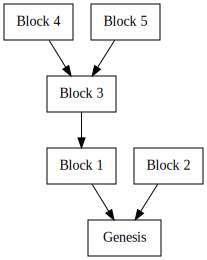
A blockchain network is comprised of nodes. These nodes each have a view of many different forks of a blockchain and must decide which forks to follow and what actions to take based on the forks of the chain that they are aware of.
So in specifying an architecture to carry out the functionality of a Parachain Host, we have to answer two categories of questions:
- What is the state-transition function of the blockchain? What is necessary for a transition to be considered valid, and what information is carried within the implicit state of a block?
- Being aware of various forks of the blockchain as well as global private state such as a view of the current time, what behaviors should a node undertake? What information should a node extract from the state of which forks, and how should that information be used?
The first category of questions will be addressed by the Runtime, which defines the state-transition logic of the chain. Runtime logic only has to focus on the perspective of one chain, as each state has only a single parent state.
The second category of questions addressed by Node-side behavior. Node-side behavior defines all activities that a node undertakes, given its view of the blockchain/block-DAG. Node-side behavior can take into account all or many of the forks of the blockchain, and only conditionally undertake certain activities based on which forks it is aware of, as well as the state of the head of those forks.
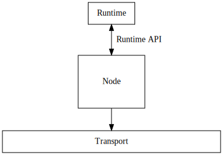
It is also helpful to divide Node-side behavior into two further categories: Networking and Core. Networking behaviors relate to how information is distributed between nodes. Core behaviors relate to internal work that a specific node does. These two categories of behavior often interact, but can be heavily abstracted from each other. Core behaviors care that information is distributed and received, but not the internal details of how distribution and receipt function. Networking behaviors act on requests for distribution or fetching of information, but are not concerned with how the information is used afterwards. This allows us to create clean boundaries between Core and Networking activities, improving the modularity of the code.
___________________ ____________________
/ Core \ / Networking \
| | Send "Hello" | |
| |- to "foo" --->| |
| | | |
| | | |
| | | |
| | Got "World" | |
| |<-- from "bar" --| |
| | | |
\___________________/ \____________________/
______| |______
___Transport___
Node-side behavior is split up into various subsystems. Subsystems are long-lived workers that perform a particular category of work. Subsystems can communicate with each other, and do so via an Overseer that prevents race conditions.
Runtime logic is divided up into Modules and APIs. Modules encapsulate particular behavior of the system. Modules consist of storage, routines, and entry-points. Routines are invoked by entry points, by other modules, upon block initialization or closing. Routines can read and alter the storage of the module. Entry-points are the means by which new information is introduced to a module and can limit the origins (user, root, parachain) that they accept being called by. Each block in the blockchain contains a set of Extrinsics. Each extrinsic targets a a specific entry point to trigger and which data should be passed to it. Runtime APIs provide a means for Node-side behavior to extract meaningful information from the state of a single fork.
These two aspects of the implementation are heavily dependent on each other. The Runtime depends on Node-side behavior to author blocks, and to include Extrinsics which trigger the correct entry points. The Node-side behavior relies on Runtime APIs to extract information necessary to determine which actions to take.
Messaging Overview
The Polkadot Host has a few mechanisms that are responsible for message passing. They can be generally divided on two categories: Horizontal and Vertical. Horizontal Message Passing (HMP) refers to mechanisms that are responsible for exchanging messages between parachains. Vertical Message Passing (VMP) is used for communication between the relay chain and parachains.
Vertical Message Passing
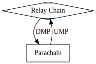
Downward Message Passing (DMP) is a mechanism for delivering messages to parachains from the relay chain.
Each parachain has its own queue that stores all pending inbound downward messages. A parachain doesn't have to process all messages at once, however, there are rules as to how the downward message queue should be processed. Currently, at least one message must be consumed per candidate if the queue is not empty. The downward message queue doesn't have a cap on its size and it is up to the relay-chain to put mechanisms that prevent spamming in place.
Upward Message Passing (UMP) is a mechanism responsible for delivering messages in the opposite direction: from a parachain up to the relay chain. Upward messages are essentially byte blobs. However, they are interpreted by the relay-chain according to the XCM standard.
The XCM standard is a common vocabulary of messages. The XCM standard doesn't require a particular interpretation of a message. However, the parachains host (e.g. Polkadot) guarantees certain semantics for those.
Moreover, while most XCM messages are handled by the on-chain XCM interpreter, some of the messages are special cased. Specifically, those messages can be checked during the acceptance criteria and thus invalid messages would lead to rejecting the candidate itself.
One kind of such a message is Xcm::Transact. This upward message can be seen as a way for a parachain
to execute arbitrary entrypoints on the relay-chain. Xcm::Transact messages resemble regular extrinsics with the exception that they
originate from a parachain.
The payload of Xcm::Transact messages is referred as to Dispatchable. When a candidate with such a message is enacted
the dispatchables are put into a queue corresponding to the parachain. There can be only so many dispatchables in that queue at once.
The weight that processing of the dispatchables can consume is limited by a preconfigured value. Therefore, it is possible
that some dispatchables will be left for later blocks. To make the dispatching more fair, the queues are processed turn-by-turn
in a round robin fashion.
The second category of special cased XCM messages are for horizontal messaging channel management, namely messages meant to request opening and closing HRMP channels (HRMP will be described below).
Horizontal Message Passing
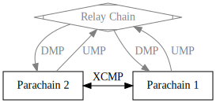
Cross-Chain Message Passing
The most important member of this family is XCMP.
ℹ️ XCMP is currently under construction and details are subject for change.
XCMP is a message passing mechanism between parachains that require minimal involvement of the relay chain. The relay chain provides means for sending parachains to authenticate messages sent to recipient parachains.
Semantically communication occurs through so called channels. A channel is unidirectional and it has two endpoints, for sender and for recipient. A channel can be opened only if the both parties agree and closed unilaterally.
Only the channel metadata is stored on the relay-chain in a very compact form: all messages and their contents sent by the sender parachain are encoded using only one root hash. This root is referred as MQC head.
The authenticity of the messages must be proven using that root hash to the receiving party at the candidate authoring time. The proof stems from the relay parent storage that contains the root hash of the channel. Since not all messages are required to be processed by the receiver's candidate, only the processed messages are supplied (i.e. preimages), rest are provided as hashes.
Further details can be found at the official repository for the Cross-Consensus Message Format (XCM), as well as at the W3F research website and this blogpost.
HRMP (Horizontally Relay-routed Message Passing) is a stop gap that predates XCMP. Semantically, it mimics XCMP's interface. The crucial difference from XCMP though is that all the messages are stored in the relay-chain storage. That makes things simple but at the same time that makes HRMP more demanding in terms of resources thus making it more expensive.
Once XCMP is available we expect to retire HRMP.
Runtime Architecture
It's clear that we want to separate different aspects of the runtime logic into different modules. Modules define their own storage, routines, and entry-points. They also define initialization and finalization logic.
Due to the (lack of) guarantees provided by a particular blockchain-runtime framework, there is no defined or dependable order in which modules' initialization or finalization logic will run. Supporting this blockchain-runtime framework is important enough to include that same uncertainty in our model of runtime modules in this guide. Furthermore, initialization logic of modules can trigger the entry-points or routines of other modules. This is one architectural pressure against dividing the runtime logic into multiple modules. However, in this case the benefits of splitting things up outweigh the costs, provided that we take certain precautions against initialization and entry-point races.
We also expect, although it's beyond the scope of this guide, that these runtime modules will exist alongside various other modules. This has two facets to consider. First, even if the modules that we describe here don't invoke each others' entry points or routines during initialization, we still have to protect against those other modules doing that. Second, some of those modules are expected to provide governance capabilities for the chain. Configuration exposed by parachain-host modules is mostly for the benefit of these governance modules, to allow the operators or community of the chain to tweak parameters.
The runtime's primary roles to manage scheduling and updating of parachains and parathreads, as well as handling misbehavior reports and slashing. This guide doesn't focus on how parachains or parathreads are registered, only that they are. Also, this runtime description assumes that validator sets are selected somehow, but doesn't assume any other details than a periodic session change event. Session changes give information about the incoming validator set and the validator set of the following session.
The runtime also serves another role, which is to make data available to the Node-side logic via Runtime APIs. These Runtime APIs should be sufficient for the Node-side code to author blocks correctly.
There is some functionality of the relay chain relating to parachains that we also consider beyond the scope of this document. In particular, all modules related to how parachains are registered aren't part of this guide, although we do provide routines that should be called by the registration process.
We will split the logic of the runtime up into these modules:
- Initializer: manage initialization order of the other modules.
- Shared: manages shared storage and configurations for other modules.
- Configuration: manage configuration and configuration updates in a non-racy manner.
- Paras: manage chain-head and validation code for parachains and parathreads.
- Scheduler: manages parachain and parathread scheduling as well as validator assignments.
- Inclusion: handles the inclusion and availability of scheduled parachains and parathreads.
- Validity: handles secondary checks and dispute resolution for included, available parablocks.
- Hrmp: handles horizontal messages between paras.
- Ump: Handles upward messages from a para to the relay chain.
- Dmp: Handles downward messages from the relay chain to the para.
The Initializer module is special - it's responsible for handling the initialization logic of the other modules to ensure that the correct initialization order and related invariants are maintained. The other modules won't specify a on-initialize logic, but will instead expose a special semi-private routine that the initialization module will call. The other modules are relatively straightforward and perform the roles described above.
The Parachain Host operates under a changing set of validators. Time is split up into periodic sessions, where each session brings a potentially new set of validators. Sessions are buffered by one, meaning that the validators of the upcoming session n+1 are determined at the end of session n-1, right before session n starts. Parachain Host runtime modules need to react to changes in the validator set, as it will affect the runtime logic for processing candidate backing, availability bitfields, and misbehavior reports. The Parachain Host modules can't determine ahead-of-time exactly when session change notifications are going to happen within the block (note: this depends on module initialization order again - better to put session before parachains modules).
The relay chain is intended to use BABE or SASSAFRAS, which both have the property that a session changing at a block is determined not by the number of the block but instead by the time the block is authored. In some sense, sessions change in-between blocks, not at blocks. This has the side effect that the session of a child block cannot be determined solely by the parent block's identifier. Being able to unilaterally determine the validator-set at a specific block based on its parent hash would make a lot of Node-side logic much simpler.
In order to regain the property that the validator set of a block is predictable by its parent block, we delay session changes' application to Parachains by 1 block. This means that if there is a session change at block X, that session change will be stored and applied during initialization of direct descendents of X. This principal side effect of this change is that the Parachains runtime can disagree with session or consensus modules about which session it currently is. Misbehavior reporting routines in particular will be affected by this, although not severely. The parachains runtime might believe it is the last block of the session while the system is really in the first block of the next session. In such cases, a historical validator-set membership proof will need to accompany any misbehavior report, although they typically do not need to during current-session misbehavior reports.
So the other role of the initializer module is to forward session change notifications to modules in the initialization order. Session change is also the point at which the Configuration Module updates the configuration. Most of the other modules will handle changes in the configuration during their session change operation, so the initializer should provide both the old and new configuration to all the other modules alongside the session change notification. This means that a session change notification should consist of the following data:
#![allow(unused)] fn main() { struct SessionChangeNotification { // The new validators in the session. validators: Vec<ValidatorId>, // The validators for the next session. queued: Vec<ValidatorId>, // The configuration before handling the session change. prev_config: HostConfiguration, // The configuration after handling the session change. new_config: HostConfiguration, // A secure randomn seed for the session, gathered from BABE. random_seed: [u8; 32], // The session index of the beginning session. session_index: SessionIndex, } }
TODO Diagram: order of runtime operations (initialization, session change)
Initializer Module
This module is responsible for initializing the other modules in a deterministic order. It also has one other purpose as described in the overview of the runtime: accepting and forwarding session change notifications.
Storage
#![allow(unused)] fn main() { HasInitialized: bool; // buffered session changes along with the block number at which they should be applied. // // typically this will be empty or one element long. ordered ascending by BlockNumber and insertion // order. BufferedSessionChanges: Vec<(BlockNumber, ValidatorSet, ValidatorSet)>; }
Initialization
Before initializing modules, remove all changes from the BufferedSessionChanges with number less than or equal to the current block number, and apply the last one. The session change is applied to all modules in the same order as initialization.
The other parachains modules are initialized in this order:
- Configuration
- Shared
- Paras
- Scheduler
- Inclusion
- SessionInfo
- Disputes
- DMP
- UMP
- HRMP
The Configuration Module is first, since all other modules need to operate under the same configuration as each other. Then the Shared module is invoked, which determines the set of active validators. It would lead to inconsistency if, for example, the scheduler ran first and then the configuration was updated before the Inclusion module.
Set HasInitialized to true.
Session Change
Store the session change information in BufferedSessionChange along with the block number at which it was submitted, plus one. Although the expected operational parameters of the block authorship system should prevent more than one change from being buffered at any time, it may occur. Regardless, we always need to track the block number at which the session change can be applied so as to remain flexible over session change notifications being issued before or after initialization of the current block.
Finalization
Finalization order is less important in this case than initialization order, so we finalize the modules in the reverse order from initialization.
Set HasInitialized to false.
Configuration Module
This module is responsible for managing all configuration of the parachain host in-flight. It provides a central point for configuration updates to prevent races between configuration changes and parachain-processing logic. Configuration can only change during the session change routine, and as this module handles the session change notification first it provides an invariant that the configuration does not change throughout the entire session. Both the scheduler and inclusion modules rely on this invariant to ensure proper behavior of the scheduler.
The configuration that we will be tracking is the HostConfiguration struct.
Storage
The configuration module is responsible for two main pieces of storage.
#![allow(unused)] fn main() { /// The current configuration to be used. Configuration: HostConfiguration; /// A pending configuration to be applied on session change. PendingConfiguration: Option<HostConfiguration>; }
Session change
The session change routine for the Configuration module is simple. If the PendingConfiguration is Some, take its value and set Configuration to be equal to it. Reset PendingConfiguration to None.
Routines
#![allow(unused)] fn main() { /// Get the host configuration. pub fn configuration() -> HostConfiguration { Configuration::get() } /// Updating the pending configuration to be applied later. fn update_configuration(f: impl FnOnce(&mut HostConfiguration)) { PendingConfiguration::mutate(|pending| { let mut x = pending.unwrap_or_else(Self::configuration); f(&mut x); *pending = Some(x); }) } }
Entry-points
The Configuration module exposes an entry point for each configuration member. These entry-points accept calls only from governance origins. These entry-points will use the update_configuration routine to update the specific configuration field.
Shared Module
This module is responsible for managing shared storage and configuration for other modules.
It is important that other pallets are able to use the Shared Module, so it should not have a dependency on any other modules in the Parachains Runtime.
For the moment, it is used exclusively to track the current session index across the Parachains Runtime system, and when it should be allowed to schedule future changes to Paras or Configurations.
Constants
#![allow(unused)] fn main() { // `SESSION_DELAY` is used to delay any changes to Paras registration or configurations. // Wait until the session index is 2 larger then the current index to apply any changes, // which guarantees that at least one full session has passed before any changes are applied. pub(crate) const SESSION_DELAY: SessionIndex = 2; }
Storage
#![allow(unused)] fn main() { /// The current session index within the Parachains Runtime system. CurrentSessionIndex: SessionIndex; /// All the validators actively participating in parachain consensus. /// Indices are into the broader validator set. ActiveValidatorIndices: Vec<ValidatorIndex>, /// The parachain attestation keys of the validators actively participating in parachain consensus. /// This should be the same length as `ActiveValidatorIndices`. ActiveValidatorKeys: Vec<ValidatorId> }
Initialization
The Shared Module currently has no initialization routines.
The Shared Module is initialized directly after the Configuration module, but before all other modules. It is important to update the Shared Module before any other module since its state may be used within the logic of other modules, and it is important that the state is consistent across them.
Session Change
During a session change, the Shared Module receives and stores the current Session Index directly from the initializer module, along with the broader validator set, and it returns the new list of validators.
The list of validators should be first shuffled according to the chain's random seed and then truncated. The indices of these validators should be set to ActiveValidatorIndices and then returned back to the initializer. ActiveValidatorKeys should be set accordingly.
This information is used in the:
- Configuration Module: For delaying updates to configurations until at lease one full session has passed.
- Paras Module: For delaying updates to paras until at least one full session has passed.
Finalization
The Shared Module currently has no finalization routines.
Functions
scheduled_sessions() -> SessionIndex: Return the next session index where updates to the Parachains Runtime system would be safe to apply.set_session_index(SessionIndex): For tests. Set the current session index in the Shared Module.
Disputes Module
After a backed candidate is made available, it is included and proceeds into an acceptance period during which validators are randomly selected to do (secondary) approval checks of the parablock. Any reports disputing the validity of the candidate will cause escalation, where even more validators are requested to check the block, and so on, until either the parablock is determined to be invalid or valid. Those on the wrong side of the dispute are slashed and, if the parablock is deemed invalid, the relay chain is rolled back to a point before that block was included.
However, this isn't the end of the story. We are working in a forkful blockchain environment, which carries three important considerations:
- For security, validators that misbehave shouldn't only be slashed on one fork, but on all possible forks. Validators that misbehave shouldn't be able to create a new fork of the chain when caught and get away with their misbehavior.
- It is possible (and likely) that the parablock being contested has not appeared on all forks.
- If a block author believes that there is a disputed parablock on a specific fork that will resolve to a reversion of the fork, that block author is better incentivized to build on a different fork which does not include that parablock.
This means that in all likelihood, there is the possibility of disputes that are started on one fork of the relay chain, and as soon as the dispute resolution process starts to indicate that the parablock is indeed invalid, that fork of the relay chain will be abandoned and the dispute will never be fully resolved on that chain.
Even if this doesn't happen, there is the possibility that there are two disputes underway, and one resolves leading to a reversion of the chain before the other has concluded. In this case we want to both transplant the concluded dispute onto other forks of the chain as well as the unconcluded dispute.
We account for these requirements by having the disputes module handle two kinds of disputes.
- Local disputes: those contesting the validity of the current fork by disputing a parablock included within it.
- Remote disputes: a dispute that has partially or fully resolved on another fork which is transplanted to the local fork for completion and eventual slashing.
When a local dispute concludes negatively, the chain needs to be abandoned and reverted back to a block where the state does not contain the bad parablock. We expect that due to the Approval Checking Protocol, the current executing block should not be finalized. So we do two things when a local dispute concludes negatively:
- Freeze the state of parachains so nothing further is backed or included.
- Issue a digest in the header of the block that signals to nodes that this branch of the chain is to be abandoned.
If, as is expected, the chain is unfinalized, the freeze will have no effect as no honest validator will attempt to build on the frozen chain. However, if the approval checking protocol has failed and the bad parablock is finalized, the freeze serves to put the chain into a governance-only mode.
The storage of this module is designed around tracking DisputeStates, updating them with votes, and tracking blocks included by this branch of the relay chain. It also contains a Frozen parameter designed to freeze the state of all parachains.
Storage
Storage Layout:
#![allow(unused)] fn main() { LastPrunedSession: Option<SessionIndex>, // All ongoing or concluded disputes for the last several sessions. Disputes: double_map (SessionIndex, CandidateHash) -> Option<DisputeState>, // All included blocks on the chain, as well as the block number in this chain that // should be reverted back to if the candidate is disputed and determined to be invalid. Included: double_map (SessionIndex, CandidateHash) -> Option<BlockNumber>, // Maps session indices to a vector indicating the number of potentially-spam disputes // each validator is participating in. Potentially-spam disputes are remote disputes which have // fewer than `byzantine_threshold + 1` validators. // // The i'th entry of the vector corresponds to the i'th validator in the session. SpamSlots: map SessionIndex -> Vec<u32>, // Whether the chain is frozen or not. Starts as `false`. When this is `true`, // the chain will not accept any new parachain blocks for backing or inclusion. // It can only be set back to `false` by governance intervention. Frozen: bool, }
byzantine_thresholdrefers to the maximum numberfof validators which may be byzantine. The total number of validators isn = 3f + ewheree in { 1, 2, 3 }.
Session Change
- If the current session is not greater than
config.dispute_period + 1, nothing to do here. - Set
pruning_target = current_session - config.dispute_period - 1. We add the extra1because we want to keep things forconfig.dispute_periodfull sessions. The stuff at the end of the most recent session has been around for ~0 sessions, not ~1. - If
LastPrunedSessionisNone, then setLastPrunedSessiontoSome(pruning_target)and return. - Otherwise, clear out all disputes, included candidates, and
SpamSlotsentries in the rangelast_pruned..=pruning_targetand setLastPrunedSessiontoSome(pruning_target).
Block Initialization
- Iterate through all disputes. If any have not concluded and started more than
config.dispute_conclusion_by_timeout_periodblocks ago, set them toConcludedand mildly punish all validators associated, as they have failed to distribute available data. If theIncludedmap does not contain the candidate and there are fewer thanbyzantine_threshold + 1participating validators, reduceSpamSlotsfor all participating validators.
Routines
-
provide_multi_dispute_data(MultiDisputeStatementSet) -> Vec<(SessionIndex, Hash)>:- Fail if any disputes in the set are duplicate or concluded before the
config.dispute_post_conclusion_acceptance_periodwindow relative to now. - Pass on each dispute statement set to
provide_dispute_data, propagating failure. - Return a list of all candidates who just had disputes initiated.
- Fail if any disputes in the set are duplicate or concluded before the
-
provide_dispute_data(DisputeStatementSet) -> bool: Provide data to an ongoing dispute or initiate a dispute.- All statements must be issued under the correct session for the correct candidate.
SessionInfois used to check statement signatures and this function should fail if any signatures are invalid.- If there is no dispute under
Disputes, create a newDisputeStatewith blank bitfields. - If
concluded_atisSome, and isconcluded_at + config.post_conclusion_acceptance_period < now, return false. - If the overlap of the validators in the
DisputeStatementSetand those already present in theDisputeStateis fewer in number thanbyzantine_threshold + 1and the candidate is not present in theIncludedmap - increment
SpamSlotsfor each validator in theDisputeStatementSetwhich is not already in theDisputeState. Initialize theSpamSlotsto a zeroed vector first, if necessary. - If the value for any spam slot exceeds
config.dispute_max_spam_slots, return false. - If the overlap of the validators in the
DisputeStatementSetand those already present in theDisputeStateis at leastbyzantine_threshold + 1, theDisputeStatehas fewer thanbyzantine_threshold + 1validators, and the candidate is not present in theIncludedmap, decrementSpamSlotsfor each validator in theDisputeState. - Import all statements into the dispute. This should fail if any statements are duplicate; if the corresponding bit for the corresponding validator is set in the dispute already.
- If
concluded_atisNone, reward all statements slightly less. - If
concluded_atisSome, reward all statements slightly less. - If either side now has supermajority, slash the other side. This may be both sides, and we support this possibility in code, but note that this requires validators to participate on both sides which has negative expected value. Set
concluded_attoSome(now). - If just concluded against the candidate and the
Includedmap contains(session, candidate): invokerevert_and_freezewith the stored block number. - Return true if just initiated, false otherwise.
-
disputes() -> Vec<(SessionIndex, CandidateHash, DisputeState)>: Get a list of all disputes and info about dispute state.- Iterate over all disputes in
Disputes. Set the flag according toconcluded.
- Iterate over all disputes in
-
note_included(SessionIndex, CandidateHash, included_in: BlockNumber):- Add
(SessionIndex, CandidateHash)to theIncludedmap withincluded_in - 1as the value. - If there is a dispute under
(Sessionindex, CandidateHash)with fewer thanbyzantine_threshold + 1participating validators, decrementSpamSlotsfor each validator in theDisputeState. - If there is a dispute under
(SessionIndex, CandidateHash)that has concluded against the candidate, invokerevert_and_freezewith the stored block number.
- Add
-
could_be_invalid(SessionIndex, CandidateHash) -> bool: Returns whether a candidate has a live dispute ongoing or a dispute which has already concluded in the negative. -
is_frozen(): Load the value ofFrozenfrom storage. -
`revert_and_freeze(BlockNumber):
- If
is_frozen()return. - issue a digest in the block header which indicates the chain is to be abandoned back to the stored block number.
- Set
Frozento true.
- If
Paras Module
The Paras module is responsible for storing information on parachains and parathreads. Registered parachains and parathreads cannot change except at session boundaries and after at least a full session has passed. This is primarily to ensure that the number and meaning of bits required for the availability bitfields does not change except at session boundaries.
It's also responsible for managing parachain validation code upgrades as well as maintaining availability of old parachain code and its pruning.
Storage
Utility Structs
#![allow(unused)] fn main() { // the two key times necessary to track for every code replacement. pub struct ReplacementTimes { /// The relay-chain block number that the code upgrade was expected to be activated. /// This is when the code change occurs from the para's perspective - after the /// first parablock included with a relay-parent with number >= this value. expected_at: BlockNumber, /// The relay-chain block number at which the parablock activating the code upgrade was /// actually included. This means considered included and available, so this is the time at which /// that parablock enters the acceptance period in this fork of the relay-chain. activated_at: BlockNumber, } /// Metadata used to track previous parachain validation code that we keep in /// the state. pub struct ParaPastCodeMeta { // Block numbers where the code was expected to be replaced and where the code // was actually replaced, respectively. The first is used to do accurate lookups // of historic code in historic contexts, whereas the second is used to do // pruning on an accurate timeframe. These can be used as indices // into the `PastCode` map along with the `ParaId` to fetch the code itself. upgrade_times: Vec<ReplacementTimes>, // This tracks the highest pruned code-replacement, if any. last_pruned: Option<BlockNumber>, } enum UseCodeAt { // Use the current code. Current, // Use the code that was replaced at the given block number. ReplacedAt(BlockNumber), } struct ParaGenesisArgs { /// The initial head-data to use. genesis_head: HeadData, /// The validation code to start with. validation_code: ValidationCode, /// True if parachain, false if parathread. parachain: bool, } /// The possible states of a para, to take into account delayed lifecycle changes. pub enum ParaLifecycle { /// A Para is new and is onboarding. Onboarding, /// Para is a Parathread. Parathread, /// Para is a Parachain. Parachain, /// Para is a Parathread which is upgrading to a Parachain. UpgradingParathread, /// Para is a Parachain which is downgrading to a Parathread. DowngradingParachain, /// Parathread is being offboarded. OutgoingParathread, /// Parachain is being offboarded. OutgoingParachain, } }
Para Lifecycle
Because the state of parachains and parathreads are delayed by a session, we track the specific
state of the para using the ParaLifecycle enum.
None Parathread Parachain
+ + +
| | |
| (2 Session Delay) | |
| | |
+----------------------->+ |
| Onboarding | |
| | |
+-------------------------------------------------->+
| Onboarding | |
| | |
| +------------------------->+
| | UpgradingParathread |
| | |
| +<-------------------------+
| | DowngradingParachain |
| | |
|<-----------------------+ |
| OutgoingParathread | |
| | |
+<--------------------------------------------------+
| | OutgoingParachain |
| | |
+ + +
During the transition period, the para object is still considered in its existing state.
Storage Layout
#![allow(unused)] fn main() { /// All parachains. Ordered ascending by ParaId. Parathreads are not included. Parachains: Vec<ParaId>, /// The current lifecycle state of all known Para Ids. ParaLifecycle: map ParaId => Option<ParaLifecycle>, /// The head-data of every registered para. Heads: map ParaId => Option<HeadData>; /// The validation code hash of every live para. CurrentCodeHash: map ParaId => Option<ValidationCodeHash>; /// Actual past code hash, indicated by the para id as well as the block number at which it became outdated. PastCodeHash: map (ParaId, BlockNumber) => Option<ValidationCodeHash>; /// Past code of parachains. The parachains themselves may not be registered anymore, /// but we also keep their code on-chain for the same amount of time as outdated code /// to keep it available for secondary checkers. PastCodeMeta: map ParaId => ParaPastCodeMeta; /// Which paras have past code that needs pruning and the relay-chain block at which the code was replaced. /// Note that this is the actual height of the included block, not the expected height at which the /// code upgrade would be applied, although they may be equal. /// This is to ensure the entire acceptance period is covered, not an offset acceptance period starting /// from the time at which the parachain perceives a code upgrade as having occurred. /// Multiple entries for a single para are permitted. Ordered ascending by block number. PastCodePruning: Vec<(ParaId, BlockNumber)>; /// The block number at which the planned code change is expected for a para. /// The change will be applied after the first parablock for this ID included which executes /// in the context of a relay chain block with a number >= `expected_at`. FutureCodeUpgrades: map ParaId => Option<BlockNumber>; /// The actual future code of a para. FutureCodeHash: map ParaId => Option<ValidationCodeHash>; /// The actions to perform during the start of a specific session index. ActionsQueue: map SessionIndex => Vec<ParaId>; /// Upcoming paras instantiation arguments. UpcomingParasGenesis: map ParaId => Option<ParaGenesisArgs>; /// The number of references on the validation code in `CodeByHash` storage. CodeByHashRefs: map ValidationCodeHash => u32; /// Validation code stored by its hash. CodeByHash: map ValidationCodeHash => Option<ValidationCode> }
Session Change
- Execute all queued actions for paralifecycle changes:
- Clean up outgoing paras.
- This means removing the entries under
Heads,CurrentCode,FutureCodeUpgrades, andFutureCode. An according entry should be added toPastCode,PastCodeMeta, andPastCodePruningusing the outgoingParaIdand removedCurrentCodevalue. This is because any outdated validation code must remain available on-chain for a determined amount of blocks, and validation code outdated by de-registering the para is still subject to that invariant.
- This means removing the entries under
- Apply all incoming paras by initializing the
HeadsandCurrentCodeusing the genesis parameters. - Amend the
Parachainslist andParaLifecycleto reflect changes in registered parachains. - Amend the
ParaLifecycleset to reflect changes in registered parathreads. - Upgrade all parathreads that should become parachains, updating the
Parachainslist andParaLifecycle. - Downgrade all parachains that should become parathreads, updating the
Parachainslist andParaLifecycle. - Return list of outgoing paras to the initializer for use by other modules.
Initialization
- Do pruning based on all entries in
PastCodePruningwithBlockNumber <= now. Update the correspondingPastCodeMetaandPastCodeaccordingly.
Routines
schedule_para_initialize(ParaId, ParaGenesisArgs): Schedule a para to be initialized at the next session. Noop if para is already registered in the system with someParaLifecycle.schedule_para_cleanup(ParaId): Schedule a para to be cleaned up after the next full session.schedule_parathread_upgrade(ParaId): Schedule a parathread to be upgraded to a parachain.schedule_parachain_downgrade(ParaId): Schedule a parachain to be downgraded to a parathread.schedule_code_upgrade(ParaId, CurrentCode, expected_at: BlockNumber): Schedule a future code upgrade of the given parachain, to be applied after inclusion of a block of the same parachain executed in the context of a relay-chain block with number >=expected_at.note_new_head(ParaId, HeadData, BlockNumber): note that a para has progressed to a new head, where the new head was executed in the context of a relay-chain block with given number. This will apply pending code upgrades based on the block number provided.validation_code_at(ParaId, at: BlockNumber, assume_intermediate: Option<BlockNumber>): Fetches the validation code to be used when validating a block in the context of the given relay-chain height. A second block number parameter may be used to tell the lookup to proceed as if an intermediate parablock has been included at the given relay-chain height. This may return past, current, or (with certain choices ofassume_intermediate) future code.assume_intermediate, if provided, must be beforeat. If the validation code has been pruned, this will returnNone.validation_code_hash_at(ParaId, at: BlockNumber, assume_intermediate: Option<BlockNumber>): Just likevalidation_code_at, but returns the code hash.lifecycle(ParaId) -> Option<ParaLifecycle>: Return theParaLifecycleof a para.is_parachain(ParaId) -> bool: Returns true if the para ID references any live parachain, including those which may be transitioning to a parathread in the future.is_parathread(ParaId) -> bool: Returns true if the para ID references any live parathread, including those which may be transitioning to a parachain in the future.is_valid_para(ParaId) -> bool: Returns true if the para ID references either a live parathread or live parachain.last_code_upgrade(id: ParaId, include_future: bool) -> Option<BlockNumber>: The block number of the last scheduled upgrade of the requested para. Includes future upgrades if the flag is set. This is theexpected_atnumber, not theactivated_atnumber.
Finalization
No finalization routine runs for this module.
Scheduler Module
TODO: this section is still heavily under construction. key questions about availability cores and validator assignment are still open and the flow of the the section may be contradictory or inconsistent
The Scheduler module is responsible for two main tasks:
- Partitioning validators into groups and assigning groups to parachains and parathreads.
- Scheduling parachains and parathreads
It aims to achieve these tasks with these goals in mind:
- It should be possible to know at least a block ahead-of-time, ideally more, which validators are going to be assigned to which parachains.
- Parachains that have a candidate pending availability in this fork of the chain should not be assigned.
- Validator assignments should not be gameable. Malicious cartels should not be able to manipulate the scheduler to assign themselves as desired.
- High or close to optimal throughput of parachains and parathreads. Work among validator groups should be balanced.
Availability Cores
The Scheduler manages resource allocation using the concept of "Availability Cores". There will be one availability core for each parachain, and a fixed number of cores used for multiplexing parathreads. Validators will be partitioned into groups, with the same number of groups as availability cores. Validator groups will be assigned to different availability cores over time.
An availability core can exist in either one of two states at the beginning or end of a block: free or occupied. A free availability core can have a parachain or parathread assigned to it for the potential to have a backed candidate included. After backing, the core enters the occupied state as the backed candidate is pending availability. There is an important distinction: a core is not considered occupied until it is in charge of a block pending availability, although the implementation may treat scheduled cores the same as occupied ones for brevity. A core exits the occupied state when the candidate is no longer pending availability - either on timeout or on availability. A core starting in the occupied state can move to the free state and back to occupied all within a single block, as availability bitfields are processed before backed candidates. At the end of the block, there is a possible timeout on availability which can move the core back to the free state if occupied.
Cores are treated as an ordered list and are typically referred to by their index in that list.
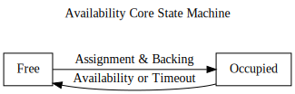
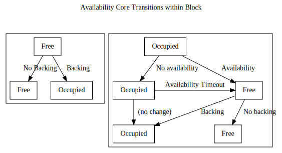
Validator Groups
Validator group assignments do not need to change very quickly. The security benefits of fast rotation are redundant with the challenge mechanism in the Approval process. Because of this, we only divide validators into groups at the beginning of the session and do not shuffle membership during the session. However, we do take steps to ensure that no particular validator group has dominance over a single parachain or parathread-multiplexer for an entire session to provide better guarantees of liveness.
Validator groups rotate across availability cores in a round-robin fashion, with rotation occurring at fixed intervals. The i'th group will be assigned to the (i+k)%n'th core at any point in time, where k is the number of rotations that have occurred in the session, and n is the number of cores. This makes upcoming rotations within the same session predictable.
When a rotation occurs, validator groups are still responsible for distributing availability chunks for any previous cores that are still occupied and pending availability. In practice, rotation and availability-timeout frequencies should be set so this will only be the core they have just been rotated from. It is possible that a validator group is rotated onto a core which is currently occupied. In this case, the validator group will have nothing to do until the previously-assigned group finishes their availability work and frees the core or the availability process times out. Depending on if the core is for a parachain or parathread, a different timeout t from the HostConfiguration will apply. Availability timeouts should only be triggered in the first t-1 blocks after the beginning of a rotation.
Claims
Parathreads operate on a system of claims. Collators participate in auctions to stake a claim on authoring the next block of a parathread, although the auction mechanism is beyond the scope of the scheduler. The scheduler guarantees that they'll be given at least a certain number of attempts to author a candidate that is backed. Attempts that fail during the availability phase are not counted, since ensuring availability at that stage is the responsibility of the backing validators, not of the collator. When a claim is accepted, it is placed into a queue of claims, and each claim is assigned to a particular parathread-multiplexing core in advance. Given that the current assignments of validator groups to cores are known, and the upcoming assignments are predictable, it is possible for parathread collators to know who they should be talking to now and how they should begin establishing connections with as a fallback.
With this information, the Node-side can be aware of which parathreads have a good chance of being includable within the relay-chain block and can focus any additional resources on backing candidates from those parathreads. Furthermore, Node-side code is aware of which validator group will be responsible for that thread. If the necessary conditions are reached for core reassignment, those candidates can be backed within the same block as the core being freed.
Parathread claims, when scheduled onto a free core, may not result in a block pending availability. This may be due to collator error, networking timeout, or censorship by the validator group. In this case, the claims should be retried a certain number of times to give the collator a fair shot.
Storage
Utility structs:
#![allow(unused)] fn main() { // A claim on authoring the next block for a given parathread. struct ParathreadClaim(ParaId, CollatorId); // An entry tracking a claim to ensure it does not pass the maximum number of retries. struct ParathreadEntry { claim: ParathreadClaim, retries: u32, } // A queued parathread entry, pre-assigned to a core. struct QueuedParathread { claim: ParathreadEntry, /// offset within the set of para-threads ranged `0..config.parathread_cores`. core_offset: u32, } struct ParathreadQueue { queue: Vec<QueuedParathread>, /// offset within the set of para-threads ranged `0..config.parathread_cores`. next_core_offset: u32, } enum CoreOccupied { Parathread(ParathreadEntry), // claim & retries Parachain, } enum AssignmentKind { Parachain, Parathread(CollatorId, u32), } struct CoreAssignment { core: CoreIndex, para_id: ParaId, kind: AssignmentKind, group_idx: GroupIndex, } // reasons a core might be freed. enum FreedReason { Concluded, TimedOut, } }
Storage layout:
#![allow(unused)] fn main() { /// All the validator groups. One for each core. Indices are into the `ActiveValidators` storage. ValidatorGroups: Vec<Vec<ValidatorIndex>>; /// A queue of upcoming claims and which core they should be mapped onto. ParathreadQueue: ParathreadQueue; /// One entry for each availability core. Entries are `None` if the core is not currently occupied. /// The i'th parachain belongs to the i'th core, with the remaining cores all being /// parathread-multiplexers. AvailabilityCores: Vec<Option<CoreOccupied>>; /// An index used to ensure that only one claim on a parathread exists in the queue or is /// currently being handled by an occupied core. ParathreadClaimIndex: Vec<ParaId>; /// The block number where the session start occurred. Used to track how many group rotations have occurred. SessionStartBlock: BlockNumber; /// Currently scheduled cores - free but up to be occupied. /// The value contained here will not be valid after the end of a block. /// Runtime APIs should be used to determine scheduled cores /// for the upcoming block. Scheduled: Vec<CoreAssignment>, // sorted ascending by CoreIndex. }
Session Change
Session changes are the only time that configuration can change, and the Configuration module's session-change logic is handled before this module's. We also lean on the behavior of the Inclusion module which clears all its occupied cores on session change. Thus we don't have to worry about cores being occupied across session boundaries and it is safe to re-size the AvailabilityCores bitfield.
Actions:
- Set
SessionStartBlockto current block number + 1, as session changes are applied at the end of the block. - Clear all
Somemembers ofAvailabilityCores. Return all parathread claims to queue with retries un-incremented. - Set
configuration = Configuration::configuration()(seeHostConfiguration) - Fetch
Shared::ActiveValidatorsas AV. - Determine the number of cores & validator groups as
n_cores. This is the maximum ofParas::parachains().len() + configuration.parathread_coresn_validators / max_validators_per_coreifconfiguration.max_validators_per_coreisSomeand non-zero.
- Resize
AvailabilityCoresto have lengthn_coreswith allNoneentries. - Compute new validator groups by shuffling using a secure randomness beacon
- Note that the total number of validators
Vin AV may not be evenly divided byn_cores. - The groups are selected by partitioning AV. The first V % N groups will have (V / n_cores) + 1 members, while the remaining groups will have (V / N) members each.
- Instead of using the indices within AV, which point to the broader set, indices into AV should be used. This implies that groups should have simply ascending validator indices.
- Note that the total number of validators
- Prune the parathread queue to remove all retries beyond
configuration.parathread_retries.- Also prune all parathread claims corresponding to de-registered parathreads.
- all pruned claims should have their entry removed from the parathread index.
- assign all non-pruned claims to new cores if the number of parathread cores has changed between the
new_configandold_configof theSessionChangeNotification. - Assign claims in equal balance across all cores if rebalancing, and set the
next_coreof theParathreadQueueby incrementing the relative index of the last assigned core and taking it modulo the number of parathread cores.
Initialization
No initialization routine runs for this module.
Finalization
No finalization routine runs for this module.
Routines
add_parathread_claim(ParathreadClaim): Add a parathread claim to the queue.- Fails if any parathread claim on the same parathread is currently indexed.
- Fails if the queue length is >=
config.scheduling_lookahead * config.parathread_cores. - The core used for the parathread claim is the
next_corefield of theParathreadQueueand addingParas::parachains().len()to it. next_coreis then updated by adding 1 and taking it moduloconfig.parathread_cores.- The claim is then added to the claim index.
schedule(Vec<(CoreIndex, FreedReason)>, now: BlockNumber): schedule new core assignments, with a parameter indicating previously-occupied cores which are to be considered returned and why they are being returned.- All freed parachain cores should be assigned to their respective parachain
- All freed parathread cores whose reason for freeing was
FreedReason::Concludedshould have the claim removed from the claim index. - All freed parathread cores whose reason for freeing was
FreedReason::TimedOutshould have the claim added to the parathread queue again without retries incremented - All freed parathread cores should take the next parathread entry from the queue.
- The i'th validator group will be assigned to the
(i+k)%n'th core at any point in time, wherekis the number of rotations that have occurred in the session, andnis the total number of cores. This makes upcoming rotations within the same session predictable. Rotations are based off ofnow.
scheduled() -> Vec<CoreAssignment>: Get currently scheduled core assignments.occupied(Vec<CoreIndex>). Note that the given cores have become occupied.- Behavior undefined if any given cores were not scheduled.
- Behavior undefined if the given cores are not sorted ascending by core index
- This clears them from
Scheduledand marks each correspondingcorein theAvailabilityCoresas occupied. - Since both the availability cores and the newly-occupied cores lists are sorted ascending, this method can be implemented efficiently.
core_para(CoreIndex) -> ParaId: return the currently-scheduled or occupied ParaId for the given core.group_validators(GroupIndex) -> Option<Vec<ValidatorIndex>>: return all validators in a given group, if the group index is valid for this session.availability_timeout_predicate() -> Option<impl Fn(CoreIndex, BlockNumber) -> bool>: returns an optional predicate that should be used for timing out occupied cores. ifNone, no timing-out should be done. The predicate accepts the index of the core, and the block number since which it has been occupied. The predicate should be implemented based on the time since the last validator group rotation, and the respective parachain and parathread timeouts, i.e. only withinmax(config.chain_availability_period, config.thread_availability_period)of the last rotation would this returnSome.group_rotation_info(now: BlockNumber) -> GroupRotationInfo: Returns a helper for determining group rotation.next_up_on_available(CoreIndex) -> Option<ScheduledCore>: Return the next thing that will be scheduled on this core assuming it is currently occupied and the candidate occupying it became available. Returns inScheduledCoreformat (todo: link to Runtime APIs page; linkcheck doesn't allow this right now). For parachains, this is always the ID of the parachain and no specified collator. For parathreads, this is based on the next item in theParathreadQueueassigned to that core, and isNoneif there isn't one.next_up_on_time_out(CoreIndex) -> Option<ScheduledCore>: Return the next thing that will be scheduled on this core assuming it is currently occupied and the candidate occupying it timed out. Returns inScheduledCoreformat (todo: link to Runtime APIs page; linkcheck doesn't allow this right now). For parachains, this is always the ID of the parachain and no specified collator. For parathreads, this is based on the next item in theParathreadQueueassigned to that core, or if there isn't one, the claim that is currently occupying the core. OtherwiseNone.clear():- Free all scheduled cores and return parathread claims to queue, with retries incremented. Skip parathreads which no longer exist under paras.
Inclusion Module
The inclusion module is responsible for inclusion and availability of scheduled parachains and parathreads.
Storage
Helper structs:
#![allow(unused)] fn main() { struct AvailabilityBitfield { bitfield: BitVec, // one bit per core. submitted_at: BlockNumber, // for accounting, as meaning of bits may change over time. } struct CandidatePendingAvailability { core: CoreIndex, // availability core hash: CandidateHash, descriptor: CandidateDescriptor, availability_votes: Bitfield, // one bit per validator. relay_parent_number: BlockNumber, // number of the relay-parent. backers: Bitfield, // one bit per validator, set for those who backed the candidate. backed_in_number: BlockNumber, backing_group: GroupIndex, } }
Storage Layout:
#![allow(unused)] fn main() { /// The latest bitfield for each validator, referred to by index. bitfields: map ValidatorIndex => AvailabilityBitfield; /// Candidates pending availability. PendingAvailability: map ParaId => CandidatePendingAvailability; /// The commitments of candidates pending availability, by ParaId. PendingAvailabilityCommitments: map ParaId => CandidateCommitments; }
Session Change
- Clear out all candidates pending availability.
- Clear out all validator bitfields.
Routines
All failed checks should lead to an unrecoverable error making the block invalid.
-
process_bitfields(expected_bits, Bitfields, core_lookup: Fn(CoreIndex) -> Option<ParaId>):- check that there is at most 1 bitfield per validator and that the number of bits in each bitfield is equal to expected_bits.
- check that there are no duplicates
- check all validator signatures.
- apply each bit of bitfield to the corresponding pending candidate. looking up parathread cores using the
core_lookup. Disregard bitfields that have a1bit for any free cores. - For each applied bit of each availability-bitfield, set the bit for the validator in the
CandidatePendingAvailability'savailability_votesbitfield. Track all candidates that now have >2/3 of bits set in theiravailability_votes. These candidates are now available and can be enacted. - For all now-available candidates, invoke the
enact_candidateroutine with the candidate and relay-parent number. - Return a list of
(CoreIndex, CandidateHash)from freed cores consisting of the cores where candidates have become available.
-
process_candidates(parent_storage_root, BackedCandidates, scheduled: Vec<CoreAssignment>, group_validators: Fn(GroupIndex) -> Option<Vec<ValidatorIndex>>):- check that each candidate corresponds to a scheduled core and that they are ordered in the same order the cores appear in assignments in
scheduled. - check that
scheduledis sorted ascending byCoreIndex, without duplicates. - check that there is no candidate pending availability for any scheduled
ParaId. - check that each candidate's
validation_data_hashcorresponds to aPersistedValidationDatacomputed from the current state.
NOTE: With contextual execution in place, validation data will be obtained as of the state of the context block. However, only the state of the current block can be used for such a query.
- If the core assignment includes a specific collator, ensure the backed candidate is issued by that collator.
- Ensure that any code upgrade scheduled by the candidate does not happen within
config.validation_upgrade_frequencyofParas::last_code_upgrade(para_id, true), if any, comparing against the value ofParas::FutureCodeUpgradesfor the given para ID. - Check the collator's signature on the candidate data.
- check the backing of the candidate using the signatures and the bitfields, comparing against the validators assigned to the groups, fetched with the
group_validatorslookup. - call
Ump::check_upward_messages(para, commitments.upward_messages)to check that the upward messages are valid. - call
Dmp::check_processed_downward_messages(para, commitments.processed_downward_messages)to check that the DMQ is properly drained. - call
Hrmp::check_hrmp_watermark(para, commitments.hrmp_watermark)for each candidate to check rules of processing the HRMP watermark. - using
Hrmp::check_outbound_hrmp(sender, commitments.horizontal_messages)ensure that the each candidate sent a valid set of horizontal messages - create an entry in the
PendingAvailabilitymap for each backed candidate with a blankavailability_votesbitfield. - create a corresponding entry in the
PendingAvailabilityCommitmentswith the commitments. - Return a
Vec<CoreIndex>of all scheduled cores of the list of passed assignments that a candidate was successfully backed for, sorted ascending by CoreIndex.
- check that each candidate corresponds to a scheduled core and that they are ordered in the same order the cores appear in assignments in
-
enact_candidate(relay_parent_number: BlockNumber, CommittedCandidateReceipt):- If the receipt contains a code upgrade, Call
Paras::schedule_code_upgrade(para_id, code, relay_parent_number + config.validationl_upgrade_delay).
TODO: Note that this is safe as long as we never enact candidates where the relay parent is across a session boundary. In that case, which we should be careful to avoid with contextual execution, the configuration might have changed and the para may de-sync from the host's understanding of it.
- Reward all backing validators of each candidate, contained within the
backersfield. - call
Ump::receive_upward_messagesfor each backed candidate, using theUpwardMessages from theCandidateCommitments. - call
Dmp::prune_dmqwith the para id of the candidate and the candidate'sprocessed_downward_messages. - call
Hrmp::prune_hrmpwith the para id of the candiate and the candidate'shrmp_watermark. - call
Hrmp::queue_outbound_hrmpwith the para id of the candidate and the list of horizontal messages taken from the commitment, - Call
Paras::note_new_headusing theHeadDatafrom the receipt andrelay_parent_number.
- If the receipt contains a code upgrade, Call
-
collect_pending:#![allow(unused)] fn main() { fn collect_pending(f: impl Fn(CoreIndex, BlockNumber) -> bool) -> Vec<CoreIndex> { // sweep through all paras pending availability. if the predicate returns true, when given the core index and // the block number the candidate has been pending availability since, then clean up the corresponding storage for that candidate and the commitments. // return a vector of cleaned-up core IDs. } } -
force_enact(ParaId): Forcibly enact the candidate with the given ID as though it had been deemed available by bitfields. Is a no-op if there is no candidate pending availability for this para-id. This should generally not be used but it is useful during execution of Runtime APIs, where the changes to the state are expected to be discarded directly after. -
candidate_pending_availability(ParaId) -> Option<CommittedCandidateReceipt>: returns theCommittedCandidateReceiptpending availability for the para provided, if any. -
pending_availability(ParaId) -> Option<CandidatePendingAvailability>: returns the metadata around the candidate pending availability for the para, if any. -
collect_disputed(disputed: Vec<CandidateHash>) -> Vec<CoreIndex>: Sweeps through all paras pending availability. If the candidate hash is one of the disputed candidates, then clean up the corresponding storage for that candidate and the commitments. Return a vector of cleaned-up core IDs.
ParaInherent
This module is responsible for providing all data given to the runtime by the block author to the various parachains modules. The entry-point is mandatory, in that it must be invoked exactly once within every block, and it is also "inherent", in that it is provided with no origin by the block author. The data within it carries its own authentication; i.e. the data takes the form of signed statements by validators. If any of the steps within fails, the entry-point is considered as having failed and the block will be invalid.
This module does not have the same initialization/finalization concerns as the others, as it only requires that entry points be triggered after all modules have initialized and that finalization happens after entry points are triggered. Both of these are assumptions we have already made about the runtime's order of operations, so this module doesn't need to be initialized or finalized by the Initializer.
There are a couple of important notes to the operations in this inherent as they relate to disputes.
- We don't accept bitfields or backed candidates if in "governance-only" mode from having a local dispute conclude on this fork.
- When disputes are initiated, we remove the block from pending availability. This allows us to roll back chains to the block before blocks are included as opposed to backing. It's important to do this before processing bitfields.
Inclusion::collect_disputedis kind of expensive so it's important to gate this on whether there are actually any new disputes. Which should be never.- And we don't accept parablocks that have open disputes or disputes that have concluded against the candidate. It's important to import dispute statements before backing, but this is already the case as disputes are imported before processing bitfields.
Storage
#![allow(unused)] fn main() { Included: Option<()>, }
Finalization
- Take (get and clear) the value of
Included. If it is notSome, throw an unrecoverable error.
Entry Points
enter: This entry-point accepts three parameters: The relay-chain parent block header,BitfieldsandBackedCandidates.- Hash the parent header and make sure that it corresponds to the block hash of the parent (tracked by the
frame_systemFRAME module), - Invoke
Disputes::provide_multi_dispute_data. - If
Disputes::is_frozen, return and setIncludedtoSome(()). - If there are any created disputes from the current session, invoke
Inclusion::collect_disputedwith the disputed candidates. Annotate each returned core withFreedReason::Concluded. - The
Bitfieldsare first forwarded to theInclusion::process_bitfieldsroutine, returning a set of freed cores. Provide the number of availability cores (Scheduler::availability_cores().len()) as the expected number of bits and aScheduler::core_paraas a core-lookup to theprocess_bitfieldsroutine. Annotate each of these freed cores withFreedReason::Concluded. - For each freed candidate from the
Inclusion::process_bitfieldscall, invokeDisputes::note_included(current_session, candidate). - If
Scheduler::availability_timeout_predicateisSome, invokeInclusion::collect_pendingusing it and annotate each of those freed cores withFreedReason::TimedOut. - Combine and sort the dispute-freed cores, the bitfield-freed cores, and the timed-out cores.
- Invoke
Scheduler::clear - Invoke
Scheduler::schedule(freed_cores, System::current_block()) - Extract
parent_storage_rootfrom the parent header, - If
Disputes::could_be_invalid(current_session, candidate)is true for any of thebacked_candidates, fail. - Invoke the
Inclusion::process_candidatesroutine with the parameters(parent_storage_root, backed_candidates, Scheduler::scheduled(), Scheduler::group_validators). - Call
Scheduler::occupiedusing the return value of theInclusion::process_candidatescall above, first sorting the list of assigned core indices. - Call the
Ump::process_pending_upward_messagesroutine to execute all messages in upward dispatch queues. - If all of the above succeeds, set
IncludedtoSome(()).
- Hash the parent header and make sure that it corresponds to the block hash of the parent (tracked by the
DMP Module
A module responsible for Downward Message Processing (DMP). See Messaging Overview for more details.
Storage
Storage layout required for implementation of DMP.
#![allow(unused)] fn main() { /// The downward messages addressed for a certain para. DownwardMessageQueues: map ParaId => Vec<InboundDownwardMessage>; /// A mapping that stores the downward message queue MQC head for each para. /// /// Each link in this chain has a form: /// `(prev_head, B, H(M))`, where /// - `prev_head`: is the previous head hash or zero if none. /// - `B`: is the relay-chain block number in which a message was appended. /// - `H(M)`: is the hash of the message being appended. DownwardMessageQueueHeads: map ParaId => Hash; }
Initialization
No initialization routine runs for this module.
Routines
Candidate Acceptance Function:
check_processed_downward_messages(P: ParaId, processed_downward_messages: u32):- Checks that
DownwardMessageQueuesforPis at leastprocessed_downward_messageslong. - Checks that
processed_downward_messagesis at least 1 ifDownwardMessageQueuesforPis not empty.
- Checks that
Candidate Enactment:
prune_dmq(P: ParaId, processed_downward_messages: u32):- Remove the first
processed_downward_messagesfrom theDownwardMessageQueuesofP.
- Remove the first
Utility routines.
queue_downward_message(P: ParaId, M: DownwardMessage):
- Check if the size of
Mexceeds theconfig.max_downward_message_size. If so, return an error. - Wrap
MintoInboundDownwardMessageusing the current block number forsent_at. - Obtain a new MQC link for the resulting
InboundDownwardMessageand replaceDownwardMessageQueueHeadsforPwith the resulting hash. - Add the resulting
InboundDownwardMessageintoDownwardMessageQueuesforP.
Session Change
- For each
Pinoutgoing_paras(generated byParas::on_new_session):- Remove all
DownwardMessageQueuesofP. - Remove
DownwardMessageQueueHeadsforP.
- Remove all
UMP Module
A module responsible for Upward Message Passing (UMP). See Messaging Overview for more details.
Storage
Storage related to UMP
#![allow(unused)] fn main() { /// The messages waiting to be handled by the relay-chain originating from a certain parachain. /// /// Note that some upward messages might have been already processed by the inclusion logic. E.g. /// channel management messages. /// /// The messages are processed in FIFO order. RelayDispatchQueues: map ParaId => Vec<UpwardMessage>; /// Size of the dispatch queues. Caches sizes of the queues in `RelayDispatchQueue`. /// /// First item in the tuple is the count of messages and second /// is the total length (in bytes) of the message payloads. /// /// Note that this is an auxilary mapping: it's possible to tell the byte size and the number of /// messages only looking at `RelayDispatchQueues`. This mapping is separate to avoid the cost of /// loading the whole message queue if only the total size and count are required. /// /// Invariant: /// - The set of keys should exactly match the set of keys of `RelayDispatchQueues`. RelayDispatchQueueSize: map ParaId => (u32, u32); // (num_messages, total_bytes) /// The ordered list of `ParaId`s that have a `RelayDispatchQueue` entry. /// /// Invariant: /// - The set of items from this vector should be exactly the set of the keys in /// `RelayDispatchQueues` and `RelayDispatchQueueSize`. NeedsDispatch: Vec<ParaId>; /// This is the para that gets dispatched first during the next upward dispatchable queue /// execution round. /// /// Invariant: /// - If `Some(para)`, then `para` must be present in `NeedsDispatch`. NextDispatchRoundStartWith: Option<ParaId>; }
Initialization
No initialization routine runs for this module.
Routines
Candidate Acceptance Function:
check_upward_messages(P: ParaId, Vec<UpwardMessage>):- Checks that there are at most
config.max_upward_message_num_per_candidatemessages. - Checks that no message exceeds
config.max_upward_message_size. - Verify that
RelayDispatchQueueSizeforPhas enough capacity for the messages
- Checks that there are at most
Candidate Enactment:
receive_upward_messages(P: ParaId, Vec<UpwardMessage>):- Process each upward message
Min order:- Append the message to
RelayDispatchQueuesforP - Increment the size and the count in
RelayDispatchQueueSizeforP. - Ensure that
Pis present inNeedsDispatch.
- Append the message to
- Process each upward message
The following routine is meant to execute pending entries in upward message queues. This function doesn't fail, even if dispatching any of individual upward messages returns an error.
process_pending_upward_messages():
- Initialize a cumulative weight counter
Tto 0 - Iterate over items in
NeedsDispatchcyclically, starting withNextDispatchRoundStartWith. If the item specified isNonestart from the beginning. For eachPencountered: - Dequeue the first upward message
DfromRelayDispatchQueuesforP - Decrement the size of the message from
RelayDispatchQueueSizeforP - Delegate processing of the message to the runtime. The weight consumed is added to
T. - If
T >= config.ump_service_total_weight, setNextDispatchRoundStartWithtoPand finish processing. - If
RelayDispatchQueuesforPbecame empty, removePfromNeedsDispatch. - If
NeedsDispatchbecame empty then finish processing and setNextDispatchRoundStartWithtoNone.
NOTE that in practice we would need to approach the weight calculation more thoroughly, i.e. incorporate all operations that could take place on the course of handling these upward messages.
Session Change
- For each
Pinoutgoing_paras(generated byParas::on_new_session):- Remove
RelayDispatchQueueSizeofP. - Remove
RelayDispatchQueuesofP. - Remove
Pif it exists inNeedsDispatch. - If
Pis inNextDispatchRoundStartWith, then reset it toNone
- Note that if we don't remove the open/close requests since they are going to die out naturally at the end of the session.
- Remove
HRMP Module
A module responsible for Horizontally Relay-routed Message Passing (HRMP). See Messaging Overview for more details.
Storage
HRMP related structs:
#![allow(unused)] fn main() { /// A description of a request to open an HRMP channel. struct HrmpOpenChannelRequest { /// Indicates if this request was confirmed by the recipient. confirmed: bool, /// How many session boundaries ago this request was seen. age: SessionIndex, /// The amount that the sender supplied at the time of creation of this request. sender_deposit: Balance, /// The maximum message size that could be put into the channel. max_message_size: u32, /// The maximum number of messages that can be pending in the channel at once. max_capacity: u32, /// The maximum total size of the messages that can be pending in the channel at once. max_total_size: u32, } /// A metadata of an HRMP channel. struct HrmpChannel { /// The amount that the sender supplied as a deposit when opening this channel. sender_deposit: Balance, /// The amount that the recipient supplied as a deposit when accepting opening this channel. recipient_deposit: Balance, /// The maximum number of messages that can be pending in the channel at once. max_capacity: u32, /// The maximum total size of the messages that can be pending in the channel at once. max_total_size: u32, /// The maximum message size that could be put into the channel. max_message_size: u32, /// The current number of messages pending in the channel. /// Invariant: should be less or equal to `max_capacity`. msg_count: u32, /// The total size in bytes of all message payloads in the channel. /// Invariant: should be less or equal to `max_total_size`. total_size: u32, /// A head of the Message Queue Chain for this channel. Each link in this chain has a form: /// `(prev_head, B, H(M))`, where /// - `prev_head`: is the previous value of `mqc_head` or zero if none. /// - `B`: is the [relay-chain] block number in which a message was appended /// - `H(M)`: is the hash of the message being appended. /// This value is initialized to a special value that consists of all zeroes which indicates /// that no messages were previously added. mqc_head: Option<Hash>, } }
HRMP related storage layout
#![allow(unused)] fn main() { /// The set of pending HRMP open channel requests. /// /// The set is accompanied by a list for iteration. /// /// Invariant: /// - There are no channels that exists in list but not in the set and vice versa. HrmpOpenChannelRequests: map HrmpChannelId => Option<HrmpOpenChannelRequest>; HrmpOpenChannelRequestsList: Vec<HrmpChannelId>; /// This mapping tracks how many open channel requests are inititated by a given sender para. /// Invariant: `HrmpOpenChannelRequests` should contain the same number of items that has `(X, _)` /// as the number of `HrmpOpenChannelRequestCount` for `X`. HrmpOpenChannelRequestCount: map ParaId => u32; /// This mapping tracks how many open channel requests were accepted by a given recipient para. /// Invariant: `HrmpOpenChannelRequests` should contain the same number of items `(_, X)` with /// `confirmed` set to true, as the number of `HrmpAcceptedChannelRequestCount` for `X`. HrmpAcceptedChannelRequestCount: map ParaId => u32; /// A set of pending HRMP close channel requests that are going to be closed during the session change. /// Used for checking if a given channel is registered for closure. /// /// The set is accompanied by a list for iteration. /// /// Invariant: /// - There are no channels that exists in list but not in the set and vice versa. HrmpCloseChannelRequests: map HrmpChannelId => Option<()>; HrmpCloseChannelRequestsList: Vec<HrmpChannelId>; /// The HRMP watermark associated with each para. /// Invariant: /// - each para `P` used here as a key should satisfy `Paras::is_valid_para(P)` within a session. HrmpWatermarks: map ParaId => Option<BlockNumber>; /// HRMP channel data associated with each para. /// Invariant: /// - each participant in the channel should satisfy `Paras::is_valid_para(P)` within a session. HrmpChannels: map HrmpChannelId => Option<HrmpChannel>; /// Ingress/egress indexes allow to find all the senders and receivers given the opposite /// side. I.e. /// /// (a) ingress index allows to find all the senders for a given recipient. /// (b) egress index allows to find all the recipients for a given sender. /// /// Invariants: /// - for each ingress index entry for `P` each item `I` in the index should present in `HrmpChannels` /// as `(I, P)`. /// - for each egress index entry for `P` each item `E` in the index should present in `HrmpChannels` /// as `(P, E)`. /// - there should be no other dangling channels in `HrmpChannels`. /// - the vectors are sorted. HrmpIngressChannelsIndex: map ParaId => Vec<ParaId>; HrmpEgressChannelsIndex: map ParaId => Vec<ParaId>; /// Storage for the messages for each channel. /// Invariant: cannot be non-empty if the corresponding channel in `HrmpChannels` is `None`. HrmpChannelContents: map HrmpChannelId => Vec<InboundHrmpMessage>; /// Maintains a mapping that can be used to answer the question: /// What paras sent a message at the given block number for a given reciever. /// Invariants: /// - The inner `Vec<ParaId>` is never empty. /// - The inner `Vec<ParaId>` cannot store two same `ParaId`. /// - The outer vector is sorted ascending by block number and cannot store two items with the same /// block number. HrmpChannelDigests: map ParaId => Vec<(BlockNumber, Vec<ParaId>)>; }
Initialization
No initialization routine runs for this module.
Routines
Candidate Acceptance Function:
check_hrmp_watermark(P: ParaId, new_hrmp_watermark):new_hrmp_watermarkshould be strictly greater than the value ofHrmpWatermarksforP(if any).new_hrmp_watermarkmust not be greater than the context's block number.new_hrmp_watermarkshould be either- equal to the context's block number
- or in
HrmpChannelDigestsforPan entry with the block number should exist
check_outbound_hrmp(sender: ParaId, Vec<OutboundHrmpMessage>):- Checks that there are at most
config.hrmp_max_message_num_per_candidatemessages. - Checks that horizontal messages are sorted by ascending recipient ParaId and there is no two horizontal messages have the same recipient.
- For each horizontal message
Mwith the channelCidentified by(sender, M.recipient)check:- exists
M's payload size doesn't exceed a preconfigured limitC.max_message_sizeM's payload size summed with theC.total_sizedoesn't exceed a preconfigured limitC.max_total_size.C.msg_count + 1doesn't exceed a preconfigured limitC.max_capacity.
- Checks that there are at most
Candidate Enactment:
queue_outbound_hrmp(sender: ParaId, Vec<OutboundHrmpMessage>):- For each horizontal message
HMwith the channelCidentified by(sender, HM.recipient):- Append
HMintoHrmpChannelContentsthat corresponds toCwithsent_atequals to the current block number. - Locate or create an entry in
HrmpChannelDigestsforHM.recipientand appendsenderinto the entry's list. - Increment
C.msg_count - Increment
C.total_sizebyHM's payload size - Append a new link to the MQC and save the new head in
C.mqc_head. Note that the current block number as of enactment is used for the link.
- Append
- For each horizontal message
prune_hrmp(recipient, new_hrmp_watermark):- From
HrmpChannelDigestsforrecipientremove all entries up to an entry with block number equal tonew_hrmp_watermark. - From the removed digests construct a set of paras that sent new messages within the interval between the old and new watermarks.
- For each channel
Cidentified by(sender, recipient)for eachsendercoming from the set, prune messages up to thenew_hrmp_watermark. - For each pruned message
Mfrom channelC:- Decrement
C.msg_count - Decrement
C.total_sizebyM's payload size.
- Decrement
- Set
HrmpWatermarksforPto be equal tonew_hrmp_watermark
NOTE: That collecting digests can be inefficient and the time it takes grows very fast. Thanks to the aggresive parametrization this shouldn't be a big of a deal. If that becomes a problem consider introducing an extra dictionary which says at what block the given sender sent a message to the recipient.
- From
Entry-points
The following entry-points are meant to be used for HRMP channel management.
Those entry-points are meant to be called from a parachain. origin is defined as the ParaId of
the parachain executed the message.
hrmp_init_open_channel(recipient, proposed_max_capacity, proposed_max_message_size):- Check that the
originis notrecipient. - Check that
proposed_max_capacityis less or equal toconfig.hrmp_channel_max_capacityand greater than zero. - Check that
proposed_max_message_sizeis less or equal toconfig.hrmp_channel_max_message_sizeand greater than zero. - Check that
recipientis a valid para. - Check that there is no existing channel for
(origin, recipient)inHrmpChannels. - Check that there is no existing open channel request (
origin,recipient) inHrmpOpenChannelRequests. - Check that the sum of the number of already opened HRMP channels by the
origin(the size of the set foundHrmpEgressChannelsIndexfororigin) and the number of open requests by theorigin(the value fromHrmpOpenChannelRequestCountfororigin) doesn't exceed the limit of channels (config.hrmp_max_parachain_outbound_channelsorconfig.hrmp_max_parathread_outbound_channels) minus 1. - Check that
origin's balance is more or equal toconfig.hrmp_sender_deposit - Reserve the deposit for the
originaccording toconfig.hrmp_sender_deposit - Increase
HrmpOpenChannelRequestCountby 1 fororigin. - Append
(origin, recipient)toHrmpOpenChannelRequestsList. - Add a new entry to
HrmpOpenChannelRequestsfor(origin, recipient)- Set
sender_deposittoconfig.hrmp_sender_deposit - Set
max_capacitytoproposed_max_capacity - Set
max_message_sizetoproposed_max_message_size - Set
max_total_sizetoconfig.hrmp_channel_max_total_size
- Set
- Send a downward message to
recipientnotifying about an inbound HRMP channel request.- The DM is sent using
queue_downward_message. - The DM is represented by the
HrmpNewChannelOpenRequestXCM message.senderis set toorigin,max_message_sizeis set toproposed_max_message_size,max_capacityis set toproposed_max_capacity.
- The DM is sent using
- Check that the
hrmp_accept_open_channel(sender):- Check that there is an existing request between (
sender,origin) inHrmpOpenChannelRequests- Check that it is not confirmed.
- Check that the sum of the number of inbound HRMP channels opened to
origin(the size of the set found inHrmpIngressChannelsIndexfororigin) and the number of accepted open requests by theorigin(the value fromHrmpAcceptedChannelRequestCountfororigin) doesn't exceed the limit of channels (config.hrmp_max_parachain_inbound_channelsorconfig.hrmp_max_parathread_inbound_channels) minus 1. - Check that
origin's balance is more or equal toconfig.hrmp_recipient_deposit. - Reserve the deposit for the
originaccording toconfig.hrmp_recipient_deposit - For the request in
HrmpOpenChannelRequestsidentified by(sender, P), setconfirmedflag totrue. - Increase
HrmpAcceptedChannelRequestCountby 1 fororigin. - Send a downward message to
sendernotifying that the channel request was accepted.- The DM is sent using
queue_downward_message. - The DM is represented by the
HrmpChannelAcceptedXCM message.recipientis set toorigin.
- The DM is sent using
- Check that there is an existing request between (
hrmp_close_channel(ch):- Check that
originis eitherch.senderorch.recipient - Check that
HrmpChannelsforchexists. - Check that
chis not in theHrmpCloseChannelRequestsset. - If not already there, insert a new entry
Some(())toHrmpCloseChannelRequestsforchand appendchtoHrmpCloseChannelRequestsList. - Send a downward message to the opposite party notifying about the channel closing.
- The DM is sent using
queue_downward_message. - The DM is represented by the
HrmpChannelClosingXCM message with:initatoris set toorigin,senderis set toch.sender,recipientis set toch.recipient.
- The opposite party is
ch.senderiforiginisch.recipientandch.recipientiforiginisch.sender.
- The DM is sent using
- Check that
Session Change
- For each
Pinoutgoing_paras(generated byParas::on_new_session):- Remove all inbound channels of
P, i.e.(_, P), - Remove all outbound channels of
P, i.e.(P, _), - Remove
HrmpOpenChannelRequestCountforP - Remove
HrmpAcceptedChannelRequestCountforP.
- Remove all inbound channels of
- For each channel designator
DinHrmpOpenChannelRequestsListwe query the requestRfromHrmpOpenChannelRequests:- if
R.confirmed = false:- increment
R.ageby 1. - if
R.agereached a preconfigured time-to-live limitconfig.hrmp_open_request_ttl, then:- refund
R.sender_depositto the sender - decrement
HrmpOpenChannelRequestCountforD.senderby 1. - remove
R - remove
D
- refund
- increment
- if
R.confirmed = true,- if both
D.senderandD.recipientare not offboarded. - create a new channel
Cbetween(D.sender, D.recipient).- Initialize the
C.sender_depositwithR.sender_depositandC.recipient_depositwith the value found in the configurationconfig.hrmp_recipient_deposit. - Insert
senderinto the setHrmpIngressChannelsIndexfor therecipient. - Insert
recipientinto the setHrmpEgressChannelsIndexfor thesender.
- Initialize the
- decrement
HrmpOpenChannelRequestCountforD.senderby 1. - decrement
HrmpAcceptedChannelRequestCountforD.recipientby 1. - remove
R - remove
D
- if both
- if
- For each HRMP channel designator
DinHrmpCloseChannelRequestsList- remove the channel identified by
D, if exists. - remove
DfromHrmpCloseChannelRequests. - remove
DfromHrmpCloseChannelRequestsList
- remove the channel identified by
To remove a HRMP channel C identified with a tuple (sender, recipient):
- Return
C.sender_depositto thesender. - Return
C.recipient_depositto therecipient. - Remove
CfromHrmpChannels. - Remove
CfromHrmpChannelContents. - Remove
recipientfrom the setHrmpEgressChannelsIndexforsender. - Remove
senderfrom the setHrmpIngressChannelsIndexforrecipient.
Session Info
For disputes and approvals, we need access to information about validator sets from prior sessions. We also often want easy access to the same information about the current session's validator set. This module aggregates and stores this information in a rolling window while providing easy APIs for access.
Storage
Helper structs:
#![allow(unused)] fn main() { struct SessionInfo { // validators in canonical ordering. These are the public keys used for backing, // dispute participation, and approvals. validators: Vec<ValidatorId>, // validators' authority discovery keys for the session in canonical ordering. discovery_keys: Vec<DiscoveryId>, // The assignment keys for validators. assignment_keys: Vec<AssignmentId>, // validators in shuffled ordering - these are the validator groups as produced // by the `Scheduler` module for the session and are typically referred to by // `GroupIndex`. validator_groups: Vec<Vec<ValidatorIndex>>, // The number of availability cores used by the protocol during this session. n_cores: u32, // the zeroth delay tranche width. zeroth_delay_tranche_width: u32, // The number of samples we do of relay_vrf_modulo. relay_vrf_modulo_samples: u32, // The number of delay tranches in total. n_delay_tranches: u32, // How many slots (BABE / SASSAFRAS) must pass before an assignment is considered a // no-show. no_show_slots: u32, /// The number of validators needed to approve a block. needed_approvals: u32, } }
Storage Layout:
#![allow(unused)] fn main() { /// The earliest session for which previous session info is stored. EarliestStoredSession: SessionIndex, /// Session information. Should have an entry from `EarliestStoredSession..=CurrentSessionIndex` Sessions: map SessionIndex => Option<SessionInfo>, }
Session Change
- Update
EarliestStoredSessionbased onconfig.dispute_periodand remove all entries fromSessionsfrom the previous value up to the new value. - Create a new entry in
Sessionswith information about the current session. Useshared::ActiveValidatorsto determine the indices into the broader validator sets (validation, assignment, discovery) which are actually used for parachain validation. Only these validators should appear in theSessionInfo.
Routines
earliest_stored_session() -> SessionIndex: Yields the earliest session for which we have information stored.session_info(session: SessionIndex) -> Option<SessionInfo>: Yields the session info for the given session, if stored.
Runtime APIs
Runtime APIs are the means by which the node-side code extracts information from the state of the runtime.
Every block in the relay-chain contains a state root which is the root hash of a state trie encapsulating all storage of runtime modules after execution of the block. This is a cryptographic commitment to a unique state. We use the terminology of accessing the state at a block to refer accessing the state referred to by the state root of that block.
Although Runtime APIs are often used for simple storage access, they are actually empowered to do arbitrary computation. The implementation of the Runtime APIs lives within the Runtime as Wasm code and exposes extern functions that can be invoked with arguments and have a return value. Runtime APIs have access to a variety of host functions, which are contextual functions provided by the Wasm execution context, that allow it to carry out many different types of behaviors.
Abilities provided by host functions includes:
- State Access
- Offchain-DB Access
- Submitting transactions to the transaction queue
- Optimized versions of cryptographic functions
- More
So it is clear that Runtime APIs are a versatile and powerful tool to leverage the state of the chain. In general, we will use Runtime APIs for these purposes:
- Access of a storage item
- Access of a bundle of related storage items
- Deriving a value from storage based on arguments
- Submitting misbehavior reports
More broadly, we have the goal of using Runtime APIs to write Node-side code that fulfills the requirements set by the Runtime. In particular, the constraints set forth by the Scheduler and Inclusion modules. These modules are responsible for advancing paras with a two-phase protocol where validators are first chosen to validate and back a candidate and then required to ensure availability of referenced data. In the second phase, validators are meant to attest to those para-candidates that they have their availability chunk for. As the Node-side code needs to generate the inputs into these two phases, the runtime API needs to transmit information from the runtime that is aware of the Availability Cores model instantiated by the Scheduler and Inclusion modules.
Node-side code is also responsible for detecting and reporting misbehavior performed by other validators, and the set of Runtime APIs needs to provide methods for observing live disputes and submitting reports as transactions.
The next sections will contain information on specific runtime APIs. The format is this:
#![allow(unused)] fn main() { /// Fetch the value of the runtime API at the block. /// /// Definitionally, the `at` parameter cannot be any block that is not in the chain. /// Thus the return value is unconditional. However, for in-practice implementations /// it may be possible to provide an `at` parameter as a hash, which may not refer to a /// valid block or one which implements the runtime API. In those cases it would be /// best for the implementation to return an error indicating the failure mode. fn some_runtime_api(at: Block, arg1: Type1, arg2: Type2, ...) -> ReturnValue; }
Certain runtime APIs concerning the state of a para require the caller to provide an OccupiedCoreAssumption. This indicates how the result of the runtime API should be computed if there is a candidate from the para occupying an availability core in the Inclusion Module.
The choices of assumption are whether the candidate occupying that core should be assumed to have been made available and included or timed out and discarded, along with a third option to assert that the core was not occupied. This choice affects everything from the parent head-data, the validation code, and the state of message-queues. Typically, users will take the assumption that either the core was free or that the occupying candidate was included, as timeouts are expected only in adversarial circumstances and even so, only in a small minority of blocks directly following validator set rotations.
#![allow(unused)] fn main() { /// An assumption being made about the state of an occupied core. enum OccupiedCoreAssumption { /// The candidate occupying the core was made available and included to free the core. Included, /// The candidate occupying the core timed out and freed the core without advancing the para. TimedOut, /// The core was not occupied to begin with. Free, } }
Validators
Yields the validator-set at the state of a given block. This validator set is always the one responsible for backing parachains in the child of the provided block.
#![allow(unused)] fn main() { fn validators(at: Block) -> Vec<ValidatorId>; }
Validator Groups
Yields the validator groups used during the current session. The validators in the groups are referred to by their index into the validator-set and this is assumed to be as-of the child of the block whose state is being queried.
#![allow(unused)] fn main() { /// A helper data-type for tracking validator-group rotations. struct GroupRotationInfo { session_start_block: BlockNumber, group_rotation_frequency: BlockNumber, now: BlockNumber, // The successor of the block in whose state this runtime API is queried. } impl GroupRotationInfo { /// Returns the index of the group needed to validate the core at the given index, /// assuming the given amount of cores/groups. fn group_for_core(&self, core_index, cores) -> GroupIndex; /// Returns the block number of the next rotation after the current block. If the current block /// is 10 and the rotation frequency is 5, this should return 15. fn next_rotation_at(&self) -> BlockNumber; /// Returns the block number of the last rotation before or including the current block. If the /// current block is 10 and the rotation frequency is 5, this should return 10. fn last_rotation_at(&self) -> BlockNumber; } /// Returns the validator groups and rotation info localized based on the block whose state /// this is invoked on. Note that `now` in the `GroupRotationInfo` should be the successor of /// the number of the block. fn validator_groups(at: Block) -> (Vec<Vec<ValidatorIndex>>, GroupRotationInfo); }
Availability Cores
Yields information on all availability cores. Cores are either free or occupied. Free cores can have paras assigned to them. Occupied cores don't, but they can become available part-way through a block due to bitfields and then have something scheduled on them. To allow optimistic validation of candidates, the occupied cores are accompanied by information on what is upcoming. This information can be leveraged when validators perceive that there is a high likelihood of a core becoming available based on bitfields seen, and then optimistically validate something that would become scheduled based on that, although there is no guarantee on what the block producer will actually include in the block.
See also the Scheduler Module for a high-level description of what an availability core is and why it exists.
#![allow(unused)] fn main() { fn availability_cores(at: Block) -> Vec<CoreState>; }
This is all the information that a validator needs about scheduling for the current block. It includes all information on Scheduler core-assignments and Inclusion state of blocks occupying availability cores. It includes data necessary to determine not only which paras are assigned now, but which cores are likely to become freed after processing bitfields, and exactly which bitfields would be necessary to make them so. The implementation of this runtime API should invoke Scheduler::clear and Scheduler::schedule(Vec::new(), current_block_number + 1) to ensure that scheduling is accurate.
#![allow(unused)] fn main() { struct OccupiedCore { // NOTE: this has no ParaId as it can be deduced from the candidate descriptor. /// If this core is freed by availability, this is the assignment that is next up on this /// core, if any. None if there is nothing queued for this core. next_up_on_available: Option<ScheduledCore>, /// The relay-chain block number this began occupying the core at. occupied_since: BlockNumber, /// The relay-chain block this will time-out at, if any. time_out_at: BlockNumber, /// If this core is freed by being timed-out, this is the assignment that is next up on this /// core. None if there is nothing queued for this core or there is no possibility of timing /// out. next_up_on_time_out: Option<ScheduledCore>, /// A bitfield with 1 bit for each validator in the set. `1` bits mean that the corresponding /// validators has attested to availability on-chain. A 2/3+ majority of `1` bits means that /// this will be available. availability: Bitfield, /// The group assigned to distribute availability pieces of this candidate. group_responsible: GroupIndex, /// The hash of the candidate occupying the core. candidate_hash: CandidateHash, /// The descriptor of the candidate occupying the core. candidate_descriptor: CandidateDescriptor, } struct ScheduledCore { /// The ID of a para scheduled. para_id: ParaId, /// The collator required to author the block, if any. collator: Option<CollatorId>, } enum CoreState { /// The core is currently occupied. Occupied(OccupiedCore), /// The core is currently free, with a para scheduled and given the opportunity /// to occupy. /// /// If a particular Collator is required to author this block, that is also present in this /// variant. Scheduled(ScheduledCore), /// The core is currently free and there is nothing scheduled. This can be the case for parathread /// cores when there are no parathread blocks queued. Parachain cores will never be left idle. Free, } }
Persisted Validation Data
Yields the PersistedValidationData for the given ParaId along with an assumption that should be used if the para currently occupies a core:
#![allow(unused)] fn main() { /// Returns the persisted validation data for the given para and occupied core assumption. /// /// Returns `None` if either the para is not registered or the assumption is `Freed` /// and the para already occupies a core. fn persisted_validation_data(at: Block, ParaId, OccupiedCoreAssumption) -> Option<PersistedValidationData>; }
Session Index
Get the session index that is expected at the child of a block.
In the Initializer module, session changes are buffered by one block. The session index of the child of any relay block is always predictable by that block's state.
This session index can be used to derive a SigningContext.
#![allow(unused)] fn main() { /// Returns the session index expected at a child of the block. fn session_index_for_child(at: Block) -> SessionIndex; }
Validation Code
Fetch the validation code used by a para, making the given OccupiedCoreAssumption.
#![allow(unused)] fn main() { fn validation_code(at: Block, ParaId, OccupiedCoreAssumption) -> Option<ValidationCode>; }
Fetch the validation code (past, present or future) by its hash.
#![allow(unused)] fn main() { fn validation_code_by_hash(at: Block, ValidationCodeHash) -> Option<ValidationCode>; }
Candidate Pending Availability
Get the receipt of a candidate pending availability. This returns Some for any paras assigned to occupied cores in availability_cores and None otherwise.
#![allow(unused)] fn main() { fn candidate_pending_availability(at: Block, ParaId) -> Option<CommittedCandidateReceipt>; }
Candidate Events
Yields a vector of events concerning candidates that occurred within the given block.
#![allow(unused)] fn main() { enum CandidateEvent { /// This candidate receipt was backed in the most recent block. CandidateBacked(CandidateReceipt, HeadData, CoreIndex, GroupIndex), /// This candidate receipt was included and became a parablock at the most recent block. CandidateIncluded(CandidateReceipt, HeadData, CoreIndex, GroupIndex), /// This candidate receipt was not made available in time and timed out. CandidateTimedOut(CandidateReceipt, HeadData, CoreIndex), } fn candidate_events(at: Block) -> Vec<CandidateEvent>; }
Disputes Info
Get information about all disputes known by the chain as well as information about which validators the disputes subsystem will accept disputes from. These disputes may be either live or concluded. The DisputeState can be used to determine whether the dispute still accepts votes, as well as which validators' votes may be included.
#![allow(unused)] fn main() { struct Dispute { session: SessionIndex, candidate: CandidateHash, dispute_state: DisputeState, local: bool, } struct SpamSlotsInfo { max_spam_slots: u32, session_spam_slots: Vec<(SessionIndex, Vec<u32>)>, } struct DisputesInfo { disputes: Vec<Dispute>, spam_slots: SpamSlotsInfo, } fn disputes_info() -> DisputesInfo; }
Candidates Included
This runtime API is for checking which candidates have been included within the chain, locally.
#![allow(unused)] fn main() { /// Input and output have the same length. fn candidates_included(Vec<(SessionIndex, CandidateHash)>) -> Vec<bool>; }
Node Architecture
Design Goals
- Modularity: Components of the system should be as self-contained as possible. Communication boundaries between components should be well-defined and mockable. This is key to creating testable, easily reviewable code.
- Minimizing side effects: Components of the system should aim to minimize side effects and to communicate with other components via message-passing.
- Operational Safety: The software will be managing signing keys where conflicting messages can lead to large amounts of value to be slashed. Care should be taken to ensure that no messages are signed incorrectly or in conflict with each other.
The architecture of the node-side behavior aims to embody the Rust principles of ownership and message-passing to create clean, isolatable code. Each resource should have a single owner, with minimal sharing where unavoidable.
Many operations that need to be carried out involve the network, which is asynchronous. This asynchrony affects all core subsystems that rely on the network as well. The approach of hierarchical state machines is well-suited to this kind of environment.
We introduce
Components
The node architecture consists of the following components:
- The Overseer (and subsystems): A hierarchy of state machines where an overseer supervises subsystems. Subsystems can contain their own internal hierarchy of jobs. This is elaborated on in the next section on Subsystems.
- A block proposer: Logic triggered by the consensus algorithm of the chain when the node should author a block.
- A GRANDPA voting rule: A strategy for selecting chains to vote on in the GRANDPA algorithm to ensure that only valid parachain candidates appear in finalized relay-chain blocks.
Assumptions
The Node-side code comes with a set of assumptions that we build upon. These assumptions encompass most of the fundamental blockchain functionality.
We assume the following constraints regarding provided basic functionality:
- The underlying consensus algorithm, whether it is BABE or SASSAFRAS is implemented.
- There is a chain synchronization protocol which will search for and download the longest available chains at all times.
- The state of all blocks at the head of the chain is available. There may be state pruning such that state of the last
kblocks behind the last finalized block are available, as well as the state of all their descendents. This assumption implies that the state of all active leaves and their lastkancestors are all available. The underlying implementation is expected to supportkof a few hundred blocks, but we reduce this to a very conservativek=5for our purposes. - There is an underlying networking framework which provides peer discovery services which will provide us with peers and will not create "loopback" connections to our own node. The number of peers we will have is assumed to be bounded at 1000.
- There is a transaction pool and a transaction propagation mechanism which maintains a set of current transactions and distributes to connected peers. Current transactions are those which are not outdated relative to some "best" fork of the chain, which is part of the active heads, and have not been included in the best fork.
Subsystems and Jobs
In this section we define the notions of Subsystems and Jobs. These are guidelines for how we will employ an architecture of hierarchical state machines. We'll have a top-level state machine which oversees the next level of state machines which oversee another layer of state machines and so on. The next sections will lay out these guidelines for what we've called subsystems and jobs, since this model applies to many of the tasks that the Node-side behavior needs to encompass, but these are only guidelines and some Subsystems may have deeper hierarchies internally.
Subsystems are long-lived worker tasks that are in charge of performing some particular kind of work. All subsystems can communicate with each other via a well-defined protocol. Subsystems can't generally communicate directly, but must coordinate communication through an Overseer, which is responsible for relaying messages, handling subsystem failures, and dispatching work signals.
Most work that happens on the Node-side is related to building on top of a specific relay-chain block, which is contextually known as the "relay parent". We call it the relay parent to explicitly denote that it is a block in the relay chain and not on a parachain. We refer to the parent because when we are in the process of building a new block, we don't know what that new block is going to be. The parent block is our only stable point of reference, even though it is usually only useful when it is not yet a parent but in fact a leaf of the block-DAG expected to soon become a parent (because validators are authoring on top of it). Furthermore, we are assuming a forkful blockchain-extension protocol, which means that there may be multiple possible children of the relay-parent. Even if the relay parent has multiple children blocks, the parent of those children is the same, and the context in which those children is authored should be the same. The parent block is the best and most stable reference to use for defining the scope of work items and messages, and is typically referred to by its cryptographic hash.
Since this goal of determining when to start and conclude work relative to a specific relay-parent is common to most, if not all subsystems, it is logically the job of the Overseer to distribute those signals as opposed to each subsystem duplicating that effort, potentially being out of synchronization with each other. Subsystem A should be able to expect that subsystem B is working on the same relay-parents as it is. One of the Overseer's tasks is to provide this heartbeat, or synchronized rhythm, to the system.
The work that subsystems spawn to be done on a specific relay-parent is known as a job. Subsystems should set up and tear down jobs according to the signals received from the overseer. Subsystems may share or cache state between jobs.
Subsystems must be robust to spurious exits. The outputs of the set of subsystems as a whole comprises of signed messages and data committed to disk. Care must be taken to avoid issuing messages that are not substantiated. Since subsystems need to be safe under spurious exits, it is the expected behavior that an OverseerSignal::Conclude can just lead to breaking the loop and exiting directly as opposed to waiting for everything to shut down gracefully.
Subsystem Message Traffic
Which subsystems send messages to which other subsystems.
Note: This diagram omits the overseer for simplicity. In fact, all messages are relayed via the overseer.
Note: Messages with a filled diamond arrowhead ("♦") include a oneshot::Sender which communicates a response from the recipient.
Messages with an open triangle arrowhead ("Δ") do not include a return sender.
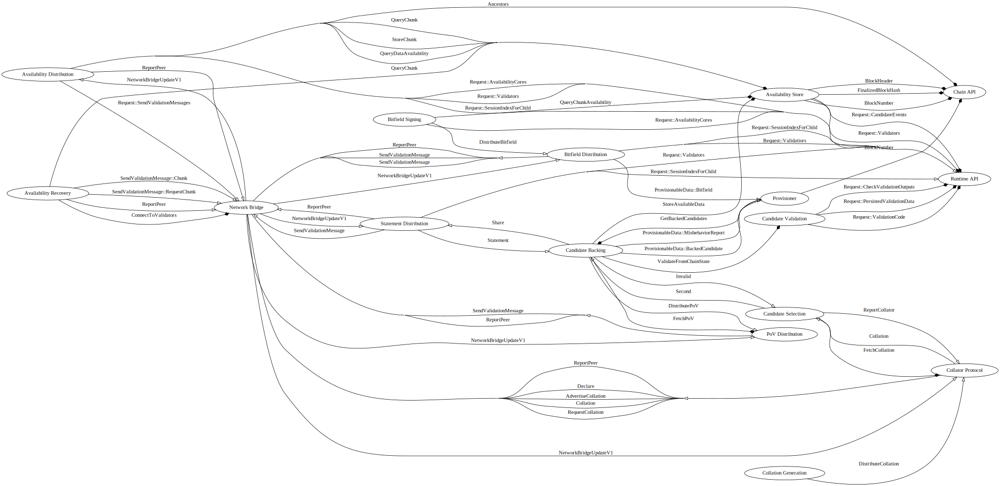
The Path to Inclusion (Node Side)
Let's contextualize that diagram a bit by following a parachain block from its creation through finalization. Parachains can use completely arbitrary processes to generate blocks. The relay chain doesn't know or care about the details; each parachain just needs to provide a collator.
Note: Inter-subsystem communications are relayed via the overseer, but that step is omitted here for brevity.
Note: Dashed lines indicate a request/response cycle, where the response is communicated asynchronously via a oneshot channel. Adjacent dashed lines may be processed in parallel.
sequenceDiagram
participant Overseer
participant CollationGeneration
participant RuntimeApi
participant CollatorProtocol
Overseer ->> CollationGeneration: ActiveLeavesUpdate
loop for each activated head
CollationGeneration -->> RuntimeApi: Request availability cores
CollationGeneration -->> RuntimeApi: Request validators
Note over CollationGeneration: Determine an appropriate ScheduledCore <br/>and OccupiedCoreAssumption
CollationGeneration -->> RuntimeApi: Request full validation data
Note over CollationGeneration: Build the collation
CollationGeneration ->> CollatorProtocol: DistributeCollation
end
The DistributeCollation messages that CollationGeneration sends to the CollatorProtocol contains
two items: a CandidateReceipt and PoV. The CollatorProtocol is then responsible for distributing
that collation to interested validators. However, not all potential collations are of interest. The
CandidateSelection subsystem is responsible for determining which collations are interesting, before
CollatorProtocol actually fetches the collation.
sequenceDiagram
participant CollationGeneration
participant CS as CollatorProtocol::CollatorSide
participant NB as NetworkBridge
participant VS as CollatorProtocol::ValidatorSide
participant CandidateSelection
CollationGeneration ->> CS: DistributeCollation
CS -->> NB: ConnectToValidators
Note over CS,NB: This connects to multiple validators.
CS ->> NB: Declare
NB ->> VS: Declare
Note over CS: Ensure that the connected validator is among<br/>the para's validator set. Otherwise, skip it.
CS ->> NB: AdvertiseCollation
NB ->> VS: AdvertiseCollation
VS ->> CandidateSelection: Collation
Note over CandidateSelection: Lots of other machinery in play here,<br/>but there are only three outcomes from the<br/>perspective of the `CollatorProtocol`:
alt happy path
CandidateSelection -->> VS: FetchCollation
Activate VS
VS ->> NB: RequestCollation
NB ->> CS: RequestCollation
CS ->> NB: Collation
NB ->> VS: Collation
Deactivate VS
else collation invalid or unexpected
CandidateSelection ->> VS: ReportCollator
VS ->> NB: ReportPeer
else CandidateSelection already selected a different candidate
Note over CandidateSelection: silently drop
end
Assuming we hit the happy path, flow continues with CandidateSelection receiving a (candidate_receipt, pov) as
the return value from its
FetchCollation request. The only time CandidateSelection actively requests a collation is when
it hasn't yet seconded one for some relay_parent, and is ready to second.
sequenceDiagram
participant CS as CandidateSelection
participant CB as CandidateBacking
participant CV as CandidateValidation
participant PV as Provisioner
participant SD as StatementDistribution
participant PD as PoVDistribution
CS ->> CB: Second
% fn validate_and_make_available
CB -->> CV: ValidateFromChainState
Note over CB,CV: There's some complication in the source, as<br/>candidates are actually validated in a separate task.
alt valid
Note over CB: This is where we transform the CandidateReceipt into a CommittedCandidateReceipt
% CandidateBackingJob::sign_import_and_distribute_statement
% CandidateBackingJob::import_statement
CB ->> PV: ProvisionableData::BackedCandidate
% CandidateBackingJob::issue_new_misbehaviors
opt if there is misbehavior to report
CB ->> PV: ProvisionableData::MisbehaviorReport
end
% CandidateBackingJob::distribute_signed_statement
CB ->> SD: Share
% CandidateBackingJob::distribute_pov
CB ->> PD: DistributePoV
else invalid
CB ->> CS: Invalid
end
At this point, you'll see that control flows in two directions: to StatementDistribution to distribute
the SignedStatement, and to PoVDistribution to distribute the PoV. However, that's largely a mirage:
while the initial implementation distributes PoVs by gossip, that's inefficient, and will be replaced
with a system which fetches PoVs only when actually necessary.
TODO: figure out more precisely the current status and plans; write them up
Therefore, we'll follow the SignedStatement. The StatementDistribution subsystem is largely concerned
with implementing a gossip protocol:
sequenceDiagram
participant SD as StatementDistribution
participant NB as NetworkBridge
alt On receipt of a<br/>SignedStatement from CandidateBacking
% fn circulate_statement_and_dependents
SD ->> NB: SendValidationMessage
Note right of NB: Bridge sends validation message to all appropriate peers
else On receipt of peer validation message
NB ->> SD: NetworkBridgeUpdateV1
% fn handle_incoming_message
alt if we aren't already aware of the relay parent for this statement
SD ->> NB: ReportPeer
end
% fn circulate_statement
opt if we know of peers who haven't seen this message, gossip it
SD ->> NB: SendValidationMessage
end
end
But who are these Listeners who've asked to be notified about incoming SignedStatements?
Nobody, as yet.
Let's pick back up with the PoV Distribution subsystem.
sequenceDiagram
participant CB as CandidateBacking
participant PD as PoVDistribution
participant Listener
participant NB as NetworkBridge
CB ->> PD: DistributePoV
Note over PD,Listener: Various subsystems can register listeners for when PoVs arrive
loop for each Listener
PD ->> Listener: Arc<PoV>
end
Note over PD: Gossip to connected peers
PD ->> NB: SendPoV
Note over PD,NB: On receipt of a network PoV, PovDistribution forwards it to each Listener.<br/>It also penalizes bad gossipers.
Unlike in the case of StatementDistribution, there is another subsystem which in various circumstances
already registers a listener to be notified when a new PoV arrives: CandidateBacking. Note that this
is the second time that CandidateBacking has gotten involved. The first instance was from the perspective
of the validator choosing to second a candidate via its CandidateSelection subsystem. This time, it's
from the perspective of some other validator, being informed that this foreign PoV has been received.
sequenceDiagram
participant SD as StatementDistribution
participant CB as CandidateBacking
participant PD as PoVDistribution
participant AS as AvailabilityStore
SD ->> CB: Statement
% CB::maybe_validate_and_import => CB::kick_off_validation_work
CB -->> PD: FetchPoV
Note over CB,PD: This call creates the Listener from the previous diagram
CB ->> AS: StoreAvailableData
At this point, things have gone a bit nonlinear. Let's pick up the thread again with BitfieldSigning. As
the Overseer activates each relay parent, it starts a BitfieldSigningJob which operates on an extremely
simple metric: after creation, it immediately goes to sleep for 1.5 seconds. On waking, it records the state
of the world pertaining to availability at that moment.
sequenceDiagram
participant OS as Overseer
participant BS as BitfieldSigning
participant RA as RuntimeApi
participant AS as AvailabilityStore
participant BD as BitfieldDistribution
OS ->> BS: ActiveLeavesUpdate
loop for each activated relay parent
Note over BS: Wait 1.5 seconds
BS -->> RA: Request::AvailabilityCores
loop for each availability core
BS -->> AS: QueryChunkAvailability
end
BS ->> BD: DistributeBitfield
end
BitfieldDistribution is, like the other *Distribution subsystems, primarily interested in implementing
a peer-to-peer gossip network propagating its particular messages. However, it also serves as an essential
relay passing the message along.
sequenceDiagram
participant BS as BitfieldSigning
participant BD as BitfieldDistribution
participant NB as NetworkBridge
participant PV as Provisioner
BS ->> BD: DistributeBitfield
BD ->> PV: ProvisionableData::Bitfield
BD ->> NB: SendValidationMessage::BitfieldDistribution::Bitfield
We've now seen the message flow to the Provisioner: both CandidateBacking and BitfieldDistribution
contribute provisionable data. Now, let's look at that subsystem.
Much like the BitfieldSigning subsystem, the Provisioner creates a new job for each newly-activated
leaf, and starts a timer. Unlike BitfieldSigning, we won't depict that part of the process, because
the Provisioner also has other things going on.
sequenceDiagram
participant A as Arbitrary
participant PV as Provisioner
participant CB as CandidateBacking
participant BD as BitfieldDistribution
participant RA as RuntimeApi
participant PI as ParachainsInherentDataProvider
alt receive provisionable data
alt
CB ->> PV: ProvisionableData
else
BD ->> PV: ProvisionableData
end
loop over stored Senders
PV ->> A: ProvisionableData
end
Note over PV: store bitfields and backed candidates
else receive request for inherent data
PI ->> PV: RequestInherentData
alt we have already constructed the inherent data
PV ->> PI: send the inherent data
else we have not yet constructed the inherent data
Note over PV,PI: Store the return sender without sending immediately
end
else timer times out
note over PV: Waited 2 seconds
PV -->> RA: RuntimeApiRequest::AvailabilityCores
Note over PV: construct and store the inherent data
loop over stored inherent data requests
PV ->> PI: (SignedAvailabilityBitfields, BackedCandidates)
end
end
In principle, any arbitrary subsystem could send a RequestInherentData to the Provisioner. In practice,
only the ParachainsInherentDataProvider does so.
The tuple (SignedAvailabilityBitfields, BackedCandidates, ParentHeader) is injected by the ParachainsInherentDataProvider
into the inherent data. From that point on, control passes from the node to the runtime.
Overseer
The overseer is responsible for these tasks:
- Setting up, monitoring, and handing failure for overseen subsystems.
- Providing a "heartbeat" of which relay-parents subsystems should be working on.
- Acting as a message bus between subsystems.
The hierarchy of subsystems:
+--------------+ +------------------+ +--------------------+
| | | |----> Subsystem A |
| Block Import | | | +--------------------+
| Events |------> | +--------------------+
+--------------+ | |----> Subsystem B |
| Overseer | +--------------------+
+--------------+ | | +--------------------+
| | | |----> Subsystem C |
| Finalization |------> | +--------------------+
| Events | | | +--------------------+
| | | |----> Subsystem D |
+--------------+ +------------------+ +--------------------+
The overseer determines work to do based on block import events and block finalization events. It does this by keeping track of the set of relay-parents for which work is currently being done. This is known as the "active leaves" set. It determines an initial set of active leaves on startup based on the data on-disk, and uses events about blockchain import to update the active leaves. Updates lead to OverseerSignal::ActiveLeavesUpdate being sent according to new relay-parents, as well as relay-parents to stop considering. Block import events inform the overseer of leaves that no longer need to be built on, now that they have children, and inform us to begin building on those children. Block finalization events inform us when we can stop focusing on blocks that appear to have been orphaned.
The overseer is also responsible for tracking the freshness of active leaves. Leaves are fresh when they're encountered for the first time, and stale when they're encountered for subsequent times. This can occur after chain reversions or when the fork-choice rule abandons some chain. This distinction is used to manage Reversion Safety. Consensus messages are often localized to a specific relay-parent, and it is often a misbehavior to equivocate or sign two conflicting messages. When reverting the chain, we may begin work on a leaf that subsystems have already signed messages for. Subsystems which need to account for reversion safety should avoid performing work on stale leaves.
The overseer's logic can be described with these functions:
On Startup
- Start all subsystems
- Determine all blocks of the blockchain that should be built on. This should typically be the head of the best fork of the chain we are aware of. Sometimes add recent forks as well.
- Send an
OverseerSignal::ActiveLeavesUpdateto all subsystems withactivatedcontaining each of these blocks. - Begin listening for block import and finality events
On Block Import Event
- Apply the block import event to the active leaves. A new block should lead to its addition to the active leaves set and its parent being deactivated.
- Mark any stale leaves as stale. The overseer should track all leaves it activates to determine whether leaves are fresh or stale.
- Send an
OverseerSignal::ActiveLeavesUpdatemessage to all subsystems containing all activated and deactivated leaves. - Ensure all
ActiveLeavesUpdatemessages are flushed before resuming activity as a message router.
TODO: in the future, we may want to avoid building on too many sibling blocks at once. the notion of a "preferred head" among many competing sibling blocks would imply changes in our "active leaves" update rules here
On Finalization Event
- Note the height
hof the newly finalized blockB. - Prune all leaves from the active leaves which have height
<= hand are notB. - Issue
OverseerSignal::ActiveLeavesUpdatecontaining all deactivated leaves.
On Subsystem Failure
Subsystems are essential tasks meant to run as long as the node does. Subsystems can spawn ephemeral work in the form of jobs, but the subsystems themselves should not go down. If a subsystem goes down, it will be because of a critical error that should take the entire node down as well.
Communication Between Subsystems
When a subsystem wants to communicate with another subsystem, or, more typically, a job within a subsystem wants to communicate with its counterpart under another subsystem, that communication must happen via the overseer. Consider this example where a job on subsystem A wants to send a message to its counterpart under subsystem B. This is a realistic scenario, where you can imagine that both jobs correspond to work under the same relay-parent.
+--------+ +--------+
| | | |
|Job A-1 | (sends message) (receives message) |Job B-1 |
| | | |
+----|---+ +----^---+
| +------------------------------+ ^
v | | |
+---------v---------+ | | +---------|---------+
| | | | | |
| Subsystem A | | Overseer / Message | | Subsystem B |
| -------->> Bus -------->> |
| | | | | |
+-------------------+ | | +-------------------+
| |
+------------------------------+
First, the subsystem that spawned a job is responsible for handling the first step of the communication. The overseer is not aware of the hierarchy of tasks within any given subsystem and is only responsible for subsystem-to-subsystem communication. So the sending subsystem must pass on the message via the overseer to the receiving subsystem, in such a way that the receiving subsystem can further address the communication to one of its internal tasks, if necessary.
This communication prevents a certain class of race conditions. When the Overseer determines that it is time for subsystems to begin working on top of a particular relay-parent, it will dispatch a ActiveLeavesUpdate message to all subsystems to do so, and those messages will be handled asynchronously by those subsystems. Some subsystems will receive those messsages before others, and it is important that a message sent by subsystem A after receiving ActiveLeavesUpdate message will arrive at subsystem B after its ActiveLeavesUpdate message. If subsystem A maintaned an independent channel with subsystem B to communicate, it would be possible for subsystem B to handle the side message before the ActiveLeavesUpdate message, but it wouldn't have any logical course of action to take with the side message - leading to it being discarded or improperly handled. Well-architectured state machines should have a single source of inputs, so that is what we do here.
One exception is reasonable to make for responses to requests. A request should be made via the overseer in order to ensure that it arrives after any relevant ActiveLeavesUpdate message. A subsystem issuing a request as a result of a ActiveLeavesUpdate message can safely receive the response via a side-channel for two reasons:
- It's impossible for a request to be answered before it arrives, it is provable that any response to a request obeys the same ordering constraint.
- The request was sent as a result of handling a
ActiveLeavesUpdatemessage. Then there is no possible future in which theActiveLeavesUpdatemessage has not been handled upon the receipt of the response.
So as a single exception to the rule that all communication must happen via the overseer we allow the receipt of responses to requests via a side-channel, which may be established for that purpose. This simplifies any cases where the outside world desires to make a request to a subsystem, as the outside world can then establish a side-channel to receive the response on.
It's important to note that the overseer is not aware of the internals of subsystems, and this extends to the jobs that they spawn. The overseer isn't aware of the existence or definition of those jobs, and is only aware of the outer subsystems with which it interacts. This gives subsystem implementations leeway to define internal jobs as they see fit, and to wrap a more complex hierarchy of state machines than having a single layer of jobs for relay-parent-based work. Likewise, subsystems aren't required to spawn jobs. Certain types of subsystems, such as those for shared storage or networking resources, won't perform block-based work but would still benefit from being on the Overseer's message bus. These subsystems can just ignore the overseer's signals for block-based work.
Furthermore, the protocols by which subsystems communicate with each other should be well-defined irrespective of the implementation of the subsystem. In other words, their interface should be distinct from their implementation. This will prevent subsystems from accessing aspects of each other that are beyond the scope of the communication boundary.
On shutdown
Send an OverseerSignal::Conclude message to each subsystem and wait some time for them to conclude before hard-exiting.
GRANDPA Voting Rule
Specifics on the motivation and types of constraints we apply to the GRANDPA voting logic as well as the definitions of viable and finalizable blocks can be found in the Chain Selection Protocol section. The subsystem which provides us with viable leaves is the Chain Selection Subsystem.
GRANDPA's regular voting rule is for each validator to select the longest chain they are aware of. GRANDPA proceeds in rounds, collecting information from all online validators and determines the blocks that a supermajority of validators all have in common with each other.
The low-level GRANDPA logic will provide us with a required block. We can find the best leaf containing that block in its chain with the ChainSelectionMessage::BestLeafContaining. If the result is None, then we will simply cast a vote on the required block.
The viable leaves provided from the chain selection subsystem are not necessarily finalizable, so we need to perform further work to discover the finalizable ancestor of the block. The first constraint is to avoid voting on any unapproved block. The highest approved ancestor of a given block can be determined by querying the Approval Voting subsystem via the ApprovalVotingMessage::ApprovedAncestor message. If the response is Some, we continue and apply the second constraint. The second constraint is to avoid voting on any block containing a candidate undergoing an active dispute. The list of block hashes and candidates returned from ApprovedAncestor should be reversed, and passed to the DisputeCoordinatorMessage::DetermineUndisputedChain to determine the finalizable block which will be our eventual vote.
Collators
Collators are special nodes which bridge a parachain to the relay chain. They are simultaneously full nodes of the parachain, and at least light clients of the relay chain. Their overall contribution to the system is the generation of Proofs of Validity for parachain candidates.
Collation Generation
The collation generation subsystem is executed on collator nodes and produces candidates to be distributed to validators. If configured to produce collations for a para, it produces collations and then feeds them to the Collator Protocol subsystem, which handles the networking.
Protocol
Input: CollationGenerationMessage
#![allow(unused)] fn main() { enum CollationGenerationMessage { Initialize(CollationGenerationConfig), } }
No more than one initialization message should ever be sent to the collation generation subsystem.
Output: CollationDistributionMessage
Functionality
The process of generating a collation for a parachain is very parachain-specific. As such, the details of how to do so are left beyond the scope of this description. The subsystem should be implemented as an abstract wrapper, which is aware of this configuration:
#![allow(unused)] fn main() { pub struct Collation { /// Messages destined to be interpreted by the Relay chain itself. pub upward_messages: Vec<UpwardMessage>, /// New validation code. pub new_validation_code: Option<ValidationCode>, /// The head-data produced as a result of execution. pub head_data: HeadData, /// Proof to verify the state transition of the parachain. pub proof_of_validity: PoV, } /// Result of the [`CollatorFn`] invocation. pub struct CollationResult { /// The collation that was build. collation: Collation, /// An optional result sender that should be informed about a successfully seconded collation. /// /// There is no guarantee that this sender is informed ever about any result, it is completly okay to just drop it. /// However, if it is called, it should be called with the signed statement of a parachain validator seconding the /// collation. result_sender: Option<oneshot::Sender<SignedFullStatement>>, } /// Collation function. /// /// Will be called with the hash of the relay chain block the parachain block should be build on and the /// [`ValidationData`] that provides information about the state of the parachain on the relay chain. /// /// Returns an optional [`CollationResult`]. pub type CollatorFn = Box< dyn Fn(Hash, &PersistedValidationData) -> Pin<Box<dyn Future<Output = Option<CollationResult>> + Send>> + Send + Sync, >; struct CollationGenerationConfig { key: CollatorPair, /// Collate will be called with the relay chain hash the parachain should build /// a block on and the `ValidationData` that provides information about the state /// of the parachain on the relay chain. collator: CollatorFn, para_id: ParaId, } }
The configuration should be optional, to allow for the case where the node is not run with the capability to collate.
On ActiveLeavesUpdate:
- If there is no collation generation config, ignore.
- Otherwise, for each
activatedhead in the update:-
Determine if the para is scheduled on any core by fetching the
availability_coresRuntime API.TODO: figure out what to do in the case of occupied cores; see this issue.
-
Determine an occupied core assumption to make about the para. Scheduled cores can make
OccupiedCoreAssumption::Free. -
Use the Runtime API subsystem to fetch the full validation data.
-
Invoke the
collator, and use its outputs to produce aCandidateReceipt, signed with the configuration'skey. -
Dispatch a
CollatorProtocolMessage::DistributeCollation(receipt, pov).
-
Collator Protocol
The Collator Protocol implements the network protocol by which collators and validators communicate. It is used by collators to distribute collations to validators and used by validators to accept collations by collators.
Collator-to-Validator networking is more difficult than Validator-to-Validator networking because the set of possible collators for any given para is unbounded, unlike the validator set. Validator-to-Validator networking protocols can easily be implemented as gossip because the data can be bounded, and validators can authenticate each other by their PeerIds for the purposes of instantiating and accepting connections.
Since, at least at the level of the para abstraction, the collator-set for any given para is unbounded, validators need to make sure that they are receiving connections from capable and honest collators and that their bandwidth and time are not being wasted by attackers. Communicating across this trust-boundary is the most difficult part of this subsystem.
Validation of candidates is a heavy task, and furthermore, the PoV itself is a large piece of data. Empirically, PoVs are on the order of 10MB.
TODO: note the incremental validation function Ximin proposes at https://github.com/paritytech/polkadot/issues/1348
As this network protocol serves as a bridge between collators and validators, it communicates primarily with one subsystem on behalf of each. As a collator, this will receive messages from the CollationGeneration subsystem. As a validator, this will communicate only with the CandidateBacking.
Protocol
Input: CollatorProtocolMessage
Output:
Functionality
This network protocol uses the Collation peer-set of the NetworkBridge.
It uses the CollatorProtocolV1Message as its WireMessage
Since this protocol functions both for validators and collators, it is easiest to go through the protocol actions for each of them separately.
Validators and collators.
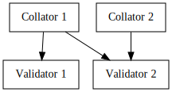
Collators
It is assumed that collators are only collating on a single parachain. Collations are generated by the Collation Generation subsystem. We will keep up to one local collation per relay-parent, based on DistributeCollation messages. If the para is not scheduled or next up on any core, at the relay-parent, or the relay-parent isn't in the active-leaves set, we ignore the message as it must be invalid in that case - although this indicates a logic error elsewhere in the node.
We keep track of the Para ID we are collating on as a collator. This starts as None, and is updated with each CollateOn message received. If the ParaId of a collation requested to be distributed does not match the one we expect, we ignore the message.
As with most other subsystems, we track the active leaves set by following ActiveLeavesUpdate signals.
For the purposes of actually distributing a collation, we need to be connected to the validators who are interested in collations on that ParaId at this point in time. We assume that there is a discovery API for connecting to a set of validators.
As seen in the Scheduler Module of the runtime, validator groups are fixed for an entire session and their rotations across cores are predictable. Collators will want to do these things when attempting to distribute collations at a given relay-parent:
- Determine which core the para collated-on is assigned to.
- Determine the group on that core and the next group on that core.
- Issue a discovery request for the validators of the current group and the next group with
NetworkBridgeMessage::ConnectToValidators.
Once connected to the relevant peers for the current group assigned to the core (transitively, the para), advertise the collation to any of them which advertise the relay-parent in their view (as provided by the Network Bridge). If any respond with a request for the full collation, provide it. Upon receiving a view update from any of these peers which includes a relay-parent for which we have a collation that they will find relevant, advertise the collation to them if we haven't already.
Validators
On the validator side of the protocol, validators need to accept incoming connections from collators. They should keep some peer slots open for accepting new speculative connections from collators and should disconnect from collators who are not relevant.
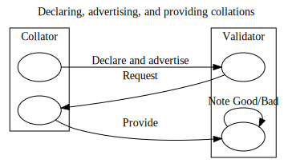
When peers connect to us, they can Declare that they represent a collator with given public key and intend to collate on a specific para ID. Once they've declared that, and we checked their signature, they can begin to send advertisements of collations. The peers should not send us any advertisements for collations that are on a relay-parent outside of our view or for a para outside of the one they've declared.
The protocol tracks advertisements received and the source of the advertisement. The advertisement source is the PeerId of the peer who sent the message. We accept one advertisement per collator per source per relay-parent.
As a validator, we will handle requests from other subsystems to fetch a collation on a specific ParaId and relay-parent. These requests are made with the request response protocol CollationFetchingRequest request. To do so, we need to first check if we have already gathered a collation on that ParaId and relay-parent. If not, we need to select one of the advertisements and issue a request for it. If we've already issued a request, we shouldn't issue another one until the first has returned.
When acting on an advertisement, we issue a Requests::CollationFetching. If the request times out, we need to note the collator as being unreliable and reduce its priority relative to other collators.
As a validator, once the collation has been fetched some other subsystem will inspect and do deeper validation of the collation. The subsystem will report to this subsystem with a CollatorProtocolMessage::ReportCollator. In that case, if we are connected directly to the collator, we apply a cost to the PeerId associated with the collator and potentially disconnect or blacklist it. If the collation is seconded, we notify the collator and apply a benefit to the PeerId associated with the collator.
Interaction with Candidate Backing
As collators advertise the availability, a validator will simply second the first valid parablock candidate per relay head by sending a CandidateBackingMessage::Second. Note that this message contains the relay parent of the advertised collation, the candidate receipt and the PoV.
Subsequently, once a valid parablock candidate has been seconded, the CandidateBacking subsystem will send a CollatorProtocolMessage::Seconded, which will trigger this subsystem to notify the collator at the PeerId that first advertised the parablock on the seconded relay head of their successful seconding.
Future Work
Several approaches have been discussed, but all have some issues:
- The current approach is very straightforward. However, that protocol is vulnerable to a single collator which, as an attack or simply through chance, gets its block candidate to the node more often than its fair share of the time.
- If collators produce blocks via Aura, BABE or in future Sassafrass, it may be possible to choose an "Official" collator for the round, but it may be tricky to ensure that the PVF logic is enforced at collator leader election.
- We could use relay-chain BABE randomness to generate some delay
Don the order of 1 second, +- 1 second. The collator would then second the first valid parablock which arrives afterD, or in case none has arrived by2*D, the last valid parablock which has arrived. This makes it very hard for a collator to game the system to always get its block nominated, but it reduces the maximum throughput of the system by introducing delay into an already tight schedule. - A variation of that scheme would be to have a fixed acceptance window
Dfor parablock candidates and keep track of countC: the number of parablock candidates received. At the end of the periodD, we choose a random number I in the range [0, C) and second the block at Index I. Its drawback is the same: it must wait the fullDperiod before seconding any of its received candidates, reducing throughput. - In order to protect against DoS attacks, it may be prudent to run throw out collations from collators that have behaved poorly (whether recently or historically) and subsequently only verify the PoV for the most suitable of collations.
Backing Subsystems
The backing subsystems, when conceived as a black box, receive an arbitrary quantity of parablock candidates and associated proofs of validity from arbitrary untrusted collators. From these, they produce a bounded quantity of backable candidates which relay chain block authors may choose to include in a subsequent block.
In broad strokes, the flow operates like this:
- Candidate Selection winnows the field of parablock candidates, selecting up to one of them to second.
- Candidate Backing ensures that a seconding candidate is valid, then generates the appropriate
Statement. It also keeps track of which candidates have received the backing of a quorum of other validators. - Statement Distribution is the networking component which ensures that all validators receive each others' statements.
- PoV Distribution is the networking component which ensures that validators considering a candidate can get the appropriate PoV.
Candidate Backing
The Candidate Backing subsystem ensures every parablock considered for relay block inclusion has been seconded by at least one validator, and approved by a quorum. Parablocks for which no validator will assert correctness are discarded. If the block later proves invalid, the initial backers are slashable; this gives polkadot a rational threat model during subsequent stages.
Its role is to produce backable candidates for inclusion in new relay-chain blocks. It does so by issuing signed Statements and tracking received statements signed by other validators. Once enough statements are received, they can be combined into backing for specific candidates.
Note that though the candidate backing subsystem attempts to produce as many backable candidates as possible, it does not attempt to choose a single authoritative one. The choice of which actually gets included is ultimately up to the block author, by whatever metrics it may use; those are opaque to this subsystem.
Once a sufficient quorum has agreed that a candidate is valid, this subsystem notifies the Provisioner, which in turn engages block production mechanisms to include the parablock.
Protocol
Input: CandidateBackingMessage
Output:
CandidateValidationMessageRuntimeApiMessageCollatorProtocolMessageProvisionerMessageAvailabilityDistributionMessageStatementDistributionMessage
Functionality
The Collator Protocol subsystem is the primary source of non-overseer messages into this subsystem. That subsystem generates appropriate CandidateBackingMessages and passes them to this subsystem.
This subsystem requests validation from the Candidate Validation and generates an appropriate Statement. All Statements are then passed on to the Statement Distribution subsystem to be gossiped to peers. When Candidate Validation decides that a candidate is invalid, and it was recommended to us to second by our own Collator Protocol subsystem, a message is sent to the Collator Protocol subsystem with the candidate's hash so that the collator which recommended it can be penalized.
The subsystem should maintain a set of handles to Candidate Backing Jobs that are currently live, as well as the relay-parent to which they correspond.
On Overseer Signal
- If the signal is an
OverseerSignal::ActiveLeavesUpdate:- spawn a Candidate Backing Job for each
activatedhead referring to a fresh leaf, storing a bidirectional channel with the Candidate Backing Job in the set of handles. - cease the Candidate Backing Job for each
deactivatedhead, if any.
- spawn a Candidate Backing Job for each
- If the signal is an
OverseerSignal::Conclude: Forward conclude messages to all jobs, wait a small amount of time for them to join, and then exit.
On Receiving CandidateBackingMessage
- If the message is a
CandidateBackingMessage::GetBackedCandidates, get all backable candidates from the statement table and send them back. - If the message is a
CandidateBackingMessage::Second, sign and dispatch aSecondedstatement only if we have not seconded any other candidate and have not signed aValidstatement for the requested candidate. Signing both aSecondedandValidmessage is a double-voting misbehavior with a heavy penalty, and this could occur if another validator has seconded the same candidate and we've received their message before the internal seconding request. - If the message is a
CandidateBackingMessage::Statement, count the statement to the quorum. If the statement in the message isSecondedand it contains a candidate that belongs to our assignment, request the correspondingPoVfrom the backing node viaAvailabilityDistributionand launch validation. Issue our ownValidorInvalidstatement as a result.
If the seconding node did not provide us with the PoV we will retry fetching from other backing validators.
big TODO: "contextual execution"
- At the moment we only allow inclusion of new parachain candidates validated by current validators.
- Allow inclusion of old parachain candidates validated by current validators.
- Allow inclusion of old parachain candidates validated by old validators.
This will probably blur the lines between jobs, will probably require inter-job communication and a short-term memory of recently backable, but not backed candidates.
Candidate Backing Job
The Candidate Backing Job represents the work a node does for backing candidates with respect to a particular relay-parent.
The goal of a Candidate Backing Job is to produce as many backable candidates as possible. This is done via signed Statements by validators. If a candidate receives a majority of supporting Statements from the Parachain Validators currently assigned, then that candidate is considered backable.
On Startup
- Fetch current validator set, validator -> parachain assignments from
Runtime APIsubsystem usingRuntimeApiRequest::ValidatorsandRuntimeApiRequest::ValidatorGroups - Determine if the node controls a key in the current validator set. Call this the local key if so.
- If the local key exists, extract the parachain head and validation function from the
Runtime APIfor the parachain the local key is assigned to by issuing aRuntimeApiRequest::Validators - Issue a
RuntimeApiRequest::SigningContextmessage to get a context that will later be used upon signing.
On Receiving New Candidate Backing Message
#![allow(unused)] fn main() { match msg { GetBackedCandidates(hashes, tx) => { // Send back a set of backable candidates. } CandidateBackingMessage::Second(hash, candidate) => { if candidate is unknown and in local assignment { if spawn_validation_work(candidate, parachain head, validation function).await == Valid { send(DistributePoV(pov)) } } } CandidateBackingMessage::Statement(hash, statement) => { // count to the votes on this candidate if let Statement::Seconded(candidate) = statement { if candidate.parachain_id == our_assignment { spawn_validation_work(candidate, parachain head, validation function) } } } } }
Add Seconded statements and Valid statements to a quorum. If quorum reaches validator-group majority, send a ProvisionerMessage::ProvisionableData(ProvisionableData::BackedCandidate(CandidateReceipt)) message.
Invalid statements that conflict with already witnessed Seconded and Valid statements for the given candidate, statements that are double-votes, self-contradictions and so on, should result in issuing a ProvisionerMessage::MisbehaviorReport message for each newly detected case of this kind.
On each incoming statement, DisputeCoordinatorMessage::ImportStatement should be issued.
Validating Candidates.
#![allow(unused)] fn main() { fn spawn_validation_work(candidate, parachain head, validation function) { asynchronously { let pov = (fetch pov block).await let valid = (validate pov block).await; if valid { // make PoV available for later distribution. Send data to the availability store to keep. // sign and dispatch `valid` statement to network if we have not seconded the given candidate. } else { // sign and dispatch `invalid` statement to network. } } } }
Fetch Pov Block
Create a (sender, receiver) pair.
Dispatch a AvailabilityDistributionMessage::FetchPoV{ validator_index, pov_hash, candidate_hash, tx, } and listen on the passed receiver for a response. Availability distribution will send the request to the validator specified by validator_index`, which might not be serving it for whatever reasons, therefore we need to retry with other backing validators in that case.
Validate PoV Block
Create a (sender, receiver) pair.
Dispatch a CandidateValidationMessage::Validate(validation function, candidate, pov, sender) and listen on the receiver for a response.
Distribute Signed Statement
Dispatch a StatementDistributionMessage::Share(relay_parent, SignedFullStatement).
Statement Distribution
The Statement Distribution Subsystem is responsible for distributing statements about seconded candidates between validators.
Protocol
PeerSet: Validation
Input:
- NetworkBridgeUpdate(update)
- StatementDistributionMessage
Output:
- NetworkBridge::SendMessage(
[PeerId], message) - NetworkBridge::SendRequests (StatementFetching)
- NetworkBridge::ReportPeer(PeerId, cost_or_benefit)
Functionality
Implemented as a gossip protocol. Handle updates to our view and peers' views. Neighbor packets are used to inform peers which chain heads we are interested in data for.
It is responsible for distributing signed statements that we have generated and forwarding them, and for detecting a variety of Validator misbehaviors for reporting to Misbehavior Arbitration. During the Backing stage of the inclusion pipeline, it's the main point of contact with peer nodes. On receiving a signed statement from a peer in the same backing group, assuming the peer receipt state machine is in an appropriate state, it sends the Candidate Receipt to the Candidate Backing subsystem to handle the validator's statement. On receiving StatementDistributionMessage::Share we make sure to send messages to our backing group in addition to random other peers, to ensure a fast backing process and getting all statements quickly for distribtution.
Track equivocating validators and stop accepting information from them. Establish a data-dependency order:
- In order to receive a
Secondedmessage we have the corresponding chain head in our view - In order to receive an
Validmessage we must have received the correspondingSecondedmessage.
And respect this data-dependency order from our peers by respecting their views. This subsystem is responsible for checking message signatures.
The Statement Distribution subsystem sends statements to peer nodes.
Peer Receipt State Machine
There is a very simple state machine which governs which messages we are willing to receive from peers. Not depicted in the state machine: on initial receipt of any SignedFullStatement, validate that the provided signature does in fact sign the included data. Note that each individual parablock candidate gets its own instance of this state machine; it is perfectly legal to receive a Valid(X) before a Seconded(Y), as long as a Seconded(X) has been received.
A: Initial State. Receive SignedFullStatement(Statement::Second): extract Statement, forward to Candidate Backing, proceed to B. Receive any other SignedFullStatement variant: drop it.
B: Receive any SignedFullStatement: check signature and determine whether the statement is new to us. if new, forward to Candidate Backing and circulate to other peers. Receive OverseerMessage::StopWork: proceed to C.
C: Receive any message for this block: drop it.
For large statements (see below), we also keep track of the total received large statements per peer and have a hard limit on that number for flood protection. This is necessary as in the current code we only forward statements once we have all the data, therefore flood protection for large statement is a bit more subtle. This will become an obsolete problem once off chain code upgrades are implemented.
Peer Knowledge Tracking
The peer receipt state machine implies that for parsimony of network resources, we should model the knowledge of our peers, and help them out. For example, let's consider a case with peers A, B, and C, validators X and Y, and candidate M. A sends us a Statement::Second(M) signed by X. We've double-checked it, and it's valid. While we're checking it, we receive a copy of X's Statement::Second(M) from B, along with a Statement::Valid(M) signed by Y.
Our response to A is just the Statement::Valid(M) signed by Y. However, we haven't heard anything about this from C. Therefore, we send it everything we have: first a copy of X's Statement::Second, then Y's Statement::Valid.
This system implies a certain level of duplication of messages--we received X's Statement::Second from both our peers, and C may experience the same--but it minimizes the degree to which messages are simply dropped.
And respect this data-dependency order from our peers. This subsystem is responsible for checking message signatures.
No jobs. We follow view changes from the NetworkBridge, which in turn is updated by the overseer.
Equivocations and Flood Protection
An equivocation is a double-vote by a validator. The Candidate Backing Subsystem is better-suited than this one to detect equivocations as it adds votes to quorum trackers.
At this level, we are primarily concerned about flood-protection, and to some extent, detecting equivocations is a part of that. In particular, we are interested in detecting equivocations of Seconded statements. Since every other statement is dependent on Seconded statements, ensuring that we only ever hold a bounded number of Seconded statements is sufficient for flood-protection.
The simple approach is to say that we only receive up to two Seconded statements per validator per chain head. However, the marginal cost of equivocation, conditional on having already equivocated, is close to 0, since a single double-vote offence is counted as all double-vote offences for a particular chain-head. Even if it were not, there is some amount of equivocations that can be done such that the marginal cost of issuing further equivocations is close to 0, as there would be an amount of equivocations necessary to be completely and totally obliterated by the slashing algorithm. We fear the validator with nothing left to lose.
With that in mind, this simple approach has a caveat worth digging deeper into.
First: We may be aware of two equivocated Seconded statements issued by a validator. A totally honest peer of ours can also be aware of one or two different Seconded statements issued by the same validator. And yet another peer may be aware of one or two more Seconded statements. And so on. This interacts badly with pre-emptive sending logic. Upon sending a Seconded statement to a peer, we will want to pre-emptively follow up with all statements relative to that candidate. Waiting for acknowledgement introduces latency at every hop, so that is best avoided. What can happen is that upon receipt of the Seconded statement, the peer will discard it as it falls beyond the bound of 2 that it is allowed to store. It cannot store anything in memory about discarded candidates as that would introduce a DoS vector. Then, the peer would receive from us all of the statements pertaining to that candidate, which, from its perspective, would be undesired - they are data-dependent on the Seconded statement we sent them, but they have erased all record of that from their memory. Upon receiving a potential flood of undesired statements, this 100% honest peer may choose to disconnect from us. In this way, an adversary may be able to partition the network with careful distribution of equivocated Seconded statements.
The fix is to track, per-peer, the hashes of up to 4 candidates per validator (per relay-parent) that the peer is aware of. It is 4 because we may send them 2 and they may send us 2 different ones. We track the data that they are aware of as the union of things we have sent them and things they have sent us. If we receive a 1st or 2nd Seconded statement from a peer, we note it in the peer's known candidates even if we do disregard the data locally. And then, upon receipt of any data dependent on that statement, we do not reduce that peer's standing in our eyes, as the data was not undesired.
There is another caveat to the fix: we don't want to allow the peer to flood us because it has set things up in a way that it knows we will drop all of its traffic.
We also track how many statements we have received per peer, per candidate, and per chain-head. This is any statement concerning a particular candidate: Seconded, Valid, or Invalid. If we ever receive a statement from a peer which would push any of these counters beyond twice the amount of validators at the chain-head, we begin to lower the peer's standing and eventually disconnect. This bound is a massive overestimate and could be reduced to twice the number of validators in the corresponding validator group. It is worth noting that the goal at the time of writing is to ensure any finite bound on the amount of stored data, as any equivocation results in a large slash.
Large statements
Seconded statements can become quite large on parachain runtime upgrades for
example. For this reason, there exists a LargeStatement constructor for the
StatementDistributionMessage wire message, which only contains light metadata
of a statement. The actual candidate data is not included. This message type is
used whenever a message is deemed large. The receiver of such a message needs to
request the actual payload via request/response by means of a
StatementFetching request.
This is necessary as distribution of a large payload (mega bytes) via gossip would make the network collapse and timely distribution of statements would no longer be possible. By using request/response it is ensured that each peer only transferes large data once. We only take good care to detect an overloaded peer early and immediately move on to a different peer for fetching the data. This mechanism should result in a good load distribution and therefore a rather optimal distribution path.
With these optimizations, distribution of payloads in the size of up to 3 to 4 MB should work with Kusama validator specifications. For scaling up even more, runtime upgrades and message passing should be done off chain at some point.
Flood protection considerations: For making DoS attacks slightly harder on this subsystem, nodes will only respond to large statement requests, when they previously notified that peer via gossip about that statement. So, it is not possible to DoS nodes at scale, by requesting candidate data over and over again.
Availability Subsystems
The availability subsystems are responsible for ensuring that Proofs of Validity of backed candidates are widely available within the validator set, without requiring every node to retain a full copy. They accomplish this by broadly distributing erasure-coded chunks of the PoV, keeping track of which validator has which chunk by means of signed bitfields. They are also responsible for reassembling a complete PoV when required, e.g. when a fisherman reports a potentially invalid block.
Availability Distribution
This subsystem is responsible for distribution availability data to peers.
Availability data are chunks, PoVs and AvailableData (which is PoV +
PersistedValidationData). It does so via request response protocols.
In particular this subsystem is responsible for:
- Respond to network requests requesting availability data by querying the Availability Store.
- Request chunks from backing validators to put them in the local
Availability Storewhenever we find an occupied core on the chain, this is to ensure availability by at least 2/3+ of all validators, this happens after a candidate is backed. - Fetch
PoVfrom validators, when requested viaFetchPoVmessage from backing (pov_requester module).
The backing subsystem is responsible of making available data available in the
local Availability Store upon validation. This subsystem will serve any
network requests by querying that store.
Protocol
This subsystem does not handle any peer set messages, but the pov_requester
does connecto to validators of the same backing group on the validation peer
set, to ensure fast propagation of statements between those validators and for
ensuring already established connections for requesting PoVs. Other than that
this subsystem drives request/response protocols.
Input:
- OverseerSignal::ActiveLeaves(
[ActiveLeavesUpdate]) - AvailabilityDistributionMessage{msg: ChunkFetchingRequest}
- AvailabilityDistributionMessage{msg: PoVFetchingRequest}
- AvailabilityDistributionMessage{msg: FetchPoV}
Output:
- NetworkBridgeMessage::SendRequests(
[Requests], IfDisconnected::TryConnect) - AvailabilityStore::QueryChunk(candidate_hash, index, response_channel)
- AvailabilityStore::StoreChunk(candidate_hash, chunk)
- AvailabilityStore::QueryAvailableData(candidate_hash, response_channel)
- RuntimeApiRequest::SessionIndexForChild
- RuntimeApiRequest::SessionInfo
- RuntimeApiRequest::AvailabilityCores
Functionality
PoV Requester
The PoV requester in the pov_requester module takes care of staying connected
to validators of the current backing group of this very validator on the Validation
peer set and it will handle FetchPoV requests by issuing network requests to
those validators. It will check the hash of the received PoV, but will not do any
further validation. That needs to be done by the original FetchPoV sender
(backing subsystem).
Chunk Requester
After a candidate is backed, the availability of the PoV block must be confirmed by 2/3+ of all validators. The chunk requester is responsible of making that availability a reality.
It does that by querying checking occupied cores for all active leaves. For each
occupied core it will spawn a task fetching the erasure chunk which has the
ValidatorIndex of the node. For this an ChunkFetchingRequest is issued, via
substrate's generic request/response protocol.
The spawned task will start trying to fetch the chunk from validators in responsible group of the occupied core, in a random order. For ensuring that we use already open TCP connections wherever possible, the requester maintains a cache and preserves that random order for the entire session.
Note however that, because not all validators in a group have to be actual backers, not all of them are required to have the needed chunk. This in turn could lead to low throughput, as we have to wait for fetches to fail, before reaching a validator finally having our chunk. We do rank back validators not delivering our chunk, but as backers could vary from block to block on a perfectly legitimate basis, this is still not ideal. See issues 2509 and 2512 for more information.
The current implementation also only fetches chunks for occupied cores in blocks in active leaves. This means though, if active leaves skips a block or we are particularly slow in fetching our chunk, we might not fetch our chunk if availability reached 2/3 fast enough (slot becomes free). This is not desirable as we would like as many validators as possible to have their chunk. See this issue for more details.
Serving
On the other side the subsystem will listen for incoming ChunkFetchingRequests
and PoVFetchingRequests from the network bridge and will respond to queries,
by looking the requested chunks and PoVs up in the availability store, this
happens in the responder module.
We rely on the backing subsystem to make available data available locally in the
Availability Store after it has validated it.
Availability Recovery
This subsystem is the inverse of the Availability Distribution subsystem: validators will serve the availability chunks kept in the availability store to nodes who connect to them. And the subsystem will also implement the other side: the logic for nodes to connect to validators, request availability pieces, and reconstruct the AvailableData.
This version of the availability recovery subsystem is based off of direct connections to validators. In order to recover any given AvailableData, we must recover at least f + 1 pieces from validators of the session. Thus, we will connect to and query randomly chosen validators until we have received f + 1 pieces.
Protocol
PeerSet: Validation
Input:
- NetworkBridgeUpdateV1(update)
- AvailabilityRecoveryMessage::RecoverAvailableData(candidate, session, backing_group, response)
Output:
- NetworkBridge::SendValidationMessage
- NetworkBridge::ReportPeer
- AvailabilityStore::QueryChunk
Functionality
We hold a state which tracks the current recovery interactions we have live, as well as which request IDs correspond to which interactions. An interaction is a structure encapsulating all interaction with the network necessary to recover the available data.
#![allow(unused)] fn main() { struct State { /// Each interaction is implemented as its own remote async task, and these handles are remote /// for it. interactions: FuturesUnordered<InteractionHandle>, /// A multiplexer over receivers from live interactions. interaction_receivers: FuturesUnordered<ResponseReceiver<Concluded>>, /// A recent block hash for which state should be available. live_block_hash: Hash, // An LRU cache of recently recovered data. availability_lru: LruCache<CandidateHash, Result<AvailableData, RecoveryError>>, } /// This is a future, which concludes either when a response is received from the interaction, /// or all the `awaiting` channels have closed. struct InteractionHandle { candidate_hash: CandidateHash, interaction_response: RemoteHandle<Concluded>, awaiting: Vec<ResponseChannel<Result<AvailableData, RecoveryError>>>, } struct Unavailable; struct Concluded(CandidateHash, Result<AvailableData, RecoveryError>); struct InteractionParams { validator_authority_keys: Vec<AuthorityId>, validators: Vec<ValidatorId>, // The number of pieces needed. threshold: usize, candidate_hash: Hash, erasure_root: Hash, } enum InteractionPhase { RequestFromBackers { // a random shuffling of the validators from the backing group which indicates the order // in which we connect to them and request the chunk. shuffled_backers: Vec<ValidatorIndex>, } RequestChunks { // a random shuffling of the validators which indicates the order in which we connect to the validators and // request the chunk from them. shuffling: Vec<ValidatorIndex>, received_chunks: Map<ValidatorIndex, ErasureChunk>, requesting_chunks: FuturesUnordered<Receiver<ErasureChunkRequestResponse>>, } } struct Interaction { to_subsystems: SubsystemSender, params: InteractionParams, phase: InteractionPhase, } }
Signal Handling
On ActiveLeavesUpdate, if activated is non-empty, set state.live_block_hash to the first block in Activated.
Ignore BlockFinalized signals.
On Conclude, shut down the subsystem.
AvailabilityRecoveryMessage::RecoverAvailableData(receipt, session, Option<backing_group_index>, response)
- Check the
availability_lrufor the candidate and return the data if so. - Check if there is already an interaction handle for the request. If so, add the response handle to it.
- Otherwise, load the session info for the given session under the state of
live_block_hash, and initiate an interaction with launch_interaction. Add an interaction handle to the state and add the response channel to it. - If the session info is not available, return
RecoveryError::Unavailableon the response channel.
From-interaction logic
FromInteraction::Concluded
- Load the entry from the
interactionsmap. It should always exist, if not for logic errors. Send the result to each member ofawaiting. - Add the entry to the availability_lru.
Interaction logic
launch_interaction(session_index, session_info, candidate_receipt, candidate_hash, Option<backing_group_index>)
- Compute the threshold from the session info. It should be
f + 1, wheren = 3f + k, wherek in {1, 2, 3}, andnis the number of validators. - Set the various fields of
InteractionParamsbased on the validator lists insession_infoand information about the candidate. - If the
backing_group_indexisSome, start in theRequestFromBackersphase with a shuffling of the backing group validator indices and aNonerequesting value. - Otherwise, start in the
RequestChunksphase withreceived_chunks,requesting_chunks, andnext_shufflingall empty. - Set the
to_subsystemssender to be equal to a clone of theSubsystemContext's sender. - Initialize
received_chunksto an empty set, as well asrequesting_chunks.
Launch the interaction as a background task running interaction_loop(interaction).
interaction_loop(interaction) -> Result<AvailableData, RecoeryError>
#![allow(unused)] fn main() { // How many parallel requests to have going at once. const N_PARALLEL: usize = 50; }
-
Request
AvailabilityStoreMessage::QueryAvailableData. If it exists, return that. -
If the phase is
InteractionPhase::RequestFromBackers- Loop:
- If the
requesting_povisSome, poll for updates on it. If it concludes, setrequesting_povtoNone. - If the
requesting_povisNone, take the next backer off theshuffled_backers.- If the backer is
Some, issue aNetworkBridgeMessage::Requestswith a network request for theAvailableDataand wait for the response. - If it concludes with a
Noneresult, return to beginning. - If it concludes with available data, attempt a re-encoding.
- If it has the correct erasure-root, break and issue a
Ok(available_data). - If it has an incorrect erasure-root, return to beginning.
- If it has the correct erasure-root, break and issue a
- If the backer is
None, set the phase toInteractionPhase::RequestChunkswith a random shuffling of validators and emptynext_shuffling,received_chunks, andrequesting_chunksand break the loop.
- If the backer is
- If the
- Loop:
-
If the phase is
InteractionPhase::RequestChunks:- Request
AvailabilityStoreMessage::QueryAllChunks. For each chunk that exists, add it toreceived_chunksand remote the validator fromshuffling. - Loop:
- If
received_chunks + requesting_chunks + shufflinglengths are less than the threshold, break and returnErr(Unavailable). - Poll for new updates from
requesting_chunks. Check merkle proofs of any received chunks. If the request simply fails due to network issues, insert into the front ofshufflingto be retried. - If
received_chunkshas more thanthresholdentries, attempt to recover the data. If that fails, or a re-encoding produces an incorrect erasure-root, break and issue aErr(RecoveryError::Invalid). If correct, break and issueOk(available_data). - While there are fewer than
N_PARALLELentries inrequesting_chunks,- Pop the next item from
shuffling. If it's empty andrequesting_chunksis empty, returnErr(RecoveryError::Unavailable). - Issue a
NetworkBridgeMessage::Requestsand wait for the response inrequesting_chunks.
- Pop the next item from
- If
- Request
Bitfield Distribution
Validators vote on the availability of a backed candidate by issuing signed bitfields, where each bit corresponds to a single candidate. These bitfields can be used to compactly determine which backed candidates are available or not based on a 2/3+ quorum.
Protocol
PeerSet: Validation
Input:
BitfieldDistributionMessage which are gossiped to all peers, no matter if validator or not.
Output:
NetworkBridge::SendValidationMessage([PeerId], message)gossip a verified incoming bitfield on to interested subsystems within this validator node.NetworkBridge::ReportPeer(PeerId, cost_or_benefit)improve or penalize the reputation of peers based on the messages that are received relative to the current view.ProvisionerMessage::ProvisionableData(ProvisionableData::Bitfield(relay_parent, SignedAvailabilityBitfield))pass on the bitfield to the other submodules via the overseer.
Functionality
This is implemented as a gossip system.
It is necessary to track peer connection, view change, and disconnection events, in order to maintain an index of which peers are interested in which relay parent bitfields.
Before gossiping incoming bitfields, they must be checked to be signed by one of the validators of the validator set relevant to the current relay parent. Only accept bitfields relevant to our current view and only distribute bitfields to other peers when relevant to their most recent view. Accept and distribute only one bitfield per validator.
When receiving a bitfield either from the network or from a DistributeBitfield message, forward it along to the block authorship (provisioning) subsystem for potential inclusion in a block.
Peers connecting after a set of valid bitfield gossip messages was received, those messages must be cached and sent upon connection of new peers or re-connecting peers.
Bitfield Signing
Validators vote on the availability of a backed candidate by issuing signed bitfields, where each bit corresponds to a single candidate. These bitfields can be used to compactly determine which backed candidates are available or not based on a 2/3+ quorum.
Protocol
Input:
There is no dedicated input mechanism for bitfield signing. Instead, Bitfield Signing produces a bitfield representing the current state of availability on StartWork.
Output:
- BitfieldDistribution::DistributeBitfield: distribute a locally signed bitfield
- AvailabilityStore::QueryChunk(CandidateHash, validator_index, response_channel)
Functionality
Upon receipt of an ActiveLeavesUpdate, launch bitfield signing job for each activated head referring to a fresh leaf. Stop the job for each deactivated head.
Bitfield Signing Job
Localized to a specific relay-parent r
If not running as a validator, do nothing.
- Begin by waiting a fixed period of time so availability distribution has the chance to make candidates available.
- Determine our validator index
i, the set of backed candidates pending availability inr, and which bit of the bitfield each corresponds to. - Start with an empty bitfield. For each bit in the bitfield, if there is a candidate pending availability, query the Availability Store for whether we have the availability chunk for our validator index. The
OccupiedCorestruct contains the candidate hash so the full candidate does not need to be fetched from runtime. - For all chunks we have, set the corresponding bit in the bitfield.
- Sign the bitfield and dispatch a
BitfieldDistribution::DistributeBitfieldmessage.
Approval Subsystems
The approval subsystems implement the node-side of the Approval Protocol.
We make a divide between the assignment/voting logic and the distribution logic that distributes assignment certifications and approval votes. The logic in the assignment and voting also informs the GRANDPA voting rule on how to vote.
These subsystems are intended to flag issues and begin participating in live disputes. Dispute subsystems also track all observed votes (backing, approval, and dispute-specific) by all validators on all candidates.
Approval Voting
Reading the section on the approval protocol will likely be necessary to understand the aims of this subsystem.
Approval votes are split into two parts: Assignments and Approvals. Validators first broadcast their assignment to indicate intent to check a candidate. Upon successfully checking, they broadcast an approval vote. If a validator doesn't broadcast their approval vote shortly after issuing an assignment, this is an indication that they are being prevented from recovering or validating the block data and that more validators should self-select to check the candidate. This is known as a "no-show".
The core of this subsystem is a Tick-based timer loop, where Ticks are 500ms. We also reason about time in terms of DelayTranches, which measure the number of ticks elapsed since a block was produced. We track metadata for all un-finalized but included candidates. We compute our local assignments to check each candidate, as well as which DelayTranche those assignments may be minimally triggered at. As the same candidate may appear in more than one block, we must produce our potential assignments for each (Block, Candidate) pair. The timing loop is based on waiting for assignments to become no-shows or waiting to broadcast and begin our own assignment to check.
Another main component of this subsystem is the logic for determining when a (Block, Candidate) pair has been approved and when to broadcast and trigger our own assignment. Once a (Block, Candidate) pair has been approved, we mark a corresponding bit in the BlockEntry that indicates the candidate has been approved under the block. When we trigger our own assignment, we broadcast it via Approval Distribution, begin fetching the data from Availability Recovery, and then pass it through to the Candidate Validation. Once these steps are successful, we issue our approval vote. If any of these steps fail, we don't issue any vote and will "no-show" from the perspective of other validators. In the future we will initiate disputes as well.
Where this all fits into Polkadot is via block finality. Our goal is to not finalize any block containing a candidate that is not approved. We provide a hook for a custom GRANDPA voting rule - GRANDPA makes requests of the form (target, minimum) consisting of a target block (i.e. longest chain) that it would like to finalize, and a minimum block which, due to the rules of GRANDPA, must be voted on. The minimum is typically the last finalized block, but may be beyond it, in the case of having a last-round-estimate beyond the last finalized. Thus, our goal is to inform GRANDPA of some block between target and minimum which we believe can be finalized safely. We do this by iterating backwards from the target to the minimum and finding the longest continuous chain from minimum where all candidates included by those blocks have been approved.
Protocol
Input:
ApprovalVotingMessage::CheckAndImportAssignmentApprovalVotingMessage::CheckAndImportApprovalApprovalVotingMessage::ApprovedAncestor
Output:
ApprovalDistributionMessage::DistributeAssignmentApprovalDistributionMessage::DistributeApprovalRuntimeApiMessage::RequestChainApiMessageAvailabilityRecoveryMessage::RecoverCandidateExecutionMessage::ValidateFromExhaustive
Functionality
The approval voting subsystem is responsible for casting votes and determining approval of candidates and as a result, blocks.
This subsystem wraps a database which is used to store metadata about unfinalized blocks and the candidates within them. Candidates may appear in multiple blocks, and assignment criteria are chosen differently based on the hash of the block they appear in.
Database Schema
The database schema is designed with the following goals in mind:
- To provide an easy index from unfinalized blocks to candidates
- To provide a lookup from candidate hash to approval status
- To be easy to clear on start-up. What has happened while we were offline is unimportant.
- To be fast to clear entries outdated by finality
Structs:
#![allow(unused)] fn main() { struct TrancheEntry { tranche: DelayTranche, // assigned validators who have not yet approved, and the instant we received // their assignment. assignments: Vec<(ValidatorIndex, Tick)>, } struct OurAssignment { cert: AssignmentCert, tranche: DelayTranche, validator_index: ValidatorIndex, triggered: bool, } struct ApprovalEntry { tranches: Vec<TrancheEntry>, // sorted ascending by tranche number. backing_group: GroupIndex, our_assignment: Option<OurAssignment>, our_approval_sig: Option<ValidatorSignature>, assignments: Bitfield, // n_validators bits approved: bool, } struct CandidateEntry { candidate: CandidateReceipt, session: SessionIndex, // Assignments are based on blocks, so we need to track assignments separately // based on the block we are looking at. block_assignments: HashMap<Hash, ApprovalEntry>, approvals: Bitfield, // n_validators bits } struct BlockEntry { block_hash: Hash, session: SessionIndex, slot: Slot, // random bytes derived from the VRF submitted within the block by the block // author as a credential and used as input to approval assignment criteria. relay_vrf_story: [u8; 32], // The candidates included as-of this block and the index of the core they are // leaving. Sorted ascending by core index. candidates: Vec<(CoreIndex, Hash)>, // A bitfield where the i'th bit corresponds to the i'th candidate in `candidates`. // The i'th bit is `true` iff the candidate has been approved in the context of // this block. The block can be considered approved has all bits set to 1 approved_bitfield: Bitfield, children: Vec<Hash>, } // slot_duration * 2 + DelayTranche gives the number of delay tranches since the // unix epoch. type Tick = u64; struct StoredBlockRange(BlockNumber, BlockNumber); }
In the schema, we map
"StoredBlocks" => StoredBlockRange
BlockNumber => Vec<BlockHash>
BlockHash => BlockEntry
CandidateHash => CandidateEntry
Logic
#![allow(unused)] fn main() { const APPROVAL_SESSIONS: SessionIndex = 6; }
In-memory state:
#![allow(unused)] fn main() { struct ApprovalVoteRequest { validator_index: ValidatorIndex, block_hash: Hash, candidate_index: CandidateIndex, } // Requests that background work (approval voting tasks) may need to make of the main subsystem // task. enum BackgroundRequest { ApprovalVote(ApprovalVoteRequest), // .. others, unspecified as per implementation. } // This is the general state of the subsystem. The actual implementation may split this // into further pieces. struct State { earliest_session: SessionIndex, session_info: Vec<SessionInfo>, babe_epoch: Option<BabeEpoch>, // information about a cached BABE epoch. keystore: KeyStore, // A scheduler which keeps at most one wakeup per hash, candidate hash pair and // maps such pairs to `Tick`s. wakeups: Wakeups, // These are connected to each other. background_tx: mpsc::Sender<BackgroundRequest>, background_rx: mpsc::Receiver<BackgroundRequest>, } }
This guide section makes no explicit references to writes to or reads from disk. Instead, it handles them implicitly, with the understanding that updates to block, candidate, and approval entries are persisted to disk.
On start-up, we clear everything currently stored by the database. This is done by loading the StoredBlockRange, iterating through each block number, iterating through each block hash, and iterating through each candidate referenced by each block. Although this is O(o*n*p), we don't expect to have more than a few unfinalized blocks at any time and in extreme cases, a few thousand. The clearing operation should be relatively fast as a result.
Main loop:
- Each iteration, select over all of
- The next
Tickinwakeups: triggerwakeup_processfor each(Hash, Hash)pair scheduled under theTickand then remove all entries under theTick. - The next message from the overseer: handle the message as described in the Incoming Messages section
- The next approval vote request from
background_rx- If this is an
ApprovalVoteRequest, Issue an approval vote.
- If this is an
- The next
Incoming Messages
OverseerSignal::BlockFinalized
On receiving an OverseerSignal::BlockFinalized(h), we fetch the block number b of that block from the ChainApi subsystem. We update our StoredBlockRange to begin at b+1. Additionally, we remove all block entries and candidates referenced by them up to and including b. Lastly, we prune out all descendents of h transitively: when we remove a BlockEntry with number b that is not equal to h, we recursively delete all the BlockEntrys referenced as children. We remove the block_assignments entry for the block hash and if block_assignments is now empty, remove the CandidateEntry. We also update each of the BlockNumber -> Vec<Hash> keys in the database to reflect the blocks at that height, clearing if empty.
OverseerSignal::ActiveLeavesUpdate
On receiving an OverseerSignal::ActiveLeavesUpdate(update):
- We determine the set of new blocks that were not in our previous view. This is done by querying the ancestry of all new items in the view and contrasting against the stored
BlockNumbers. Typically, there will be only one new block. We fetch the headers and information on these blocks from the ChainApi subsystem. Stale leaves in the update can be ignored. - We update the
StoredBlockRangeand theBlockNumbermaps. - We use the RuntimeApiSubsystem to determine information about these blocks. It is generally safe to assume that runtime state is available for recent, unfinalized blocks. In the case that it isn't, it means that we are catching up to the head of the chain and needn't worry about assignments to those blocks anyway, as the security assumption of the protocol tolerates nodes being temporarily offline or out-of-date.
- We fetch the set of candidates included by each block by dispatching a
RuntimeApiRequest::CandidateEventsand checking theCandidateIncludedevents. - We fetch the session of the block by dispatching a
session_index_for_childrequest with the parent-hash of the block. - If the
session index - APPROVAL_SESSIONS > state.earliest_session, then bumpstate.earliest_sessionsto that amount and prune earlier sessions. - If the session isn't in our
state.session_info, load the session info for it and for all sessions since the earliest-session, including the earliest-session, if that is missing. And it can be, just after pruning, if we've done a big jump forward, as is the case when we've just finished chain synchronization. - If any of the runtime API calls fail, we just warn and skip the block.
- We fetch the set of candidates included by each block by dispatching a
- We use the RuntimeApiSubsystem to determine the set of candidates included in these blocks and use BABE logic to determine the slot number and VRF of the blocks.
- We also note how late we appear to have received the block. We create a
BlockEntryfor each block and aCandidateEntryfor each candidate obtained fromCandidateIncludedevents after making aRuntimeApiRequest::CandidateEventsrequest. - For each candidate, if the amount of needed approvals is more than the validators remaining after the backing group of the candidate is subtracted, then the candidate is insta-approved as approval would be impossible otherwise. If all candidates in the block are insta-approved, or there are no candidates in the block, then the block is insta-approved. If the block is insta-approved, a `ChainSelectionMessage::Approvedl should be sent for the block.
- Ensure that the
CandidateEntrycontains ablock_assignmentsentry for the block, with the correct backing group set. - If a validator in this session, compute and assign
our_assignmentfor theblock_assignments- Only if not a member of the backing group.
- Run
RelayVRFModuloandRelayVRFDelayaccording to the the approvals protocol section. Ensure that the assigned core derived from the output is covered by the auxiliary signature aggregated in theVRFPRoof.
- Handle Wakeup for each new candidate in each new block - this will automatically broadcast a 0-tranche assignment, kick off approval work, and schedule the next delay.
- Dispatch an
ApprovalDistributionMessage::NewBlockswith the meta information filled out for each new block.
ApprovalVotingMessage::CheckAndImportAssignment
On receiving a ApprovalVotingMessage::CheckAndImportAssignment message, we check the assignment cert against the block entry. The cert itself contains information necessary to determine the candidate that is being assigned-to. In detail:
- Load the
BlockEntryfor the relay-parent referenced by the message. If there is none, returnAssignmentCheckResult::Bad. - Fetch the
SessionInfofor the session of the block - Determine the assignment key of the validator based on that.
- Determine the claimed core index by looking up the candidate with given index in
block_entry.candidates. ReturnAssignmentCheckResult::Badif missing. - Check the assignment cert
- If the cert kind is
RelayVRFModulo, then the certificate is valid as long assample < session_info.relay_vrf_samplesand the VRF is valid for the validator's key with the inputblock_entry.relay_vrf_story ++ sample.encode()as described with the approvals protocol section. We setcore_index = vrf.make_bytes().to_u32() % session_info.n_cores. If theBlockEntrycauses inclusion of a candidate atcore_index, then this is a valid assignment for the candidate atcore_indexand has delay tranche 0. Otherwise, it can be ignored. - If the cert kind is
RelayVRFDelay, then we check if the VRF is valid for the validator's key with the inputblock_entry.relay_vrf_story ++ cert.core_index.encode()as described in the approvals protocol section. The cert can be ignored if the block did not cause inclusion of a candidate on that core index. Otherwise, this is a valid assignment for the included candidate. The delay tranche for the assignment is determined by reducing(vrf.make_bytes().to_u64() % (session_info.n_delay_tranches + session_info.zeroth_delay_tranche_width)).saturating_sub(session_info.zeroth_delay_tranche_width). - We also check that the core index derived by the output is covered by the
VRFProofby means of an auxiliary signature. - If the delay tranche is too far in the future, return
AssignmentCheckResult::TooFarInFuture.
- If the cert kind is
- Import the assignment.
- Load the candidate in question and access the
approval_entryfor the block hash the cert references. - Ignore if we already observe the validator as having been assigned.
- Ensure the validator index is not part of the backing group for the candidate.
- Ensure the validator index is not present in the approval entry already.
- Create a tranche entry for the delay tranche in the approval entry and note the assignment within it.
- Note the candidate index within the approval entry.
- Load the candidate in question and access the
- Schedule a wakeup for this block, candidate pair.
- return the appropriate
AssignmentCheckResulton the response channel.
ApprovalVotingMessage::CheckAndImportApproval
On receiving a CheckAndImportApproval(indirect_approval_vote, response_channel) message:
- Fetch the
BlockEntryfrom the indirect approval vote'sblock_hash. If none, returnApprovalCheckResult::Bad. - Fetch the
CandidateEntryfrom the indirect approval vote'scandidate_index. If the block did not trigger inclusion of enough candidates, returnApprovalCheckResult::Bad. - Construct a
SignedApprovalVoteusing the candidate hash and check against the validator's approval key, based on the session info of the block. If invalid or no such validator, returnApprovalCheckResult::Bad. - Send
ApprovalCheckResult::Accepted - Dispatch a
DisputeCoordinatorMessage::ImportStatementwith the approval statement. - Import the checked approval vote
ApprovalVotingMessage::ApprovedAncestor
On receiving an ApprovedAncestor(Hash, BlockNumber, response_channel):
- Iterate over the ancestry of the hash all the way back to block number given, starting from the provided block hash. Load the
CandidateHashes from each block entry. - Keep track of an
all_approved_max: Option<(Hash, BlockNumber, Vec<(Hash, Vec<CandidateHash>))>. - For each block hash encountered, load the
BlockEntryassociated. If any are not found, returnNoneon the response channel and conclude. - If the block entry's
approval_bitfieldhas all bits set to 1 andall_approved_max == None, setall_approved_max = Some((current_hash, current_number)). - If the block entry's
approval_bitfieldhas any 0 bits, setall_approved_max = None. - If
all_approved_maxisSome, push the current block hash and candidate hashes onto the list of blocks and candidatesall_approved_max. - After iterating all ancestry, return
all_approved_max.
Updates and Auxiliary Logic
Import Checked Approval
- Import an approval vote which we can assume to have passed signature checks and correspond to an imported assignment.
- Requires
(BlockEntry, CandidateEntry, ValidatorIndex) - Set the corresponding bit of the
approvalsbitfield in theCandidateEntryto1. If already1, return. - Checks the approval state of a candidate under a specific block, and updates the block and candidate entries accordingly.
- Checks the
ApprovalEntryfor the block.- determine the tranches to inspect of the candidate,
- the candidate is approved under the block, set the corresponding bit in the
block_entry.approved_bitfield. - If the block is now fully approved and was not before, send a
ChainSelectionMessage::Approved. - Otherwise, schedule a wakeup of the candidate
- If the approval vote originates locally, set the
our_approval_sigin the candidate entry.
Handling Wakeup
- Handle a previously-scheduled wakeup of a candidate under a specific block.
- Requires
(relay_block, candidate_hash) - Load the
BlockEntryandCandidateEntryfrom disk. If either is not present, this may have lost a race with finality and can be ignored. Also load theApprovalEntryfor the block and candidate. - determine the
RequiredTranchesof the candidate. - Determine if we should trigger our assignment.
- If we've already triggered or
OurAssignmentisNone, we do not trigger. - If we have
RequiredTranches::All, then we trigger if the candidate is not approved. We have no next wakeup as we assume that other validators are doing the same and we will be implicitly woken up by handling new votes. - If we have
RequiredTranches::Pending { considered, next_no_show, uncovered, maximum_broadcast, clock_drift }, then we trigger if our assignment's tranche is less than or equal tomaximum_broadcastand the current tick, withclock_driftapplied, is at least the tick of our tranche. - If we have
RequiredTranches::Exact { .. }then we do not trigger, because this value indicates that no new assignments are needed at the moment.
- If we've already triggered or
- If we should trigger our assignment
- Import the assignment to the
ApprovalEntry - Broadcast on network with an
ApprovalDistributionMessage::DistributeAssignment. - Launch approval work for the candidate.
- Import the assignment to the
- Schedule a new wakeup of the candidate.
Schedule Wakeup
- Requires
(approval_entry, candidate_entry)which effectively denotes a(Block Hash, Candidate Hash)pair - the candidate, along with the block it appears in. - Also requires
RequiredTranches - If the
approval_entryis approved, this doesn't need to be woken up again. - If
RequiredTranches::All- no wakeup. We assume other incoming votes will trigger wakeup and potentially re-schedule. - If
RequiredTranches::Pending { considered, next_no_show, uncovered, maximum_broadcast, clock_drift }- schedule at the lesser of the next no-show tick, or the tick, offset positively byclock_driftof the next non-empty tranche we are aware of afterconsidered, including any tranche containing our own unbroadcast assignment. This can lead to no wakeup in the case that we have already broadcast our assignment and there are no pending no-shows; that is, we have approval votes for every assignment we've received that is not already a no-show. In this case, we will be re-triggered by other validators broadcasting their assignments. - If `RequiredTranches::Exact { next_no_show, .. } - set a wakeup for the next no-show tick.
Launch Approval Work
- Requires
(SessionIndex, SessionInfo, CandidateReceipt, ValidatorIndex, backing_group, block_hash, candidate_index) - Extract the public key of the
ValidatorIndexfrom theSessionInfofor the session. - Issue an
AvailabilityRecoveryMessage::RecoverAvailableData(candidate, session_index, Some(backing_group), response_sender) - Load the historical validation code of the parachain by dispatching a
RuntimeApiRequest::ValidationCodeByHash(descriptor.validation_code_hash)against the state ofblock_hash. - Spawn a background task with a clone of
background_tx- Wait for the available data
- Issue a
CandidateValidationMessage::ValidateFromExhaustivemessage - Wait for the result of validation
- Check that the result of validation, if valid, matches the commitments in the receipt.
- If valid, issue a message on
background_txdetailing the request. - If any of the data, the candidate, or the commitments are invalid, issue on
background_txaDisputeCoordinatorMessage::IssueLocalStatementwithvalid = falseto initiate a dispute.
Issue Approval Vote
- Fetch the block entry and candidate entry. Ignore if
None- we've probably just lost a race with finality. - Construct a
SignedApprovalVotewith the validator index for the session. - Import the checked approval vote. It is "checked" as we've just issued the signature.
- Construct a
IndirectSignedApprovalVoteusing the information about the vote. - Dispatch
ApprovalDistributionMessage::DistributeApproval.
Determining Approval of Candidate
Determine Required Tranches
This logic is for inspecting an approval entry that tracks the assignments received, along with information on which assignments have corresponding approval votes. Inspection also involves the current time and expected requirements and is used to help the higher-level code determine the following:
- Whether to broadcast the local assignment
- Whether to check that the candidate entry has been completely approved.
- If the candidate is waiting on approval, when to schedule the next wakeup of the
(candidate, block)pair at a point where the state machine could be advanced.
These routines are pure functions which only depend on the environmental state. The expectation is that this determination is re-run every time we attempt to update an approval entry: either when we trigger a wakeup to advance the state machine based on a no-show or our own broadcast, or when we receive further assignments or approvals from the network.
Thus it may be that at some point in time, we consider that tranches 0..X is required to be considered, but as we receive more information, we might require fewer tranches. Or votes that we perceived to be missing and require replacement are filled in and change our view.
Requires (approval_entry, approvals_received, tranche_now, block_tick, no_show_duration, needed_approvals)
#![allow(unused)] fn main() { enum RequiredTranches { // All validators appear to be required, based on tranches already taken and remaining no-shows. All, // More tranches required - We're awaiting more assignments. Pending { /// The highest considered delay tranche when counting assignments. considered: DelayTranche, /// The tick at which the next no-show, of the assignments counted, would occur. next_no_show: Option<Tick>, /// The highest tranche to consider when looking to broadcast own assignment. /// This should be considered along with the clock drift to avoid broadcasting /// assignments that are before the local time. maximum_broadcast: DelayTranche, /// The clock drift, in ticks, to apply to the local clock when determining whether /// to broadcast an assignment or when to schedule a wakeup. The local clock should be treated /// as though it is `clock_drift` ticks earlier. clock_drift: Tick, }, // An exact number of required tranches and a number of no-shows. This indicates that the amount of `needed_approvals` are assigned and additionally all no-shows are covered. Exact { /// The tranche to inspect up to. needed: DelayTranche, /// The amount of missing votes that should be tolerated. tolerated_missing: usize, /// When the next no-show would be, if any. This is used to schedule the next wakeup in the /// event that there are some assignments that don't have corresponding approval votes. If this /// is `None`, all assignments have approvals. next_no_show: Option<Tick>, } } }
Clock-drift and Tranche-taking
Our vote-counting procedure depends heavily on how we interpret time based on the presence of no-shows - assignments which have no corresponding approval after some time.
We have this is because of how we handle no-shows: we keep track of the depth of no-shows we are covering.
As an example: there may be initial no-shows in tranche 0. It'll take no_show_duration ticks before those are considered no-shows. Then, we don't want to immediately take no_show_duration more tranches. Instead, we want to take one tranche for each uncovered no-show. However, as we take those tranches, there may be further no-shows. Since these depth-1 no-shows should have only been triggered after the depth-0 no-shows were already known to be no-shows, we need to discount the local clock by no_show_duration to see whether these should be considered no-shows or not. There may be malicious parties who broadcast their assignment earlier than they were meant to, who shouldn't be counted as instant no-shows. We continue onwards to cover all depth-1 no-shows which may lead to depth-2 no-shows and so on.
Likewise, when considering how many tranches to take, the no-show depth should be used to apply a depth-discount or clock drift to the tranche_now.
Procedure
- Start with
depth = 0. - Set a clock drift of
depth * no_show_duration - Take tranches up to
tranche_now - clock_driftuntil all needed assignments are met. - Keep track of the
next_no_showaccording to the clock drift, as we go. - If running out of tranches before then, return
Pending { considered, next_no_show, maximum_broadcast, clock_drift } - If there are no no-shows, return
Exact { needed, tolerated_missing, next_no_show } maximum_broadcastis eitherDelayTranche::max_value()at tranche 0 or otherwise by the last considered tranche + the number of uncovered no-shows at this point.- If there are no-shows, return to the beginning, incrementing
depthand attempting to cover the number of no-shows. Each no-show must be covered by a non-empty tranche, which are tranches that have at least one assignment. Each non-empty tranche covers exactly one no-show. - If at any point, it seems that all validators are required, do an early return with
RequiredTranches::Allwhich indicates that everyone should broadcast.
Check Approval
- Check whether a candidate is approved under a particular block.
- Requires
(block_entry, candidate_entry, approval_entry, n_tranches) - If we have
3 * n_approvals > n_validators, return true. This is because any set with f+1 validators must have at least one honest validator, who has approved the candidate. - If
n_tranchesisRequiredTranches::Pending, return false - If
n_tranchesisRequiredTranches::All, return false. - If
n_tranchesisRequiredTranches::Exact { tranche, tolerated_missing, .. }, then we return whether all assigned validators up totranchelesstolerated_missinghave approved. e.g. if we had 5 tranches and 1 tolerated missing, we would accept only if all but 1 of assigned validators in tranches 0..=5 have approved. In that example, we also accept all validators in tranches 0..=5 having approved, but that would indicate that theRequiredTranchesvalue was incorrectly constructed, so it is not realistic.tolerated_missingactually represents covered no-shows. If there are more missing approvals than there are tolerated missing, that indicates that there are some assignments which are not yet no-shows, but may become no-shows, and we should wait for the validators to either approve or become no-shows.
Time
Current Tranche
- Given the slot number of a block, and the current time, this informs about the current tranche.
- Convert
time.saturating_sub(slot_number.to_time())to a delay tranches value
Approval Distribution
A subsystem for the distribution of assignments and approvals for approval checks on candidates over the network.
The Approval Voting subsystem is responsible for active participation in a protocol designed to select a sufficient number of validators to check each and every candidate which appears in the relay chain. Statements of participation in this checking process are divided into two kinds:
- Assignments indicate that validators have been selected to do checking
- Approvals indicate that validators have checked and found the candidate satisfactory.
The Approval Voting subsystem handles all the issuing and tallying of this protocol, but this subsystem is responsible for the disbursal of statements among the validator-set.
The inclusion pipeline of candidates concludes after availability, and only after inclusion do candidates actually get pushed into the approval checking pipeline. As such, this protocol deals with the candidates made available by particular blocks, as opposed to the candidates which actually appear within those blocks, which are the candidates backed by those blocks. Unless stated otherwise, whenever we reference a candidate partially by block hash, we are referring to the set of candidates made available by those blocks.
We implement this protocol as a gossip protocol, and like other parachain-related gossip protocols our primary concerns are about ensuring fast message propagation while maintaining an upper bound on the number of messages any given node must store at any time.
Approval messages should always follow assignments, so we need to be able to discern two pieces of information based on our View:
- Is a particular assignment relevant under a given
View? - Is a particular approval relevant to any assignment in a set?
For our own local view, these two queries must not yield false negatives. When applied to our peers' views, it is acceptable for them to yield false negatives. The reason for that is that our peers' views may be beyond ours, and we are not capable of fully evaluating them. Once we have caught up, we can check again for false negatives to continue distributing.
For assignments, what we need to be checking is whether we are aware of the (block, candidate) pair that the assignment references. For approvals, we need to be aware of an assignment by the same validator which references the candidate being approved.
However, awareness on its own of a (block, candidate) pair would imply that even ancient candidates all the way back to the genesis are relevant. We are actually not interested in anything before finality.
Protocol
Input:
ApprovalDistributionMessage::NewBlocksApprovalDistributionMessage::DistributeAssignmentApprovalDistributionMessage::DistributeApprovalApprovalDistributionMessage::NetworkBridgeUpdateV1OverseerSignal::BlockFinalized
Output:
ApprovalVotingMessage::CheckAndImportAssignmentApprovalVotingMessage::CheckAndImportApprovalNetworkBridgeMessage::SendValidationMessage::ApprovalDistribution
Functionality
#![allow(unused)] fn main() { type BlockScopedCandidate = (Hash, CandidateHash); enum PendingMessage { Assignment(IndirectAssignmentCert, CoreIndex), Approval(IndirectSignedApprovalVote), } /// The `State` struct is responsible for tracking the overall state of the subsystem. /// /// It tracks metadata about our view of the unfinalized chain, which assignments and approvals we have seen, and our peers' views. struct State { // These two fields are used in conjunction to construct a view over the unfinalized chain. blocks_by_number: BTreeMap<BlockNumber, Vec<Hash>>, blocks: HashMap<Hash, BlockEntry>, /// Our view updates to our peers can race with `NewBlocks` updates. We store messages received /// against the directly mentioned blocks in our view in this map until `NewBlocks` is received. /// /// As long as the parent is already in the `blocks` map and `NewBlocks` messages aren't delayed /// by more than a block length, this strategy will work well for mitigating the race. This is /// also a race that occurs typically on local networks. pending_known: HashMap<Hash, Vec<(PeerId, PendingMessage>)>>, // Peer view data is partially stored here, and partially inline within the `BlockEntry`s peer_views: HashMap<PeerId, View>, } enum MessageFingerprint { Assigment(Hash, u32, ValidatorIndex), Approval(Hash, u32, ValidatorIndex), } struct Knowledge { known_messages: HashSet<MessageFingerprint>, } struct PeerKnowledge { /// The knowledge we've sent to the peer. sent: Knowledge, /// The knowledge we've received from the peer. received: Knowledge, } /// Information about blocks in our current view as well as whether peers know of them. struct BlockEntry { // Peers who we know are aware of this block and thus, the candidates within it. This maps to their knowledge of messages. known_by: HashMap<PeerId, PeerKnowledge>, // The number of the block. number: BlockNumber, // The parent hash of the block. parent_hash: Hash, // Our knowledge of messages. knowledge: Knowledge, // A votes entry for each candidate. candidates: IndexMap<CandidateHash, CandidateEntry>, } enum ApprovalState { Assigned(AssignmentCert), Approved(AssignmentCert, ApprovalSignature), } /// Information about candidates in the context of a particular block they are included in. In other words, /// multiple `CandidateEntry`s may exist for the same candidate, if it is included by multiple blocks - this is likely the case /// when there are forks. struct CandidateEntry { approvals: HashMap<ValidatorIndex, ApprovalState>, } }
Network updates
NetworkBridgeEvent::PeerConnected
Add a blank view to the peer_views state.
NetworkBridgeEvent::PeerDisconnected
Remove the view under the associated PeerId from State::peer_views.
Iterate over every BlockEntry and remove PeerId from it.
NetworkBridgeEvent::OurViewChange
Remove entries in pending_known for all hashes not present in the view.
Ensure a vector is present in pending_known for each hash in the view that does not have an entry in blocks.
NetworkBridgeEvent::PeerViewChange
Invoke unify_with_peer(peer, view) to catch them up to messages we have.
We also need to use the view.finalized_number to remove the PeerId from any blocks that it won't be wanting information about anymore. Note that we have to be on guard for peers doing crazy stuff like jumping their 'finalized_number` forward 10 trillion blocks to try and get us stuck in a loop for ages.
One of the safeguards we can implement is to reject view updates from peers where the new finalized_number is less than the previous.
We augment that by defining constrain(x) to output the x bounded by the first and last numbers in state.blocks_by_number.
From there, we can loop backwards from constrain(view.finalized_number) until constrain(last_view.finalized_number) is reached, removing the PeerId from all BlockEntrys referenced at that height. We can break the loop early if we ever exit the bound supplied by the first block in state.blocks_by_number.
NetworkBridgeEvent::PeerMessage
If the block hash referenced by the message exists in pending_known, add it to the vector of pending messages and return.
If the message is of type ApprovalDistributionV1Message::Assignment(assignment_cert, claimed_index), then call import_and_circulate_assignment(MessageSource::Peer(sender), assignment_cert, claimed_index)
If the message is of type ApprovalDistributionV1Message::Approval(approval_vote), then call import_and_circulate_approval(MessageSource::Peer(sender), approval_vote)
Subsystem Updates
ApprovalDistributionMessage::NewBlocks
Create BlockEntry and CandidateEntries for all blocks.
For all entries in pending_known:
- If there is now an entry under
blocksfor the block hash, drain all messages and import withimport_and_circulate_assignmentandimport_and_circulate_approval.
For all peers:
- Compute
view_intersectionas the intersection of the peer's view blocks with the hashes of the new blocks. - Invoke
unify_with_peer(peer, view_intersection).
ApprovalDistributionMessage::DistributeAsignment
Call import_and_circulate_assignment with MessageSource::Local.
ApprovalDistributionMessage::DistributeApproval
Call import_and_circulate_approval with MessageSource::Local.
OverseerSignal::BlockFinalized
Prune all lists from blocks_by_number with number less than or equal to finalized_number. Prune all the BlockEntrys referenced by those lists.
Utility
#![allow(unused)] fn main() { enum MessageSource { Peer(PeerId), Local, } }
import_and_circulate_assignment(source: MessageSource, assignment: IndirectAssignmentCert, claimed_candidate_index: CandidateIndex)
Imports an assignment cert referenced by block hash and candidate index. As a postcondition, if the cert is valid, it will have distributed the cert to all peers who have the block in their view, with the exclusion of the peer referenced by the MessageSource.
We maintain a few invariants:
- we only send an assignment to a peer after we add its fingerprint to our knowledge
- we add a fingerprint of an assignment to our knowledge only if it's valid and hasn't been added before
The algorithm is the following:
- Load the BlockEntry using
assignment.block_hash. If it does not exist, report the source if it isMessageSource::Peerand return. - Compute a fingerprint for the
assignmentusingclaimed_candidate_index. - If the source is
MessageSource::Peer(sender):- check if
peerappears underknown_byand whether the fingerprint is in the knowledge of the peer. If the peer does not know the block, report for providing data out-of-view and proceed. If the peer does know the block and thesentknowledge contains the fingerprint, report for providing replicate data and return, otherwise, insert into thereceivedknowledge and return. - If the message fingerprint appears under the
BlockEntry'sKnowledge, give the peer a small positive reputation boost, add the fingerprint to the peer's knowledge only if it knows about the block and return. Note that we must do this after checking for out-of-view and if the peers knows about the block to avoid being spammed. If we did this check earlier, a peer could provide data out-of-view repeatedly and be rewarded for it. - Dispatch
ApprovalVotingMessage::CheckAndImportAssignment(assignment)and wait for the response. - If the result is
AssignmentCheckResult::Accepted- If the vote was accepted but not duplicate, give the peer a positive reputation boost
- add the fingerprint to both our and the peer's knowledge in the
BlockEntry. Note that we only doing this after making sure we have the right fingerprint.
- If the result is
AssignmentCheckResult::AcceptedDuplicate, add the fingerprint to the peer's knowledge if it knows about the block and return. - If the result is
AssignmentCheckResult::TooFarInFuture, mildly punish the peer and return. - If the result is
AssignmentCheckResult::Bad, punish the peer and return.
- check if
- If the source is
MessageSource::Local(CandidateIndex)- check if the fingerprint appears under the
BlockEntry'sknowledge. If not, add it.
- check if the fingerprint appears under the
- Load the candidate entry for the given candidate index. It should exist unless there is a logic error in the approval voting subsystem.
- Set the approval state for the validator index to
ApprovalState::Assignedunless the approval state is set already. This should not happen as long as the approval voting subsystem instructs us to ignore duplicate assignments. - Dispatch a
ApprovalDistributionV1Message::Assignment(assignment, candidate_index)to all peers in theBlockEntry'sknown_byset, excluding the peer in thesource, ifsourcehas kindMessageSource::Peer. Add the fingerprint of the assignment to the knowledge of each peer.
import_and_circulate_approval(source: MessageSource, approval: IndirectSignedApprovalVote)
Imports an approval signature referenced by block hash and candidate index:
- Load the BlockEntry using
approval.block_hashand the candidate entry usingapproval.candidate_entry. If either does not exist, report the source if it isMessageSource::Peerand return. - Compute a fingerprint for the approval.
- Compute a fingerprint for the corresponding assignment. If the
BlockEntry's knowledge does not contain that fingerprint, then report the source if it isMessageSource::Peerand return. All references to a fingerprint after this refer to the approval's, not the assignment's. - If the source is
MessageSource::Peer(sender):- check if
peerappears underknown_byand whether the fingerprint is in the knowledge of the peer. If the peer does not know the block, report for providing data out-of-view and proceed. If the peer does know the block and thesentknowledge contains the fingerprint, report for providing replicate data and return, otherwise, insert into thereceivedknowledge and return. - If the message fingerprint appears under the
BlockEntry'sKnowledge, give the peer a small positive reputation boost, add the fingerprint to the peer's knowledge only if it knows about the block and return. Note that we must do this after checking for out-of-view to avoid being spammed. If we did this check earlier, a peer could provide data out-of-view repeatedly and be rewarded for it. - Dispatch
ApprovalVotingMessage::CheckAndImportApproval(approval)and wait for the response. - If the result is
VoteCheckResult::Accepted(()):- Give the peer a positive reputation boost and add the fingerprint to both our and the peer's knowledge.
- If the result is
VoteCheckResult::Bad:- Report the peer and return.
- check if
- Load the candidate entry for the given candidate index. It should exist unless there is a logic error in the approval voting subsystem.
- Set the approval state for the validator index to
ApprovalState::Approved. It should already be in theAssignedstate as ourBlockEntryknowledge contains a fingerprint for the assignment. - Dispatch a
ApprovalDistributionV1Message::Approval(approval)to all peers in theBlockEntry'sknown_byset, excluding the peer in thesource, ifsourcehas kindMessageSource::Peer. Add the fingerprint of the assignment to the knowledge of each peer. Note that this obeys the politeness conditions:- We guarantee elsewhere that all peers within
known_byare aware of all assignments relative to the block. - We've checked that this specific approval has a corresponding assignment within the
BlockEntry. - Thus, all peers are aware of the assignment or have a message to them in-flight which will make them so.
- We guarantee elsewhere that all peers within
unify_with_peer(peer: PeerId, view):
- Initialize a set
fresh_blocks = {}
For each block in the view:
-
Load the
BlockEntryfor the block. If the block is unknown, or the number is less than or equal to the view's finalized number go to step 6. -
Inspect the
known_byset of theBlockEntry. If the peer is already present, go to step 6. -
Add the peer to
known_bywith a cloned version ofblock_entry.knowledge. and add the hash of the block tofresh_blocks. -
Return to step 2 with the ancestor of the block.
-
For each block in
fresh_blocks, send all assignments and approvals for all candidates in those blocks to the peer.
Disputes Subsystems
This section is for the node-side subsystems that lead to participation in disputes. There are five major roles that validator nodes must participate in when it comes to disputes
- Detection. Detect bad parablocks, either during candidate backing or approval checking, and initiate a dispute.
- Participation. Participate in active disputes. When a node becomes aware of a dispute, it should recover the data for the disputed block, check the validity of the parablock, and issue a statement regarding the validity of the parablock.
- Distribution. Validators should notify each other of active disputes and relevant statements over the network.
- Submission. When authoring a block, a validator should inspect the state of the parent block and provide any information about disputes that the chain needs as part of the ParaInherent. This should initialize new disputes on-chain as necessary.
- Fork-choice and Finality. When observing a block issuing a DisputeRollback digest in the header, that branch of the relay chain should be abandoned all the way back to the indicated block. When voting on chains in GRANDPA, no chains that contain blocks that are or have been disputed should be voted on.
Components
Dispute Coordinator
This component is responsible for coordinating other subsystems around disputes.
This component should track all statements received from all validators over some window of sessions. This includes backing statements, approval votes, and statements made specifically for disputes. This will be used to identify disagreements or instances where validators conflict with themselves.
This is responsible for tracking and initiating disputes. Disputes will be initiated either externally by another subsystem which has identified an issue with a parablock or internally upon observing two statements which conflict with each other on the validity of a parablock.
No more than one statement by each validator on each side of the dispute needs to be stored. That is, validators are allowed to participate on both sides of the dispute, although we won't write code to do so. Such behavior has negative EV in the runtime.
This will notify the dispute participation subsystem of a new dispute if the local validator has not issued any statements on the disputed candidate already.
Locally authored statements related to disputes will be forwarded to the dispute distribution subsystem.
This subsystem also provides two further behaviors for the interactions between disputes and fork-choice
- Enhancing the finality voting rule. Given description of a chain and candidates included at different heights in that chain, it returns the BlockHash corresponding to the highest BlockNumber that there are no disputes before. I expect that we will slightly change ApprovalVoting::ApprovedAncestor to return this set and then the target block to vote on will be further constrained by this function.
- Chain roll-backs. Whenever importing new blocks, the header should be scanned for a roll-back digest. If there is one, the chain should be rolled back according to the digest. I expect this would be implemented with a ChainApi function and possibly an ApprovalVoting function to clean up the approval voting DB.
Dispute Participation
This subsystem ties together the dispute tracker, availability recovery, candidate validation, and dispute distribution subsystems. When notified of a new dispute by the Dispute Tracker, the data should be recovered, the validation code loaded from the relay chain, and the candidate is executed.
A statement depending on the outcome of the execution is produced, signed, and imported to the dispute tracker.
Dispute Distribution
This is a networking component by which validators notify each other of live disputes and statements on those disputes.
Validators will in the future distribute votes to each other via the network, but at the moment learn of disputes just from watching the chain.
Dispute Coordinator
This is the central subsystem of the node-side components which participate in disputes. This subsystem wraps a database which tracks all statements observed by all validators over some window of sessions. Votes older than this session window are pruned.
This subsystem will be the point which produce dispute votes, either positive or negative, based on locally-observed validation results as well as a sink for votes received by other subsystems. When importing a dispute vote from another node, this will trigger the dispute participation subsystem to recover and validate the block and call back to this subsystem.
Database Schema
We use an underlying Key-Value database where we assume we have the following operations available:
write(key, value)read(key) -> Option<value>iter_with_prefix(prefix) -> Iterator<(key, value)>- gives all keys and values in lexicographical order where the key starts withprefix.
We use this database to encode the following schema:
#![allow(unused)] fn main() { ("candidate-votes", SessionIndex, CandidateHash) -> Option<CandidateVotes> "active-disputes" -> ActiveDisputes "earliest-session" -> Option<SessionIndex> }
The meta information that we track per-candidate is defined as the CandidateVotes struct.
This draws on the dispute statement types
#![allow(unused)] fn main() { struct CandidateVotes { // The receipt of the candidate itself. candidate_receipt: CandidateReceipt, // Sorted by validator index. valid: Vec<(ValidDisputeStatementKind, ValidatorIndex, ValidatorSignature)>, // Sorted by validator index. invalid: Vec<(InvalidDisputeStatementKind, ValidatorIndex, ValidatorSignature)>, } struct ActiveDisputes { // sorted by session index and then by candidate hash. disputed: Vec<(SessionIndex, CandidateHash)>, } }
Protocol
Input: DisputeCoordinatorMessage
Output:
Functionality
This assumes a constant DISPUTE_WINDOW: SessionIndex. This should correspond to at least 1 day.
Ephemeral in-memory state:
#![allow(unused)] fn main() { struct State { keystore: KeyStore, highest_session: SessionIndex, } }
On OverseerSignal::ActiveLeavesUpdate
For each leaf in the leaves update:
- Fetch the session index for the child of the block with a
RuntimeApiMessage::SessionIndexForChild. - If the session index is higher than
state.highest_session:- update
state.highest_session - remove everything with session index less than
state.highest_session - DISPUTE_WINDOWfrom the"active-disputes"in the DB. - Use
iter_with_prefixto remove everything from"earliest-session"up tostate.highest_session - DISPUTE_WINDOWfrom the DB under"candidate-votes". - Update
"earliest-session"to be equal tostate.highest_session - DISPUTE_WINDOW.
- update
- For each new block, explicitly or implicitly, under the new leaf, scan for a dispute digest which indicates a rollback. If a rollback is detected, use the ChainApi subsystem to blacklist the chain.
On OverseerSignal::Conclude
Exit gracefully.
On OverseerSignal::BlockFinalized
Do nothing.
On DisputeCoordinatorMessage::ImportStatement
- Deconstruct into parts
{ candidate_hash, candidate_receipt, session, statements }. - If the session is earlier than
state.highest_session - DISPUTE_WINDOW, return. - Load from underlying DB by querying `("candidate-votes", session, candidate_hash). If that does not exist, create fresh with the given candidate receipt.
- If candidate votes is empty and the statements only contain dispute-specific votes, return.
- Otherwise, if there is already an entry from the validator in the respective
validorinvalidfield of theCandidateVotes, return. - Add an entry to the respective
validorinvalidlist of theCandidateVotesfor each statement instatements. - Write the
CandidateVotesto the underyling DB. - If the both
validandinvalidlists now have non-zero length where previously one or both had zero length, the candidate is now freshly disputed. - If freshly disputed, load
"active-disputes"and add the candidate hash and session index. Also issue aDisputeParticipationMessage::Participate. - If the dispute now has supermajority votes in the "valid" direction, according to the
SessionInfoof the dispute candidate's session, remove from"active-disputes". - If the dispute now has supermajority votes in the "invalid" direction, there is no need to do anything explicitly. The actual rollback will be handled during the active leaves update by observing digests from the runtime.
- Write
"active-disputes"
On DisputeCoordinatorMessage::ActiveDisputes
- Load
"active-disputes"and return the data contained within.
On DisputeCoordinatorMessage::QueryCandidateVotes
- Load
"candidate-votes"and return the data within orNoneif missing.
On DisputeCoordinatorMessage::IssueLocalStatement
- Deconstruct into parts
{ session_index, candidate_hash, candidate_receipt, is_valid }. - Construct a
DisputeStatementbased onValidorInvalid, depending on the parameterization of this routine. - Sign the statement with each key in the
SessionInfo's list of parachain validation keys which is present in the keystore, except those whose indices appear invoted_indices. This will typically just be one key, but this does provide some future-proofing for situations where the same node may run on behalf multiple validators. At the time of writing, this is not a use-case we support as other subsystems do not invariably provide this guarantee. - Write statement to DB.
- Send a
DisputeDistributionMessage::SendDisputemessage to get the vote distributed to other validators.
On DisputeCoordinatorMessage::DetermineUndisputedChain
- Load
"active-disputes". - Deconstruct into parts
{ base_number, block_descriptions, rx } - Starting from the beginning of
block_descriptions:- Check the
ActiveDisputesfor a dispute of each candidate in the block description. - If there is a dispute, exit the loop.
- Check the
- For the highest index
ireached in theblock_descriptions, send(base_number + i + 1, block_hash)on the channel, unlessiis 0, in which caseNoneshould be sent. Theblock_hashis determined by inspectingblock_descriptions[i].
Dispute Participation
This subsystem is responsible for actually participating in disputes: when notified of a dispute, we need to recover the candidate data, validate the candidate, and cast our vote in the dispute.
Fortunately, most of that work is handled by other subsystems; this subsystem is just a small glue component for tying other subsystems together and issuing statements based on their validity.
Protocol
Input: DisputeParticipationMessage
Output:
Functionality
In-memory state:
#![allow(unused)] fn main() { struct State { recent_block_hash: Option<(BlockNumber, Hash)> } }
On OverseerSignal::ActiveLeavesUpdate
Update recent_block in in-memory state according to the highest observed active leaf.
On OverseerSignal::BlockFinalized
Do nothing.
On OverseerSignal::Conclude
Conclude.
On DisputeParticipationMessage::Participate
- Decompose into parts:
{ candidate_hash, candidate_receipt, session, voted_indices } - Issue an
AvailabilityRecoveryMessage::RecoverAvailableData - If the result is
Unavailable, return. - If the result is
Invalid, cast invalid votes and return. - If the data is recovered, dispatch a
RuntimeApiMessage::ValidationCodeByHashwith the parameters(candidate_receipt.descriptor.validation_code_hash)atstate.recent_block.hash. - Dispatch a
AvailabilityStoreMessage::StoreAvailableDatawith the data. - If the code is not fetched from the chain, return. This should be impossible with correct relay chain configuration, at least if chain synchronization is working correctly.
- Dispatch a
CandidateValidationMessage::ValidateFromExhaustivewith the available data and the validation code. - If the validation result is
Invalid, cast invalid votes and return. - If the validation fails, cast invalid votes and return.
- If the validation succeeds, compute the
CandidateCommitmentsbased on the validation result and compare against the candidate receipt'scommitments_hash. If they match, cast valid votes and if not, cast invalid votes.
Cast Votes
This requires the parameters { candidate_receipt, candidate_hash, session, voted_indices } as well as a choice of either Valid or Invalid.
Invoke DisputeCoordinatorMessage::IssueLocalStatement with is_valid according to the parametrization.
Dispute Distribution
Dispute distribution is responsible for ensuring all concerned validators will be aware of a dispute and have the relevant votes.
Design Goals
This design should result in a protocol that is:
- resilient to nodes being temporarily unavailable
- make sure nodes are aware of a dispute quickly
- relatively efficient, should not cause too much stress on the network
- be resilient when it comes to spam
- be simple and boring: We want disputes to work when they happen
Protocol
Input
[DisputeDistributionMessage][DisputeDistributionMessage]
Output
DisputeCoordinatorMessage::ActiveDisputesDisputeCoordinatorMessage::ImportStatementsDisputeCoordinatorMessage::QueryCandidateVotesRuntimeApiMessage
Wire format
Disputes
Protocol: "/polkadot/send_dispute/1"
Request:
#![allow(unused)] fn main() { struct DisputeRequest { // Either initiating invalid vote or our own (if we voted invalid). invalid_vote: InvalidVote, // Some invalid vote (can be from backing/approval) or our own if we voted // valid. valid_vote: ValidVote, } struct InvalidVote { subject: VoteSubject, kind: InvalidDisputeStatementKind, } struct ValidVote { subject: VoteSubject, kind: ValidDisputeStatementKind, } struct VoteSubject { /// The candidate being disputed. candidate_hash: CandidateHash, /// The voting validator. validator_index: ValidatorIndex, /// The session the candidate appears in. candidate_session: SessionIndex, /// The validator signature, that can be verified when constructing a /// `SignedDisputeStatement`. validator_signature: ValidatorSignature, } }
Response:
#![allow(unused)] fn main() { enum DisputeResponse { Confirmed } }
Vote Recovery
Protocol: "/polkadot/req_votes/1"
#![allow(unused)] fn main() { struct IHaveVotesRequest { candidate_hash: CandidateHash, session: SessionIndex, valid_votes: Bitfield, invalid_votes: Bitfield, } }
Response:
#![allow(unused)] fn main() { struct VotesResponse { /// All votes we have, but the requester was missing. missing: Vec<(DisputeStatement, ValidatorIndex, ValidatorSignature)>, } }
Functionality
Distributing disputes needs to be a reliable protocol. We would like to make as sure as possible that our vote got properly delivered to all concerned validators. For this to work, this subsystem won't be gossip based, but instead will use a request/response protocol for application level confirmations. The request will be the payload (the actual votes/statements), the response will be the confirmation. See [above][#wire-format].
Starting a Dispute
A dispute is initiated once a node sends the first DisputeRequest wire message,
which must contain an "invalid" vote and a "valid" vote.
The dispute distribution subsystem can get instructed to send that message out to
all concerned validators by means of a DisputeDistributionMessage::SendDispute
message. That message must contain an invalid vote from the local node and some
valid one, e.g. a backing statement.
We include a valid vote as well, so any node regardless of whether it is synced with the chain or not or has seen backing/approval vote can see that there are conflicting votes available, hence we have a valid dispute. Nodes will still need to check whether the disputing votes are somewhat current and not some stale ones.
Participating in a Dispute
Upon receiving a DisputeRequest message, a dispute distribution will trigger the
import of the received votes via the dispute coordinator
(DisputeCoordinatorMessage::ImportStatements). The dispute coordinator will
take care of participating in that dispute if necessary. Once it is done, the
coordinator will send a DisputeDistributionMessage::SendDispute message to dispute
distribution. From here, everything is the same as for starting a dispute,
except that if the local node deemed the candidate valid, the SendDispute
message will contain a valid vote signed by our node and will contain the
initially received Invalid vote.
Note, that we rely on the coordinator to check availability for spam protection (see below). In case the current node is only a potential block producer and does not actually need to recover availability (as it is not going to participate in the dispute), there is a potential optimization available: The coordinator could first just check whether we have our piece and only if we don't, try to recover availability. Our node having a piece would be proof enough of the data to be available and thus the dispute to not be spam.
Sending of messages
Starting and participating in a dispute are pretty similar from the perspective
of disptute distribution. Once we receive a SendDispute message we try to make
sure to get the data out. We keep track of all the parachain validators that
should see the message, which are all the parachain validators of the session
where the dispute happened as they will want to participate in the dispute. In
addition we also need to get the votes out to all authorities of the current
session (which might be the same or not and may change during the dispute).
Those authorities will not participate in the dispute, but need to see the
statements so they can include them in blocks.
We keep track of connected parachain validators and authorities and will issue
warnings in the logs if connected nodes are less than two thirds of the
corresponding sets. We also only consider a message transmitted, once we
received a confirmation message. If not, we will keep retrying getting that
message out as long as the dispute is deemed alive. To determine whether a
dispute is still alive we will issue a
DisputeCoordinatorMessage::ActiveDisputes message before each retry run. Once
a dispute is no longer live, we will clean up the state accordingly.
Reception & Spam Considerations
Because we are not forwarding foreign statements, spam is not so much of an issue as in other subsystems. Rate limiting should be implemented at the substrate level, see #7750. Still we should make sure that it is not possible via spamming to prevent a dispute concluding or worse from getting noticed.
Considered attack vectors:
- Invalid disputes (candidate does not exist) could make us run out of resources. E.g. if we recorded every statement, we could run out of disk space eventually.
- An attacker can just flood us with notifications on any notification protocol, assuming flood protection is not effective enough, our unbounded buffers can fill up and we will run out of memory eventually.
- Attackers could spam us at a high rate with invalid disputes. Our incoming queue of requests could get monopolized by those malicious requests and we won't be able to import any valid disputes and we could run out of resources, if we tried to process them all in parallel.
For tackling 1, we make sure to not occupy resources before we don't know a candidate is available. So we will not record statements to disk until we recovered availability for the candidate or know by some other means that the dispute is legit.
For 2, we will pick up on any dispute on restart, so assuming that any realistic memory filling attack will take some time, we should be able to participate in a dispute under such attacks.
For 3, full monopolization of the incoming queue should not be possible assuming substrate handles incoming requests in a somewhat fair way. Still we want some defense mechanisms, at the very least we need to make sure to not exhaust resources.
The dispute coordinator will notify us
via DisputeDistributionMessage::ReportCandidateUnavailable about unavailable
candidates and we can disconnect from such peers/decrease their reputation
drastically. This alone should get us quite far with regards to queue
monopolization, as availability recovery is expected to fail relatively quickly
for unavailable data.
Still if those spam messages come at a very high rate, we might still run out of
resources if we immediately call DisputeCoordinatorMessage::ImportStatements
on each one of them. Secondly with our assumption of 1/3 dishonest validators,
getting rid of all of them will take some time, depending on reputation timeouts
some of them might even be able to reconnect eventually.
To mitigate those issues we will process dispute messages with a maximum
parallelism N. We initiate import processes for up to N candidates in
parallel. Once we reached N parallel requests we will start back pressuring on
the incoming requests. This saves us from resource exhaustion.
To reduce impact of malicious nodes further, we can keep track from which nodes the currently importing statements came from and will drop requests from nodes that already have imports in flight.
Honest nodes are not expected to send dispute statements at a high rate, but even if they did:
- we will import at least the first one and if it is valid it will trigger a dispute, preventing finality.
- Chances are good that the first sent candidate from a peer is indeed the oldest one (if they differ in age at all).
- for the dropped request any honest node will retry sending.
- there will be other nodes notifying us about that dispute as well.
- honest votes have a speed advantage on average. Apart from the very first dispute statement for a candidate, which might cause the availability recovery process, imports of honest votes will be super fast, while for spam imports they will always take some time as we have to wait for availability to fail.
So this general rate limit, that we drop requests from same peers if they come faster than we can import the statements should not cause any problems for honest nodes and is in their favour.
Size of N: The larger N the better we can handle distributed flood attacks
(see previous paragraph), but we also get potentially more availability recovery
processes happening at the same time, which slows down the individual processes.
And we rather want to have one finish quickly than lots slowly at the same time.
On the other hand, valid disputes are expected to be rare, so if we ever exhaust
N it is very likely that this is caused by spam and spam recoveries don't cost
too much bandwidth due to empty responses.
Considering that an attacker would need to attack many nodes in parallel to have
any effect, an N of 10 seems to be a good compromise. For honest requests, most
of those imports will likely concern the same candidate, and for dishonest ones
we get to disconnect from up to ten colluding adversaries at a time.
For the size of the channel for incoming requests: Due to dropping of repeated requests from same nodes we can make the channel relatively large without fear of lots of spam requests sitting there wasting our time, even after we already blocked a peer. For valid disputes, incoming requests can become bursty. On the other hand we will also be very quick in processing them. A channel size of 100 requests seems plenty and should be able to handle bursts adequately.
Node Startup
On startup we need to check with the dispute coordinator for any ongoing
disputes and assume we have not yet sent our statement for those. In case we
find an explicit statement from ourselves via
DisputeCoordinatorMessage::QueryCandidateVotes we will pretend to just have
received a SendDispute message for that candidate.
Backing and Approval Votes
Backing and approval votes get imported when they arrive/are created via the distpute coordinator by corresponding subsystems.
We assume that under normal operation each node will be aware of backing and approval votes and optimize for that case. Nevertheless we want disputes to conclude fast and reliable, therefore if a node is not aware of backing/approval votes it can request the missing votes from the node that informed it about the dispute (see Resiliency
Resiliency
The above protocol should be sufficient for most cases, but there are certain cases we also want to have covered:
- Non validator nodes might be interested in ongoing voting, even before it is recorded on chain.
- Nodes might have missed votes, especially backing or approval votes. Recovering them from chain is difficult and expensive, due to runtime upgrades and untyped extrinsics.
To cover those cases, we introduce a second request/response protocol, which can be handled on a lower priority basis as the one above. It consists of the request/response messages as described in the [protocol section][#vote-recovery].
Nodes may send those requests to validators, if they feel they are missing votes. E.g. after some timeout, if no majority was reached yet in their point of view or if they are not aware of any backing/approval votes for a received disputed candidate.
The receiver of a IHaveVotesRequest message will do the following:
- See if the sender is missing votes we are aware of - if so, respond with those votes.
- Check whether the sender knows about any votes, we don't know about and if so
send a
IHaveVotesRequestrequest back, with our knowledge. - Record the peer's knowledge.
When to send IHaveVotesRequest messages:
- Whenever we are asked to do so via
DisputeDistributionMessage::FetchMissingVotes. - Approximately once per block to some random validator as long as the dispute is active.
Spam considerations: Nodes want to accept those messages once per validator and per slot. They are free to drop more frequent requests or requests for stale data. Requests coming from non validator nodes, can be handled on a best effort basis.
Considerations
Dispute distribution is critical. We should keep track of available validator connections and issue warnings if we are not connected to a majority of validators. We should also keep track of failed sending attempts and log warnings accordingly. As disputes are rare and TCP is a reliable protocol, probably each failed attempt should trigger a warning in logs and also logged into some Prometheus metric.
Disputes for non available candidates
If deemed necessary we can later on also support disputes for non available candidates, but disputes for those cases have totally different requirements.
First of all such disputes are not time critical. We just want to have some offender slashed at some point, but we have no risk of finalizing any bad data.
Second, as we won't have availability for such data, the node that initiated the dispute will be responsible for providing the disputed data initially. Then nodes which did the check already are also providers of the data, hence distributing load and making prevention of the dispute from concluding harder and harder over time. Assuming an attacker can not DoS a node forever, the dispute will succeed eventually, which is all that matters. And again, even if an attacker managed to prevent such a dispute from happening somehow, there is no real harm done: There was no serious attack to begin with.
Utility Subsystems
The utility subsystems are an assortment which don't have a natural home in another subsystem collection.
Availability Store
This is a utility subsystem responsible for keeping available certain data and pruning that data.
The two data types:
- Full PoV blocks of candidates we have validated
- Availability chunks of candidates that were backed and noted available on-chain.
For each of these data we have pruning rules that determine how long we need to keep that data available.
PoV hypothetically only need to be kept around until the block where the data was made fully available is finalized. However, disputes can revert finality, so we need to be a bit more conservative and we add a delay. We should keep the PoV until a block that finalized availability of it has been finalized for 1 day + 1 hour.
Availability chunks need to be kept available until the dispute period for the corresponding candidate has ended. We can accomplish this by using the same criterion as the above. This gives us a pruning condition of the block finalizing availability of the chunk being final for 1 day + 1 hour.
There is also the case where a validator commits to make a PoV available, but the corresponding candidate is never backed. In this case, we keep the PoV available for 1 hour.
There may be multiple competing blocks all ending the availability phase for a particular candidate. Until finality, it will be unclear which of those is actually the canonical chain, so the pruning records for PoVs and Availability chunks should keep track of all such blocks.
Lifetime of the block data and chunks in storage

Database Schema
We use an underlying Key-Value database where we assume we have the following operations available:
write(key, value)read(key) -> Option<value>iter_with_prefix(prefix) -> Iterator<(key, value)>- gives all keys and values in lexicographical order where the key starts withprefix.
We use this database to encode the following schema:
("available", CandidateHash) -> Option<AvailableData>
("chunk", CandidateHash, u32) -> Option<ErasureChunk>
("meta", CandidateHash) -> Option<CandidateMeta>
("unfinalized", BlockNumber, BlockHash, CandidateHash) -> Option<()>
("prune_by_time", Timestamp, CandidateHash) -> Option<()>
Timestamps are the wall-clock seconds since unix epoch. Timestamps and block numbers are both encoded as big-endian so lexicographic order is ascending.
The meta information that we track per-candidate is defined as the CandidateMeta struct
#![allow(unused)] fn main() { struct CandidateMeta { state: State, data_available: bool, chunks_stored: Bitfield, } enum State { /// Candidate data was first observed at the given time but is not available in any block. Unavailable(Timestamp), /// The candidate was first observed at the given time and was included in the given list of unfinalized blocks, which may be /// empty. The timestamp here is not used for pruning. Either one of these blocks will be finalized or the state will regress to /// `State::Unavailable`, in which case the same timestamp will be reused. Unfinalized(Timestamp, Vec<(BlockNumber, BlockHash)>), /// Candidate data has appeared in a finalized block and did so at the given time. Finalized(Timestamp) } }
We maintain the invariant that if a candidate has a meta entry, its available data exists on disk if data_available is true. All chunks mentioned in the meta entry are available.
Additionally, there is exactly one prune_by_time entry which holds the candidate hash unless the state is Unfinalized. There may be zero, one, or many "unfinalized" keys with the given candidate, and this will correspond to the state of the meta entry.
Protocol
Input: AvailabilityStoreMessage
Output:
Functionality
For each head in the activated list:
- Load all ancestors of the head back to the finalized block so we don't miss anything if import notifications are missed. If a
StoreChunkmessage is received for a candidate which has no entry, then we will prematurely lose the data. - Note any new candidates backed in the head. Update the
CandidateMetafor each. If theCandidateMetadoes not exist, create it asUnavailablewith the current timestamp. Register a"prune_by_time"entry based on the current timestamp + 1 hour. - Note any new candidate included in the head. Update the
CandidateMetafor each, performing a transition fromUnavailabletoUnfinalizedif necessary. That includes removing the"prune_by_time"entry. Add the head hash and number to the state, if unfinalized. Add an"unfinalized"entry for the block and candidate. - The
CandidateEventruntime API can be used for this purpose.
On OverseerSignal::BlockFinalized(finalized) events:
- for each key in
iter_with_prefix("unfinalized")- Stop if the key is beyond
("unfinalized, finalized) - For each block number f that we encounter, load the finalized hash for that block.
- The state of each
CandidateMetawe encounter here must beUnfinalized, since we loaded the candidate from an"unfinalized"key. - For each candidate that we encounter under
fand the finalized block hash,- Update the
CandidateMetato haveState::Finalized. Remove all"unfinalized"entries from the oldUnfinalizedstate. - Register a
"prune_by_time"entry for the candidate based on the current time + 1 day + 1 hour.
- Update the
- For each candidate that we encounter under
fwhich is not under the finalized block hash,- Remove all entries under
fin theUnfinalizedstate. - If the
CandidateMetahas stateUnfinalizedwith an empty list of blocks, downgrade toUnavailableand re-schedule pruning under the timestamp + 1 hour. We do not prune here as the candidate still may be included in a descendent of the finalized chain.
- Remove all entries under
- Remove all
"unfinalized"keys underf.
- The state of each
- Stop if the key is beyond
- Update last_finalized = finalized.
This is roughly O(n * m) where n is the number of blocks finalized since the last update, and m is the number of parachains.
On QueryAvailableData message:
- Query
("available", candidate_hash)
This is O(n) in the size of the data, which may be large.
On QueryDataAvailability message:
- Query whether
("meta", candidate_hash)exists anddata_available == true.
This is O(n) in the size of the metadata which is small.
On QueryChunk message:
- Query
("chunk", candidate_hash, index)
This is O(n) in the size of the data, which may be large.
On QueryAllChunks message:
- Query
("meta", candidate_hash). IfNone, send an empty response and return. - For all
1bits in thechunks_stored, query("chunk", candidate_hash, index). Ignore but warn on errors, and return a vector of all loaded chunks.
On `QueryChunkAvailability message:
- Query whether
("meta", candidate_hash)exists and the bit atindexis set.
This is O(n) in the size of the metadata which is small.
On StoreChunk message:
- If there is a
CandidateMetaunder the candidate hash, set the bit of the erasure-chunk in thechunks_storedbitfield to1. If it was not1already, write the chunk under("chunk", candidate_hash, chunk_index).
This is O(n) in the size of the chunk.
On StoreAvailableData message:
- If there is no
CandidateMetaunder the candidate hash, create it withState::Unavailable(now). Load theCandidateMetaotherwise. - Store
dataunder("available", candidate_hash)and setdata_availableto true. - Store each chunk under
("chunk", candidate_hash, index)and set every bit inchunks_storedto1.
This is O(n) in the size of the data as the aggregate size of the chunks is proportional to the data.
Every 5 minutes, run a pruning routine:
- for each key in
iter_with_prefix("prune_by_time"):- If the key is beyond ("prune_by_time", now), return.
- Remove the key.
- Extract
candidate_hashfrom the key. - Load and remove the
("meta", candidate_hash) - For each erasure chunk bit set, remove
("chunk", candidate_hash, bit_index). - If
data_available, remove `("available", candidate_hash)
This is O(n * m) in the amount of candidates and average size of the data stored. This is probably the most expensive operation but does not need to be run very often.
Basic scenarios to test
Basically we need to test the correctness of data flow through state FSMs described earlier. These tests obviously assume that some mocking of time is happening.
-
Stored data that is never included pruned in necessary timeout
- A block (and/or a chunk) is added to the store.
- We never note that the respective candidate is included.
- Until a defined timeout the data in question is available.
- After this timeout the data is no longer available.
-
Stored data is kept until we are certain it is finalized.
- A block (and/or a chunk) is added to the store.
- It is available.
- Before the inclusion timeout expires notify storage that the candidate was included.
- The data is still available.
- Wait for an absurd amount of time (longer than 1 day).
- Check that the data is still available.
- Send finality notification about the block in question.
- Wait for some time below finalized data timeout.
- The data is still available.
- Wait until the data should have been pruned.
- The data is no longer available.
-
Forkfulness of the relay chain is taken into account
- Block
B1is added to the store. - Block
B2is added to the store. - Notify the subsystem that both
B1andB2were included in different leafs of relay chain. - Notify the subsystem that the leaf with
B1was finalized. - Leaf with
B2is never finalized. - Leaf with
B2is pruned and its data is no longer available. - Wait until the finalized data of
B1should have been pruned. B1is no longer available.
- Block
Candidate Validation
This subsystem is responsible for handling candidate validation requests. It is a simple request/response server.
A variety of subsystems want to know if a parachain block candidate is valid. None of them care about the detailed mechanics of how a candidate gets validated, just the results. This subsystem handles those details.
Protocol
Input: CandidateValidationMessage
Output: Validation result via the provided response side-channel.
Functionality
This subsystem answers two types of requests: one which draws out validation data from the state, and another which accepts all validation data exhaustively. The goal of both request types is to validate a candidate. There are three possible outputs of validation: either the candidate is valid, the candidate is invalid, or an internal error occurred. Whatever the end result is, it will be returned on the response channel to the requestor.
Parachain candidates are validated against their validation function: A piece of Wasm code that is describes the state-transition of the parachain. Validation function execution is not metered. This means that an execution which is an infinite loop or simply takes too long must be forcibly exited by some other means. For this reason, we recommend dispatching candidate validation to be done on subprocesses which can be killed if they time-out.
Upon receiving a validation request, the first thing the candidate validation subsystem should do is make sure it has all the necessary parameters to the validation function. These are:
- The Validation Function itself.
- The
CandidateDescriptor. - The
ValidationData. - The
PoV.
Determining Parameters
For a CandidateValidationMessage::ValidateFromExhaustive, these parameters are exhaustively provided.
For a CandidateValidationMessage::ValidateFromChainState, some more work needs to be done. Due to the uncertainty of Availability Cores (implemented in the Scheduler module of the runtime), a candidate at a particular relay-parent and for a particular para may have two different valid validation-data to be executed under depending on what is assumed to happen if the para is occupying a core at the onset of the new block. This is encoded as an OccupiedCoreAssumption in the runtime API.
The way that we can determine which assumption the candidate is meant to be executed under is simply to do an exhaustive check of both possibilities based on the state of the relay-parent. First we fetch the validation data under the assumption that the block occupying becomes available. If the validation_data_hash of the CandidateDescriptor matches this validation data, we use that. Otherwise, if the validation_data_hash matches the validation data fetched under the TimedOut assumption, we use that. Otherwise, we return a ValidationResult::Invalid response and conclude.
Then, we can fetch the validation code from the runtime based on which type of candidate this is. This gives us all the parameters. The descriptor and PoV come from the request itself, and the other parameters have been derived from the state.
TODO: This would be a great place for caching to avoid making lots of runtime requests. That would need a job, though.
Execution of the Parachain Wasm
Once we have all parameters, we can spin up a background task to perform the validation in a way that doesn't hold up the entire event loop. Before invoking the validation function itself, this should first do some basic checks:
- The collator signature is valid
- The PoV provided matches the
pov_hashfield of the descriptor
Checking Validation Outputs
If we can assume the presence of the relay-chain state (that is, during processing CandidateValidationMessage::ValidateFromChainState) we can run all the checks that the relay-chain would run at the inclusion time thus confirming that the candidate will be accepted.
Provisioner
Relay chain block authorship authority is governed by BABE and is beyond the scope of the Overseer and the rest of the subsystems. That said, ultimately the block author needs to select a set of backable parachain candidates and other consensus data, and assemble a block from them. This subsystem is responsible for providing the necessary data to all potential block authors.
A major feature of the provisioner: this subsystem is responsible for ensuring that parachain block candidates are sufficiently available before sending them to potential block authors.
Provisionable Data
There are several distinct types of provisionable data, but they share this property in common: all should eventually be included in a relay chain block.
Backed Candidates
The block author can choose 0 or 1 backed parachain candidates per parachain; the only constraint is that each backed candidate has the appropriate relay parent. However, the choice of a backed candidate must be the block author's; the provisioner must ensure that block authors are aware of all available BackedCandidates.
Signed Bitfields
Signed bitfields are attestations from a particular validator about which candidates it believes are available.
Misbehavior Reports
Misbehavior reports are self-contained proofs of misbehavior by a validator or group of validators. For example, it is very easy to verify a double-voting misbehavior report: the report contains two votes signed by the same key, advocating different outcomes. Concretely, misbehavior reports become inherents which cause dots to be slashed.
Note that there is no mechanism in place which forces a block author to include a misbehavior report which it doesn't like, for example if it would be slashed by such a report. The chain's defense against this is to have a relatively long slash period, such that it's likely to encounter an honest author before the slash period expires.
Dispute Inherent
The dispute inherent is similar to a misbehavior report in that it is an attestation of misbehavior on the part of a validator or group of validators. Unlike a misbehavior report, it is not self-contained: resolution requires coordinated action by several validators. The canonical example of a dispute inherent involves an approval checker discovering that a set of validators has improperly approved an invalid parachain block: resolving this requires the entire validator set to re-validate the block, so that the minority can be slashed.
Dispute resolution is complex and is explained in substantially more detail here.
TODO: The provisioner is responsible for selecting remote disputes to replay. Let's figure out the details.
Protocol
Input: ProvisionerMessage. Backed candidates come from the Candidate Backing subsystem, signed bitfields come from the Bitfield Distribution subsystem, and misbehavior reports and disputes come from the Misbehavior Arbitration subsystem.
At initialization, this subsystem has no outputs.
Block authors request the inherent data they should use for constructing the inherent in the block which contains parachain execution information.
Block Production
When a validator is selected by BABE to author a block, it becomes a block producer. The provisioner is the subsystem best suited to choosing which specific backed candidates and availability bitfields should be assembled into the block. To engage this functionality, a ProvisionerMessage::RequestInherentData is sent; the response is a ParaInherentData. There are never two distinct parachain candidates included for the same parachain and that new parachain candidates cannot be backed until the previous one either gets declared available or expired. Appropriate bitfields, as outlined in the section on bitfield selection, and any dispute statements should be attached as well.
Bitfield Selection
Our goal with respect to bitfields is simple: maximize availability. However, it's not quite as simple as always including all bitfields; there are constraints which still need to be met:
- We cannot choose more than one bitfield per validator.
- Each bitfield must correspond to an occupied core.
Beyond that, a semi-arbitrary selection policy is fine. In order to meet the goal of maximizing availability, a heuristic of picking the bitfield with the greatest number of 1 bits set in the event of conflict is useful.
Candidate Selection
The goal of candidate selection is to determine which cores are free, and then to the degree possible, pick a candidate appropriate to each free core.
To determine availability:
- Get the list of core states from the runtime API
- For each core state:
- On
CoreState::Scheduled, then we can make anOccupiedCoreAssumption::Free. - On
CoreState::Occupied, then we may be able to make an assumption:- If the bitfields indicate availability and there is a scheduled
next_up_on_available, then we can make anOccupiedCoreAssumption::Included. - If the bitfields do not indicate availability, and there is a scheduled
next_up_on_time_out, andoccupied_core.time_out_at == block_number_under_production, then we can make anOccupiedCoreAssumption::TimedOut.
- If the bitfields indicate availability and there is a scheduled
- If we did not make an
OccupiedCoreAssumption, then continue on to the next core. - Now compute the core's
validation_data_hash: get thePersistedValidationDatafrom the runtime, given the knownParaIdandOccupiedCoreAssumption; - Find an appropriate candidate for the core.
- There are two constraints:
backed_candidate.candidate.descriptor.para_id == scheduled_core.para_id && candidate.candidate.descriptor.validation_data_hash == computed_validation_data_hash. - In the event that more than one candidate meets the constraints, selection between the candidates is arbitrary. However, not more than one candidate can be selected per core.
- There are two constraints:
- On
The end result of this process is a vector of BackedCandidates, sorted in order of their core index. Furthermore, this process should select at maximum one candidate which upgrades the runtime validation code.
Dispute Statement Selection
This is the point at which the block author provides further votes to active disputes or initiates new disputes in the runtime state.
We must take care not to overwhelm the "spam slots" of the chain. That is, to avoid too many votes from the same validators being placed into the chain, which would trigger the anti-spam protection functionality of the disputes module.
To select disputes:
- Make a
DisputesInforuntime API call and decompose into{ spam_slots, disputes }. Binddisputestoonchain_disputes. - Issue a
DisputeCoordinatorMessage::ActiveDisputesmessage and wait for the response. Assign the value tooffchain_disputes. - Make a
CandidatesIncludedruntime API call for each dispute inoffchain_disputesand tag each offchain dispute as local if the result for it istrue. - Initialize
NewSpamSlots: Map<(SessionIndex, ValidatorIndex), u32>as an empty map. - For each dispute in
offchain_disputes:- Make a
RuntimeApiRequest::SessionInfoagainst the parent hash for the session of the dispute. IfNone, continue - this chain is in the past relative to the session the dispute belongs to and we can import it when it reaches that session. - Load the spam slots from
spam_slotsfor the given session. If it isn't present, treat as though all zeros. - construct a
DisputeStatementSetof all offchain votes we are aware of that the onchain doesn't already have avalidorinvalidbit set for, respectively. - If the
onchain_disputescontains an entry for the dispute, load that. Otherwise, treat as empty. - If the offchain dispute is local or the
DisputeStatementSetand the onchain dispute together have at leastbyzantine_threshold + 1validators in it, continue to the next offchain dispute. - Otherwise
- Filter out all votes from the
DisputeStatementSetwhere the amount of spam slots occupied on-chain by the validator, plus theNewSpamSlotsvalue, plus 1, is greater thanspam_slots.max_spam_slots. - After filtering, if either the
validorinvalidlists in the combination of theDisputeStatementSetand the onchain dispute is empty, skip this dispute. - Add 1 to the
NewSpamSlotsvalue for each validator in theDisputeStatementSet.
- Make a
- Construct a
MultiDisputeStatementSetfor eachDisputeStatementand return that.
Determining Bitfield Availability
An occupied core has a CoreAvailability bitfield. We also have a list of SignedAvailabilityBitfields. We need to determine from these whether or not a core at a particular index has become available.
The key insight required is that CoreAvailability is transverse to the SignedAvailabilityBitfields: if we conceptualize the list of bitfields as many rows, each bit of which is its own column, then CoreAvailability for a given core index is the vertical slice of bits in the set at that index.
To compute bitfield availability, then:
- Start with a copy of
OccupiedCore.availability - For each bitfield in the list of
SignedAvailabilityBitfields:- Get the bitfield's
validator_index - Update the availability. Conceptually, assuming bit vectors:
availability[validator_index] |= bitfield[core_idx]
- Get the bitfield's
- Availability has a 2/3 threshold. Therefore:
3 * availability.count_ones() >= 2 * availability.len()
Notes
See also: Scheduler Module: Availability Cores.
Functionality
The subsystem should maintain a set of handles to Block Authorship Provisioning Jobs that are currently live.
On Overseer Signal
ActiveLeavesUpdate:- For each
activatedhead:- spawn a Block Authorship Provisioning Job with the given relay parent, storing a bidirectional channel with that job.
- For each
deactivatedhead:- terminate the Block Authorship Provisioning Job for the given relay parent, if any.
- For each
Conclude: ForwardConcludeto all jobs, waiting a small amount of time for them to join, and then hard-exiting.
On ProvisionerMessage
Forward the message to the appropriate Block Authorship Provisioning Job, or discard if no appropriate job is currently active.
Block Authorship Provisioning Job
Maintain the set of channels to block authors. On receiving provisionable data, send a copy over each channel.
Network Bridge
One of the main features of the overseer/subsystem duality is to avoid shared ownership of resources and to communicate via message-passing. However, implementing each networking subsystem as its own network protocol brings a fair share of challenges.
The most notable challenge is coordinating and eliminating race conditions of peer connection and disconnection events. If we have many network protocols that peers are supposed to be connected on, it is difficult to enforce that a peer is indeed connected on all of them or the order in which those protocols receive notifications that peers have connected. This becomes especially difficult when attempting to share peer state across protocols. All of the Parachain-Host's gossip protocols eliminate DoS with a data-dependency on current chain heads. However, it is inefficient and confusing to implement the logic for tracking our current chain heads as well as our peers' on each of those subsystems. Having one subsystem for tracking this shared state and distributing it to the others is an improvement in architecture and efficiency.
One other piece of shared state to track is peer reputation. When peers are found to have provided value or cost, we adjust their reputation accordingly.
So in short, this Subsystem acts as a bridge between an actual network component and a subsystem's protocol. The implementation of the underlying network component is beyond the scope of this module. We make certain assumptions about the network component:
- The network allows registering of protocols and multiple versions of each protocol.
- The network handles version negotiation of protocols with peers and only connects the peer on the highest version of the protocol.
- Each protocol has its own peer-set, although there may be some overlap.
- The network provides peer-set management utilities for discovering the peer-IDs of validators and a means of dialing peers with given IDs.
The network bridge makes use of the peer-set feature, but is not generic over peer-set. Instead, it exposes two peer-sets that event producers can attach to: Validation and Collation. More information can be found on the documentation of the NetworkBridgeMessage.
Protocol
Input: NetworkBridgeMessage
Output:
ApprovalDistributionMessage::NetworkBridgeUpdateV1BitfieldDistributionMessage::NetworkBridgeUpdateV1CollatorProtocolMessage::NetworkBridgeUpdateV1StatementDistributionMessage::NetworkBridgeUpdateV1
Functionality
This network bridge sends messages of these types over the network.
#![allow(unused)] fn main() { enum WireMessage<M> { ProtocolMessage(M), ViewUpdate(View), } }
and instantiates this type twice, once using the ValidationProtocolV1 message type, and once with the CollationProtocolV1 message type.
#![allow(unused)] fn main() { type ValidationV1Message = WireMessage<ValidationProtocolV1>; type CollationV1Message = WireMessage<CollationProtocolV1>; }
Startup
On startup, we register two protocols with the underlying network utility. One for validation and one for collation. We register only version 1 of each of these protocols.
Main Loop
The bulk of the work done by this subsystem is in responding to network events, signals from the overseer, and messages from other subsystems.
Each network event is associated with a particular peer-set.
Overseer Signal: ActiveLeavesUpdate
The activated and deactivated lists determine the evolution of our local view over time. A ProtocolMessage::ViewUpdate is issued to each connected peer on each peer-set, and a NetworkBridgeEvent::OurViewChange is issued to each event handler for each protocol.
We only send view updates if the node has indicated that it has finished major blockchain synchronization.
If we are connected to the same peer on both peer-sets, we will send the peer two view updates as a result.
Overseer Signal: BlockFinalized
We update our view's finalized_number to the provided one and delay ProtocolMessage::ViewUpdate and NetworkBridgeEvent::OurViewChange till the next ActiveLeavesUpdate.
Network Event: Peer Connected
Issue a NetworkBridgeEvent::PeerConnected for each Event Handler of the peer-set and negotiated protocol version of the peer. Also issue a NetworkBridgeEvent::PeerViewChange and send the peer our current view, but only if the node has indicated that it has finished major blockchain synchronization. Otherwise, we only send the peer an empty view.
Network Event: Peer Disconnected
Issue a NetworkBridgeEvent::PeerDisconnected for each Event Handler of the peer-set and negotiated protocol version of the peer.
Network Event: ProtocolMessage
Map the message onto the corresponding Event Handler based on the peer-set this message was received on and dispatch via overseer.
Network Event: ViewUpdate
- Check that the new view is valid and note it as the most recent view update of the peer on this peer-set.
- Map a
NetworkBridgeEvent::PeerViewChangeonto the corresponding Event Handler based on the peer-set this message was received on and dispatch via overseer.
ReportPeer
- Adjust peer reputation according to cost or benefit provided
DisconnectPeer
- Disconnect the peer from the peer-set requested, if connected.
SendValidationMessage / SendValidationMessages
- Issue a corresponding
ProtocolMessageto each listed peer on the validation peer-set.
SendCollationMessage / SendCollationMessages
- Issue a corresponding
ProtocolMessageto each listed peer on the collation peer-set.
ConnectToValidators
- Determine the DHT keys to use for each validator based on the relay-chain state and Runtime API.
- Recover the Peer IDs of the validators from the DHT. There may be more than one peer ID per validator.
- Send all
(ValidatorId, PeerId)pairs on the response channel. - Feed all Peer IDs to peer set manager the underlying network provides.
NewGossipTopology
- Map all
AuthorityDiscoveryIds toPeerIds and issue a correspondingNetworkBridgeUpdateV1to all validation subsystems.
Event Handlers
Network bridge event handlers are the intended recipients of particular network protocol messages. These are each a variant of a message to be sent via the overseer.
Validation V1
ApprovalDistributionV1Message -> ApprovalDistributionMessage::NetworkBridgeUpdateV1BitfieldDistributionV1Message -> BitfieldDistributionMessage::NetworkBridgeUpdateV1StatementDistributionV1Message -> StatementDistributionMessage::NetworkBridgeUpdateV1
Collation V1
CollatorProtocolV1Message -> CollatorProtocolMessage::NetworkBridgeUpdateV1
Gossip Support
The Gossip Support Subsystem is responsible for keeping track of session changes and issuing a connection request to all validators in the next, current and a few past sessions if we are a validator in these sessions. The request will add all validators to a reserved PeerSet, meaning we will not reject a connection request from any validator in that set.
In addition to that, it creates a gossip overlay topology per session which
limits the amount of messages sent and received to be an order of sqrt of the
validators. Our neighbors in this graph will be forwarded to the network bridge
with the NetworkBridgeMessage::NewGossipTopology message.
See https://github.com/paritytech/polkadot/issues/3239 for more details.
The gossip topology is used by parachain distribution subsystems, such as Bitfield Distrubution, (small) Statement Distributuion and Approval Distibution to limit the amount of peers we send messages to and handle view updates.
Misbehavior Arbitration
The Misbehavior Arbitration subsystem collects reports of validator misbehavior, and slashes the stake of both misbehaving validator nodes and false accusers.
TODO: It is not yet fully specified; that problem is postponed to a future PR.
One policy question we've decided even so: in the event that MA has to call all validators to check some block about which some validators disagree, the minority voters all get slashed, and the majority voters all get rewarded. Validators which abstain have a minor slash penalty, but probably not in the same order of magnitude as those who vote wrong.
Peer Set Manager
TODO
Protocol
Functionality
Jobs, if any
Runtime API
The Runtime API subsystem is responsible for providing a single point of access to runtime state data via a set of pre-determined queries. This prevents shared ownership of a blockchain client resource by providing
Protocol
Input: RuntimeApiMessage
Output: None
Functionality
On receipt of RuntimeApiMessage::Request(relay_parent, request), answer the request using the post-state of the relay_parent provided and provide the response to the side-channel embedded within the request.
TODO Do some caching. The underlying rocksdb already has a cache of trie nodes so duplicate requests are unlikely to hit disk. Not required for functionality.
Jobs
TODO Don't limit requests based on parent hash, but limit caching. No caching should be done for any requests on relay_parents that are not active based on
ActiveLeavesUpdatemessages. Maybe with some leeway for things that have just been stopped.
Chain API
The Chain API subsystem is responsible for providing a single point of access to chain state data via a set of pre-determined queries.
Protocol
Input: ChainApiMessage
Output: None
Functionality
On receipt of ChainApiMessage, answer the request and provide the response to the side-channel embedded within the request.
Currently, the following requests are supported:
- Block hash to number
- Block hash to header
- Block weight
- Finalized block number to hash
- Last finalized block number
- Ancestors
Chain Selection Subsystem
This subsystem implements the necessary metadata for the implementation of the chain selection portion of the protocol.
The subsystem wraps a database component which maintains a view of the unfinalized chain and records the properties of each block: whether the block is viable, whether it is stagnant, and whether it is reverted. It should also maintain an updated set of active leaves in accordance with this view, which should be cheap to query. Leaves are ordered descending first by weight and then by block number.
This subsystem needs to update its information on the unfinalized chain:
- On every leaf-activated signal
- On every block-finalized signal
- On every
ChainSelectionMessage::Approve - Periodically, to detect stagnation.
Simple implementations of these updates do O(n_unfinalized_blocks) disk operations. If the amount of unfinalized blocks is relatively small, the updates should not take very much time. However, in cases where there are hundreds or thousands of unfinalized blocks the naive implementations of these update algorithms would have to be replaced with more sophisticated versions.
OverseerSignal::ActiveLeavesUpdate
Determine all new blocks implicitly referenced by any new active leaves and add them to the view. Update the set of viable leaves accordingly. The weights of imported blocks can be determined by the ChainApiMessage::BlockWeight.
OverseerSignal::BlockFinalized
Delete data for all orphaned chains and update all metadata descending from the new finalized block accordingly, along with the set of viable leaves. Note that finalizing a reverted or stagnant block means that the descendants of those blocks may lose that status because the definitions of those properties don't include the finalized chain. Update the set of viable leaves accordingly.
ChainSelectionMessage::Approved
Update the approval status of the referenced block. If the block was stagnant and thus non-viable and is now viable, then the metadata of all of its descendants needs to be updated as well, as they may no longer be stagnant either. Update the set of viable leaves accordingly.
ChainSelectionMessage::BestLeafContaining
If the required block is unknown or not viable, then return None.
Iterate over all leaves, returning the first leaf containing the required block in its chain, and None otherwise.
Periodically
Detect stagnant blocks and apply the stagnant definition to all descendants. Update the set of viable leaves accordingly.
Type Definitions
This section of the guide provides type definitions of various categories.
V1 Overview
Diagrams are rendered in high resolution; open them in a separate tab to see full scale.
These data types are defined in polkadot/primitives/src/v1.rs:
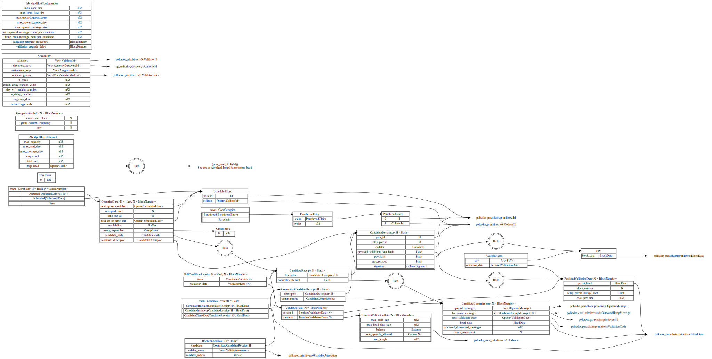
These data types are defined in polkadot/parachain/src/primitives.rs:
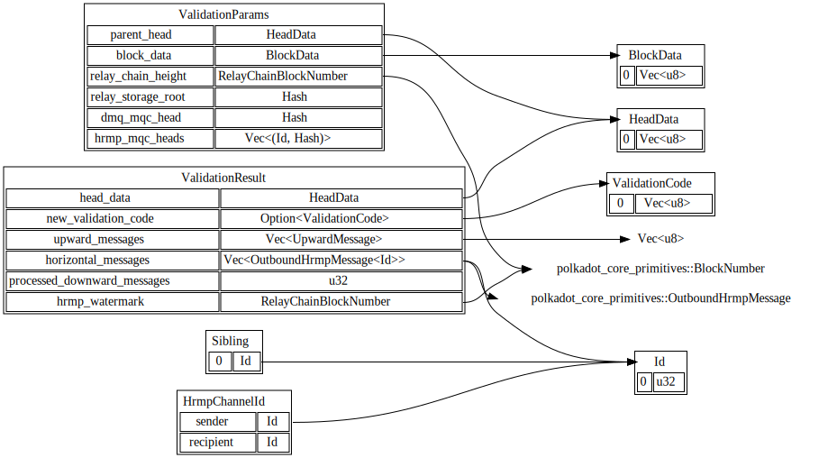
Candidate Types
Para candidates are some of the most common types, both within the runtime and on the Node-side. Candidates are the fundamental datatype for advancing parachains and parathreads, encapsulating the collator's signature, the context of the parablock, the commitments to the output, and a commitment to the data which proves it valid.
In a way, this entire guide is about these candidates: how they are scheduled, constructed, backed, included, and challenged.
This section will describe the base candidate type, its components, and variants that contain extra data.
Para Id
A unique 32-bit identifier referring to a specific para (chain or thread). The relay-chain runtime guarantees that ParaIds are unique for the duration of any session, but recycling and reuse over a longer period of time is permitted.
#![allow(unused)] fn main() { struct ParaId(u32); }
Candidate Receipt
Much info in a FullCandidateReceipt is duplicated from the relay-chain state. When the corresponding relay-chain state is considered widely available, the Candidate Receipt should be favored over the FullCandidateReceipt.
Examples of situations where the state is readily available includes within the scope of work done by subsystems working on a given relay-parent, or within the logic of the runtime importing a backed candidate.
#![allow(unused)] fn main() { /// A candidate-receipt. struct CandidateReceipt { /// The descriptor of the candidate. descriptor: CandidateDescriptor, /// The hash of the encoded commitments made as a result of candidate execution. commitments_hash: Hash, } }
Full Candidate Receipt
This is the full receipt type. The PersistedValidationData are technically redundant with the inner.relay_parent, which uniquely describes the block in the blockchain from whose state these values are derived. The CandidateReceipt variant is often used instead for this reason.
However, the Full Candidate Receipt type is useful as a means of avoiding the implicit dependency on availability of old blockchain state. In situations such as availability and approval, having the full description of the candidate within a self-contained struct is convenient.
#![allow(unused)] fn main() { /// All data pertaining to the execution of a para candidate. struct FullCandidateReceipt { inner: CandidateReceipt, validation_data: PeristedValidationData, } }
Committed Candidate Receipt
This is a variant of the candidate receipt which includes the commitments of the candidate receipt alongside the descriptor. This should be favored over the Candidate Receipt in situations where the candidate is not going to be executed but the actual data committed to is important. This is often the case in the backing phase.
The hash of the committed candidate receipt will be the same as the corresponding Candidate Receipt, because it is computed by first hashing the encoding of the commitments to form a plain Candidate Receipt.
#![allow(unused)] fn main() { /// A candidate-receipt with commitments directly included. struct CommittedCandidateReceipt { /// The descriptor of the candidate. descriptor: CandidateDescriptor, /// The commitments of the candidate receipt. commitments: CandidateCommitments, } }
Candidate Descriptor
This struct is pure description of the candidate, in a lightweight format.
#![allow(unused)] fn main() { /// A unique descriptor of the candidate receipt. struct CandidateDescriptor { /// The ID of the para this is a candidate for. para_id: ParaId, /// The hash of the relay-chain block this is executed in the context of. relay_parent: Hash, /// The collator's sr25519 public key. collator: CollatorId, /// The blake2-256 hash of the persisted validation data. These are extra parameters /// derived from relay-chain state that influence the validity of the block which /// must also be kept available for secondary checkers. persisted_validation_data_hash: Hash, /// The blake2-256 hash of the pov-block. pov_hash: Hash, /// The root of a block's erasure encoding Merkle tree. erasure_root: Hash, /// Signature on blake2-256 of components of this receipt: /// The parachain index, the relay parent, the validation data hash, and the pov_hash. signature: CollatorSignature, /// Hash of the para header that is being generated by this candidate. para_head: Hash, /// The blake2-256 hash of the validation code bytes. validation_code_hash: ValidationCodeHash, } }
PersistedValidationData
The validation data provides information about how to create the inputs for validation of a candidate. This information is derived from the chain state and will vary from para to para, although some of the fields may be the same for every para.
Since this data is used to form inputs to the validation function, it needs to be persisted by the availability system to avoid dependence on availability of the relay-chain state.
Furthermore, the validation data acts as a way to authorize the additional data the collator needs to pass to the validation function. For example, the validation function can check whether the incoming messages (e.g. downward messages) were actually sent by using the data provided in the validation data using so called MQC heads.
Since the commitments of the validation function are checked by the relay-chain, secondary checkers can rely on the invariant that the relay-chain only includes para-blocks for which these checks have already been done. As such, there is no need for the validation data used to inform validators and collators about the checks the relay-chain will perform to be persisted by the availability system.
The PersistedValidationData should be relatively lightweight primarly because it is constructed during inclusion for each candidate and therefore lies on the critical path of inclusion.
#![allow(unused)] fn main() { struct PersistedValidationData { /// The parent head-data. parent_head: HeadData, /// The relay-chain block number this is in the context of. This informs the collator. relay_parent_number: BlockNumber, /// The relay-chain block storage root this is in the context of. relay_parent_storage_root: Hash, /// The list of MQC heads for the inbound channels paired with the sender para ids. This /// vector is sorted ascending by the para id and doesn't contain multiple entries with the same /// sender. /// /// The HRMP MQC heads will be used by the validation function to authorize the input messages passed /// by the collator. hrmp_mqc_heads: Vec<(ParaId, Hash)>, /// The maximum legal size of a POV block, in bytes. pub max_pov_size: u32, } }
HeadData
Head data is a type-safe abstraction around bytes (Vec<u8>) for the purposes of representing heads of parachains or parathreads.
#![allow(unused)] fn main() { struct HeadData(Vec<u8>); }
Candidate Commitments
The execution and validation of parachain or parathread candidates produces a number of values which either must be committed to on the relay chain or committed to the state of the relay chain.
#![allow(unused)] fn main() { /// Commitments made in a `CandidateReceipt`. Many of these are outputs of validation. #[derive(PartialEq, Eq, Clone, Encode, Decode)] #[cfg_attr(feature = "std", derive(Debug, Default))] struct CandidateCommitments { /// Messages directed to other paras routed via the relay chain. horizontal_messages: Vec<OutboundHrmpMessage>, /// Messages destined to be interpreted by the Relay chain itself. upward_messages: Vec<UpwardMessage>, /// New validation code. new_validation_code: Option<ValidationCode>, /// The head-data produced as a result of execution. head_data: HeadData, /// The number of messages processed from the DMQ. processed_downward_messages: u32, /// The mark which specifies the block number up to which all inbound HRMP messages are processed. hrmp_watermark: BlockNumber, } }
Signing Context
This struct provides context to signatures by combining with various payloads to localize the signature to a particular session index and relay-chain hash. Having these fields included in the signature makes misbehavior attribution much simpler.
#![allow(unused)] fn main() { struct SigningContext { /// The relay-chain block hash this signature is in the context of. parent_hash: Hash, /// The session index this signature is in the context of. session_index: SessionIndex, } }
Backing Types
Candidates go through many phases before being considered included in a fork of the relay chain and eventually accepted.
These types describe the data used in the backing phase. Some are sent over the wire within subsystems, and some are simply included in the relay-chain block.
Validity Attestation
An attestation of validity for a candidate, used as part of a backing. Both the Seconded and Valid statements are considered attestations of validity. This structure is only useful where the candidate referenced is apparent.
#![allow(unused)] fn main() { enum ValidityAttestation { /// Implicit validity attestation by issuing. /// This corresponds to issuance of a `Seconded` statement. Implicit(ValidatorSignature), /// An explicit attestation. This corresponds to issuance of a /// `Valid` statement. Explicit(ValidatorSignature), } }
Signed Wrapper
There are a few distinct types which we desire to sign, and validate the signatures of. Instead of duplicating this work, we extract a signed wrapper.
/// A signed type which encapsulates the common desire to sign some data and validate a signature.
///
/// Note that the internal fields are not public; they are all accessable by immutable getters.
/// This reduces the chance that they are accidentally mutated, invalidating the signature.
struct Signed<Payload, RealPayload=Payload> {
/// The payload is part of the signed data. The rest is the signing context,
/// which is known both at signing and at validation.
payload: Payload,
/// The index of the validator signing this statement.
validator_index: ValidatorIndex,
/// The signature by the validator of the signed payload.
signature: ValidatorSignature,
}
impl<Payload: EncodeAs<RealPayload>, RealPayload: Encode> Signed<Payload, RealPayload> {
fn sign(payload: Payload, context: SigningContext, index: ValidatorIndex, key: ValidatorPair) -> Signed<Payload, RealPayload> { ... }
fn validate(&self, context: SigningContext, key: ValidatorId) -> bool { ... }
}
Note the presence of the SigningContext in the signatures of the sign and validate methods. To ensure cryptographic security, the actual signed payload is always the SCALE encoding of (payload.into(), signing_context). Including the signing context prevents replay attacks.
EncodeAs is a helper trait with a blanket impl which ensures that any T can EncodeAs<T>. Therefore, for the generic case where RealPayload = Payload, it changes nothing. However, we impl EncodeAs<CompactStatement> for Statement, which helps efficiency.
Statement Type
The Candidate Backing subsystem issues and signs these after candidate validation.
#![allow(unused)] fn main() { /// A statement about the validity of a parachain candidate. enum Statement { /// A statement about a new candidate being seconded by a validator. This is an implicit validity vote. /// /// The main semantic difference between `Seconded` and `Valid` comes from the fact that every validator may /// second only 1 candidate; this places an upper bound on the total number of candidates whose validity /// needs to be checked. A validator who seconds more than 1 parachain candidate per relay head is subject /// to slashing. Seconded(CommittedCandidateReceipt), /// A statement about the validity of a candidate, based on candidate's hash. Valid(Hash), } /// A statement about the validity of a parachain candidate. /// /// This variant should only be used in the production of `SignedStatement`s. The only difference between /// this enum and `Statement` is that the `Seconded` variant contains a `Hash` instead of a `CandidateReceipt`. /// The rationale behind the difference is that the signature should always be on the hash instead of the /// full data, as this lowers the requirement for checking while retaining necessary cryptographic properties enum CompactStatement { /// A statement about a new candidate being seconded by a validator. This is an implicit validity vote. Seconded(Hash), /// A statement about the validity of a candidate, based on candidate's hash. Valid(Hash), } }
CompactStatement exists because a CandidateReceipt includes HeadData, which does not have a bounded size.
Signed Statement Type
A statement which has been cryptographically signed by a validator.
#![allow(unused)] fn main() { /// A signed statement, containing the committed candidate receipt in the `Seconded` variant. pub type SignedFullStatement = Signed<Statement, CompactStatement>; /// A signed statement, containing only the hash. pub type SignedStatement = Signed<CompactStatement>; }
Munging the signed Statement into a CompactStatement before signing allows the candidate receipt itself to be omitted when checking a signature on a Seconded statement.
Backed Candidate
An CommittedCandidateReceipt along with all data necessary to prove its backing. This is submitted to the relay-chain to process and move along the candidate to the pending-availability stage.
#![allow(unused)] fn main() { struct BackedCandidate { candidate: CommittedCandidateReceipt, validity_votes: Vec<ValidityAttestation>, // the indices of validators who signed the candidate within the group. There is no need to include // bit for any validators who are not in the group, so this is more compact. // The number of bits is the number of validators in the group. // // the group should be apparent from context. validator_indices: BitVec, } struct BackedCandidates(Vec<BackedCandidate>); // sorted by para-id. }
Availability
One of the key roles of validators is to ensure availability of all data necessary to validate candidates for the duration of a challenge period. This is done via an erasure-coding of the data to keep available.
Signed Availability Bitfield
A bitfield signed by a particular validator about the availability of pending candidates.
#![allow(unused)] fn main() { type SignedAvailabilityBitfield = Signed<Bitvec>; struct Bitfields(Vec<(SignedAvailabilityBitfield)>), // bitfields sorted by validator index, ascending }
Semantics
A SignedAvailabilityBitfield represents the view from a particular validator's perspective. Each bit in the bitfield corresponds to a single availability core. A 1 bit indicates that the validator believes the following statements to be true for a core:
- the availability core is occupied
- there exists a
CommittedCandidateReceiptcorresponding to that core. In other words, that para has a block in progress. - the validator's Availability Store contains a chunk of that parablock's PoV.
In other words, it is the transpose of OccupiedCore::availability.
Proof-of-Validity
Often referred to as PoV, this is a type-safe wrapper around bytes (Vec<u8>) when referring to data that acts as a stateless-client proof of validity of a candidate, when used as input to the validation function of the para.
#![allow(unused)] fn main() { struct PoV(Vec<u8>); }
Available Data
This is the data we want to keep available for each candidate included in the relay chain. This is the PoV of the block, as well as the PersistedValidationData
#![allow(unused)] fn main() { struct AvailableData { /// The Proof-of-Validation of the candidate. pov: Arc<PoV>, /// The persisted validation data used to check the candidate. validation_data: PersistedValidationData, } }
TODO: With XCMP, we also need to keep available the outgoing messages as a result of para-validation.
Erasure Chunk
The AvailableData is split up into an erasure-coding as part of the availability process. Each validator gets a chunk. This describes one of those chunks, along with its proof against a merkle root hash, which should be apparent from context, and is the erasure_root field of a CandidateDescriptor.
#![allow(unused)] fn main() { struct ErasureChunk { /// The erasure-encoded chunk of data belonging to the candidate block. chunk: Vec<u8>, /// The index of this erasure-encoded chunk of data. index: u32, /// Proof for this chunk's branch in the Merkle tree. proof: Vec<Vec<u8>>, } }
Overseer Protocol
This chapter contains message types sent to and from the overseer, and the underlying subsystem message types that are transmitted using these.
Overseer Signal
Signals from the overseer to a subsystem to request change in execution that has to be obeyed by the subsystem.
#![allow(unused)] fn main() { enum OverseerSignal { /// Signal about a change in active leaves. ActiveLeavesUpdate(ActiveLeavesUpdate), /// Signal about a new best finalized block. BlockFinalized(Hash), /// Conclude all operation. Conclude, } }
All subsystems have their own message types; all of them need to be able to listen for overseer signals as well. There are currently two proposals for how to handle that with unified communication channels:
- Retaining the
OverseerSignaldefinition above, addenum FromOverseer<T> {Signal(OverseerSignal), Message(T)}. - Add a generic varint to
OverseerSignal:Message(T).
Either way, there will be some top-level type encapsulating messages from the overseer to each subsystem.
Active Leaves Update
Indicates a change in active leaves. Activated leaves should have jobs, whereas deactivated leaves should lead to winding-down of work based on those leaves.
#![allow(unused)] fn main() { enum LeafStatus { // A leaf is fresh when it's the first time the leaf has been encountered. // Most leaves should be fresh. Fresh, // A leaf is stale when it's encountered for a subsequent time. This will // happen when the chain is reverted or the fork-choice rule abandons some // chain. Stale, } struct ActiveLeavesUpdate { activated: [(Hash, Number, LeafStatus)], // in practice, these should probably be a SmallVec deactivated: [Hash], } }
All Messages
A message type tying together all message types that are used across Subsystems.
#![allow(unused)] fn main() { enum AllMessages { CandidateValidation(CandidateValidationMessage), CandidateBacking(CandidateBackingMessage), ChainApi(ChainApiMessage), CollatorProtocol(CollatorProtocolMessage), StatementDistribution(StatementDistributionMessage), AvailabilityDistribution(AvailabilityDistributionMessage), AvailabilityRecovery(AvailabilityRecoveryMessage), BitfieldDistribution(BitfieldDistributionMessage), BitfieldSigning(BitfieldSigningMessage), Provisioner(ProvisionerMessage), RuntimeApi(RuntimeApiMessage), AvailabilityStore(AvailabilityStoreMessage), NetworkBridge(NetworkBridgeMessage), CollationGeneration(CollationGenerationMessage), ApprovalVoting(ApprovalVotingMessage), ApprovalDistribution(ApprovalDistributionMessage), GossipSupport(GossipSupportMessage), DisputeCoordinator(DisputeCoordinatorMessage), DisputeParticipation(DisputeParticipationMessage), ChainSelection(ChainSelectionMessage), } }
Approval Voting Message
Messages received by the approval voting subsystem.
#![allow(unused)] fn main() { enum AssignmentCheckResult { // The vote was accepted and should be propagated onwards. Accepted, // The vote was valid but duplicate and should not be propagated onwards. AcceptedDuplicate, // The vote was valid but too far in the future to accept right now. TooFarInFuture, // The vote was bad and should be ignored, reporting the peer who propagated it. Bad(AssignmentCheckError), } pub enum AssignmentCheckError { UnknownBlock(Hash), UnknownSessionIndex(SessionIndex), InvalidCandidateIndex(CandidateIndex), InvalidCandidate(CandidateIndex, CandidateHash), InvalidCert(ValidatorIndex), Internal(Hash, CandidateHash), } enum ApprovalCheckResult { // The vote was accepted and should be propagated onwards. Accepted, // The vote was bad and should be ignored, reporting the peer who propagated it. Bad(ApprovalCheckError), } pub enum ApprovalCheckError { UnknownBlock(Hash), UnknownSessionIndex(SessionIndex), InvalidCandidateIndex(CandidateIndex), InvalidValidatorIndex(ValidatorIndex), InvalidCandidate(CandidateIndex, CandidateHash), InvalidSignature(ValidatorIndex), NoAssignment(ValidatorIndex), Internal(Hash, CandidateHash), } enum ApprovalVotingMessage { /// Check if the assignment is valid and can be accepted by our view of the protocol. /// Should not be sent unless the block hash is known. CheckAndImportAssignment( IndirectAssignmentCert, CandidateIndex, // The index of the candidate included in the block. ResponseChannel<AssignmentCheckResult>, ), /// Check if the approval vote is valid and can be accepted by our view of the /// protocol. /// /// Should not be sent unless the block hash within the indirect vote is known. CheckAndImportApproval( IndirectSignedApprovalVote, ResponseChannel<ApprovalCheckResult>, ), /// Returns the highest possible ancestor hash of the provided block hash which is /// acceptable to vote on finality for. Along with that, return the lists of candidate hashes /// which appear in every block from the (non-inclusive) base number up to (inclusive) the specified /// approved ancestor. /// This list starts from the highest block (the approved ancestor itself) and moves backwards /// towards the base number. /// /// The base number is typically the number of the last finalized block, but in GRANDPA it is /// possible for the base to be slightly higher than the last finalized block. /// /// The `BlockNumber` provided is the number of the block's ancestor which is the /// earliest possible vote. /// /// It can also return the same block hash, if that is acceptable to vote upon. /// Return `None` if the input hash is unrecognized. ApprovedAncestor { target_hash: Hash, base_number: BlockNumber, rx: ResponseChannel<Option<(Hash, BlockNumber, Vec<(Hash, Vec<CandidateHash>)>)>> }, } }
Approval Distribution Message
Messages received by the approval distribution subsystem.
#![allow(unused)] fn main() { /// Metadata about a block which is now live in the approval protocol. struct BlockApprovalMeta { /// The hash of the block. hash: Hash, /// The number of the block. number: BlockNumber, /// The candidates included by the block. Note that these are not the same as the candidates that appear within the /// block body. parent_hash: Hash, /// The candidates included by the block. Note that these are not the same as the candidates that appear within the /// block body. candidates: Vec<CandidateHash>, /// The consensus slot of the block. slot: Slot, } enum ApprovalDistributionMessage { /// Notify the `ApprovalDistribution` subsystem about new blocks and the candidates contained within /// them. NewBlocks(Vec<BlockApprovalMeta>), /// Distribute an assignment cert from the local validator. The cert is assumed /// to be valid, relevant, and for the given relay-parent and validator index. /// /// The `u32` param is the candidate index in the fully-included list. DistributeAssignment(IndirectAssignmentCert, u32), /// Distribute an approval vote for the local validator. The approval vote is assumed to be /// valid, relevant, and the corresponding approval already issued. If not, the subsystem is free to drop /// the message. DistributeApproval(IndirectSignedApprovalVote), /// An update from the network bridge. NetworkBridgeUpdateV1(NetworkBridgeEvent<ApprovalDistributionV1Message>), } }
Availability Distribution Message
Messages received by the availability distribution subsystem.
This is a network protocol that receives messages of type AvailabilityDistributionV1Message.
#![allow(unused)] fn main() { enum AvailabilityDistributionMessage { /// Incoming network request for an availability chunk. ChunkFetchingRequest(IncomingRequest<req_res_v1::ChunkFetchingRequest>), /// Incoming network request for a seconded PoV. PoVFetchingRequest(IncomingRequest<req_res_v1::PoVFetchingRequest>), /// Instruct availability distribution to fetch a remote PoV. /// /// NOTE: The result of this fetch is not yet locally validated and could be bogus. FetchPoV { /// The relay parent giving the necessary context. relay_parent: Hash, /// Validator to fetch the PoV from. from_validator: ValidatorIndex, /// Candidate hash to fetch the PoV for. candidate_hash: CandidateHash, /// Expected hash of the PoV, a PoV not matching this hash will be rejected. pov_hash: Hash, /// Sender for getting back the result of this fetch. /// /// The sender will be canceled if the fetching failed for some reason. tx: oneshot::Sender<PoV>, }, } }
Availability Recovery Message
Messages received by the availability recovery subsystem.
#![allow(unused)] fn main() { enum RecoveryError { Invalid, Unavailable, } enum AvailabilityRecoveryMessage { /// Recover available data from validators on the network. RecoverAvailableData( CandidateReceipt, SessionIndex, Option<GroupIndex>, // Backing validator group to request the data directly from. ResponseChannel<Result<AvailableData, RecoveryError>>, ), } }
Availability Store Message
Messages to and from the availability store.
#![allow(unused)] fn main() { enum AvailabilityStoreMessage { /// Query the `AvailableData` of a candidate by hash. QueryAvailableData(CandidateHash, ResponseChannel<Option<AvailableData>>), /// Query whether an `AvailableData` exists within the AV Store. QueryDataAvailability(CandidateHash, ResponseChannel<bool>), /// Query a specific availability chunk of the candidate's erasure-coding by validator index. /// Returns the chunk and its inclusion proof against the candidate's erasure-root. QueryChunk(CandidateHash, ValidatorIndex, ResponseChannel<Option<ErasureChunk>>), /// Query all chunks that we have locally for the given candidate hash. QueryAllChunks(CandidateHash, ResponseChannel<Vec<ErasureChunk>>), /// Store a specific chunk of the candidate's erasure-coding by validator index, with an /// accompanying proof. StoreChunk(CandidateHash, ErasureChunk, ResponseChannel<Result<()>>), /// Store `AvailableData`. If `ValidatorIndex` is provided, also store this validator's /// `ErasureChunk`. StoreAvailableData(CandidateHash, Option<ValidatorIndex>, u32, AvailableData, ResponseChannel<Result<()>>), } }
Bitfield Distribution Message
Messages received by the bitfield distribution subsystem.
This is a network protocol that receives messages of type BitfieldDistributionV1Message.
#![allow(unused)] fn main() { enum BitfieldDistributionMessage { /// Distribute a bitfield signed by a validator to other validators. /// The bitfield distribution subsystem will assume this is indeed correctly signed. DistributeBitfield(relay_parent, SignedAvailabilityBitfield), /// Receive a network bridge update. NetworkBridgeUpdateV1(NetworkBridgeEvent<BitfieldDistributionV1Message>), } }
Bitfield Signing Message
Currently, the bitfield signing subsystem receives no specific messages.
#![allow(unused)] fn main() { /// Non-instantiable message type enum BitfieldSigningMessage { } }
Candidate Backing Message
#![allow(unused)] fn main() { enum CandidateBackingMessage { /// Requests a set of backable candidates that could be backed in a child of the given /// relay-parent, referenced by its hash. GetBackedCandidates(Hash, Vec<CandidateHash>, ResponseChannel<Vec<BackedCandidate>>), /// Note that the Candidate Backing subsystem should second the given candidate in the context of the /// given relay-parent (ref. by hash). This candidate must be validated using the provided PoV. /// The PoV is expected to match the `pov_hash` in the descriptor. Second(Hash, CandidateReceipt, PoV), /// Note a peer validator's statement about a particular candidate. Disagreements about validity must be escalated /// to a broader check by Misbehavior Arbitration. Agreements are simply tallied until a quorum is reached. Statement(Statement), } }
Chain API Message
The Chain API subsystem is responsible for providing an interface to chain data.
#![allow(unused)] fn main() { enum ChainApiMessage { /// Get the block number by hash. /// Returns `None` if a block with the given hash is not present in the db. BlockNumber(Hash, ResponseChannel<Result<Option<BlockNumber>, Error>>), /// Request the block header by hash. /// Returns `None` if a block with the given hash is not present in the db. BlockHeader(Hash, ResponseChannel<Result<Option<BlockHeader>, Error>>), /// Get the cumulative weight of the given block, by hash. /// If the block or weight is unknown, this returns `None`. /// /// Weight is used for comparing blocks in a fork-choice rule. BlockWeight(Hash, ResponseChannel<Result<Option<Weight>, Error>>), /// Get the finalized block hash by number. /// Returns `None` if a block with the given number is not present in the db. /// Note: the caller must ensure the block is finalized. FinalizedBlockHash(BlockNumber, ResponseChannel<Result<Option<Hash>, Error>>), /// Get the last finalized block number. /// This request always succeeds. FinalizedBlockNumber(ResponseChannel<Result<BlockNumber, Error>>), /// Request the `k` ancestors block hashes of a block with the given hash. /// The response channel may return a `Vec` of size up to `k` /// filled with ancestors hashes with the following order: /// `parent`, `grandparent`, ... Ancestors { /// The hash of the block in question. hash: Hash, /// The number of ancestors to request. k: usize, /// The response channel. response_channel: ResponseChannel<Result<Vec<Hash>, Error>>, } } }
Chain Selection Message
Messages received by the Chain Selection subsystem
#![allow(unused)] fn main() { enum ChainSelectionMessage { /// Signal to the chain selection subsystem that a specific block has been approved. Approved(Hash), /// Request the leaves in descending order by score. Leaves(ResponseChannel<Vec<Hash>>), /// Request the best leaf containing the given block in its ancestry. Return `None` if /// there is no such leaf. BestLeafContaining(Hash, ResponseChannel<Option<Hash>>), } }
Collator Protocol Message
Messages received by the Collator Protocol subsystem
This is a network protocol that receives messages of type CollatorProtocolV1Message.
#![allow(unused)] fn main() { enum CollatorProtocolMessage { /// Signal to the collator protocol that it should connect to validators with the expectation /// of collating on the given para. This is only expected to be called once, early on, if at all, /// and only by the Collation Generation subsystem. As such, it will overwrite the value of /// the previous signal. /// /// This should be sent before any `DistributeCollation` message. CollateOn(ParaId), /// Provide a collation to distribute to validators with an optional result sender. /// /// The result sender should be informed when at least one parachain validator seconded the collation. It is also /// completely okay to just drop the sender. DistributeCollation(CandidateReceipt, PoV, Option<oneshot::Sender<SignedFullStatement>>), /// Fetch a collation under the given relay-parent for the given ParaId. FetchCollation(Hash, ParaId, ResponseChannel<(CandidateReceipt, PoV)>), /// Report a collator as having provided an invalid collation. This should lead to disconnect /// and blacklist of the collator. ReportCollator(CollatorId), /// Note a collator as having provided a good collation. NoteGoodCollation(CollatorId, SignedFullStatement), /// Notify a collator that its collation was seconded. NotifyCollationSeconded(CollatorId, Hash, SignedFullStatement), } }
Dispute Coordinator Message
Messages received by the Dispute Coordinator subsystem
This subsystem coordinates participation in disputes, tracks live disputes, and observed statements of validators from subsystems.
#![allow(unused)] fn main() { enum DisputeCoordinatorMessage { /// Import a statement by a validator about a candidate. /// /// The subsystem will silently discard ancient statements or sets of only dispute-specific statements for /// candidates that are previously unknown to the subsystem. The former is simply because ancient /// data is not relevant and the latter is as a DoS prevention mechanism. Both backing and approval /// statements already undergo anti-DoS procedures in their respective subsystems, but statements /// cast specifically for disputes are not necessarily relevant to any candidate the system is /// already aware of and thus present a DoS vector. Our expectation is that nodes will notify each /// other of disputes over the network by providing (at least) 2 conflicting statements, of which one is either /// a backing or validation statement. /// /// This does not do any checking of the message signature. ImportStatements { /// The hash of the candidate. candidate_hash: CandidateHash, /// The candidate receipt itself. candidate_receipt: CandidateReceipt, /// The session the candidate appears in. session: SessionIndex, /// Triples containing the following: /// - A statement, either indicating validity or invalidity of the candidate. /// - The validator index (within the session of the candidate) of the validator casting the vote. /// - The signature of the validator casting the vote. statements: Vec<(DisputeStatement, ValidatorIndex, ValidatorSignature)>, /// Inform the requester once we finished importing. /// /// This is, we either discarded the votes, just record them because we /// casted our vote already or recovered availability for the candidate /// successfully. pending_confirmation: oneshot::Sender<()>, }, /// Fetch a list of all active disputes that the co-ordinator is aware of. ActiveDisputes(ResponseChannel<Vec<(SessionIndex, CandidateHash)>>), /// Get candidate votes for a candidate. QueryCandidateVotes(SessionIndex, CandidateHash, ResponseChannel<Option<CandidateVotes>>), /// Sign and issue local dispute votes. A value of `true` indicates validity, and `false` invalidity. IssueLocalStatement(SessionIndex, CandidateHash, CandidateReceipt, bool), /// Determine the highest undisputed block within the given chain, based on where candidates /// were included. If even the base block should not be finalized due to a dispute, /// then `None` should be returned on the channel. /// /// The block descriptions begin counting upwards from the block after the given `base_number`. The `base_number` /// is typically the number of the last finalized block but may be slightly higher. This block /// is inevitably going to be finalized so it is not accounted for by this function. DetermineUndisputedChain { base_number: BlockNumber, block_descriptions: Vec<(BlockHash, SessionIndex, Vec<CandidateHash>)>, rx: ResponseSender<Option<(BlockNumber, BlockHash)>>, } } }
Dispute Participation Message
Messages received by the Dispute Participation subsystem
This subsystem simply executes requests to evaluate a candidate.
#![allow(unused)] fn main() { enum DisputeParticipationMessage { /// Validate a candidate for the purposes of participating in a dispute. Participate { /// The hash of the candidate candidate_hash: CandidateHash, /// The candidate receipt itself. candidate_receipt: CandidateReceipt, /// The session the candidate appears in. session: SessionIndex, /// The number of validators in the session. n_validators: u32, } } }
Dispute Distribution Message
Messages received by the Dispute Distribution subsystem. This subsystem is responsible of distributing explicit dispute statements.
#![allow(unused)] fn main() { enum DisputeDistributionMessage { /// Tell dispute distribution to distribute an explicit dispute statement to /// validators. SendDispute((ValidVote, InvalidVote)), /// Ask DisputeDistribution to get votes we don't know about. /// Fetched votes will be reported via `DisputeCoordinatorMessage::ImportStatements` FetchMissingVotes { candidate_hash: CandidateHash, session: SessionIndex, known_valid_votes: Bitfield, known_invalid_votes: Bitfield, /// Optional validator to query from. `ValidatorIndex` as in the above /// referenced session. from_validator: Option<ValidatorIndex>, } /// Tell the subsystem that a candidate is not available. Dispute distribution /// can punish peers distributing votes on unavailable hashes. ReportCandidateUnavailable(CandidateHash), } }
Network Bridge Message
Messages received by the network bridge. This subsystem is invoked by others to manipulate access to the low-level networking code.
#![allow(unused)] fn main() { /// Peer-sets handled by the network bridge. enum PeerSet { /// The collation peer-set is used to distribute collations from collators to validators. Collation, /// The validation peer-set is used to distribute information relevant to parachain /// validation among validators. This may include nodes which are not validators, /// as some protocols on this peer-set are expected to be gossip. Validation, } enum NetworkBridgeMessage { /// Report a cost or benefit of a peer. Negative values are costs, positive are benefits. ReportPeer(PeerId, cost_benefit: i32), /// Disconnect a peer from the given peer-set without affecting their reputation. DisconnectPeer(PeerId, PeerSet), /// Send a message to one or more peers on the validation peerset. SendValidationMessage([PeerId], ValidationProtocolV1), /// Send a message to one or more peers on the collation peerset. SendCollationMessage([PeerId], ValidationProtocolV1), /// Send multiple validation messages. SendValidationMessages([([PeerId, ValidationProtocolV1])]), /// Send multiple collation messages. SendCollationMessages([([PeerId, ValidationProtocolV1])]), /// Connect to peers who represent the given `validator_ids`. /// /// Also ask the network to stay connected to these peers at least /// until a new request is issued. /// /// Because it overrides the previous request, it must be ensured /// that `validator_ids` include all peers the subsystems /// are interested in (per `PeerSet`). /// /// A caller can learn about validator connections by listening to the /// `PeerConnected` events from the network bridge. ConnectToValidators { /// Ids of the validators to connect to. validator_ids: Vec<AuthorityDiscoveryId>, /// The underlying protocol to use for this request. peer_set: PeerSet, /// Sends back the number of `AuthorityDiscoveryId`s which /// authority discovery has failed to resolve. failed: oneshot::Sender<usize>, }, /// Inform the distribution subsystems about the new /// gossip network topology formed. NewGossipTopology { /// Ids of our neighbors in the new gossip topology. /// We're not necessarily connected to all of them, but we should. our_neighbors: HashSet<AuthorityDiscoveryId>, } } }
Misbehavior Report
#![allow(unused)] fn main() { pub type Misbehavior = generic::Misbehavior< CommittedCandidateReceipt, CandidateHash, ValidatorIndex, ValidatorSignature, >; mod generic { /// Misbehavior: voting more than one way on candidate validity. /// /// Since there are three possible ways to vote, a double vote is possible in /// three possible combinations (unordered) pub enum ValidityDoubleVote<Candidate, Digest, Signature> { /// Implicit vote by issuing and explicitly voting validity. IssuedAndValidity((Candidate, Signature), (Digest, Signature)), /// Implicit vote by issuing and explicitly voting invalidity IssuedAndInvalidity((Candidate, Signature), (Digest, Signature)), /// Direct votes for validity and invalidity ValidityAndInvalidity(Candidate, Signature, Signature), } /// Misbehavior: multiple signatures on same statement. pub enum DoubleSign<Candidate, Digest, Signature> { /// On candidate. Candidate(Candidate, Signature, Signature), /// On validity. Validity(Digest, Signature, Signature), /// On invalidity. Invalidity(Digest, Signature, Signature), } /// Misbehavior: declaring multiple candidates. pub struct MultipleCandidates<Candidate, Signature> { /// The first candidate seen. pub first: (Candidate, Signature), /// The second candidate seen. pub second: (Candidate, Signature), } /// Misbehavior: submitted statement for wrong group. pub struct UnauthorizedStatement<Candidate, Digest, AuthorityId, Signature> { /// A signed statement which was submitted without proper authority. pub statement: SignedStatement<Candidate, Digest, AuthorityId, Signature>, } pub enum Misbehavior<Candidate, Digest, AuthorityId, Signature> { /// Voted invalid and valid on validity. ValidityDoubleVote(ValidityDoubleVote<Candidate, Digest, Signature>), /// Submitted multiple candidates. MultipleCandidates(MultipleCandidates<Candidate, Signature>), /// Submitted a message that was unauthorized. UnauthorizedStatement(UnauthorizedStatement<Candidate, Digest, AuthorityId, Signature>), /// Submitted two valid signatures for the same message. DoubleSign(DoubleSign<Candidate, Digest, Signature>), } } }
PoV Distribution Message
This is a network protocol that receives messages of type PoVDistributionV1Message.
#![allow(unused)] fn main() { enum PoVDistributionMessage { /// Fetch a PoV from the network. /// /// This `CandidateDescriptor` should correspond to a candidate seconded under the provided /// relay-parent hash. FetchPoV(Hash, CandidateDescriptor, ResponseChannel<PoV>), /// Distribute a PoV for the given relay-parent and CandidateDescriptor. /// The PoV should correctly hash to the PoV hash mentioned in the CandidateDescriptor DistributePoV(Hash, CandidateDescriptor, PoV), /// An update from the network bridge. NetworkBridgeUpdateV1(NetworkBridgeEvent<PoVDistributionV1Message>), } }
Provisioner Message
#![allow(unused)] fn main() { /// This data becomes intrinsics or extrinsics which should be included in a future relay chain block. enum ProvisionableData { /// This bitfield indicates the availability of various candidate blocks. Bitfield(Hash, SignedAvailabilityBitfield), /// The Candidate Backing subsystem believes that this candidate is valid, pending availability. BackedCandidate(CandidateReceipt), /// Misbehavior reports are self-contained proofs of validator misbehavior. MisbehaviorReport(Hash, MisbehaviorReport), /// Disputes trigger a broad dispute resolution process. Dispute(Hash, Signature), } /// Message to the Provisioner. /// /// In all cases, the Hash is that of the relay parent. enum ProvisionerMessage { /// This message allows external subsystems to request current inherent data that could be used for /// advancing the state of parachain consensus in a block building upon the given hash. /// /// If called at different points in time, this may give different results. RequestInherentData(Hash, oneshot::Sender<ParaInherentData>), /// This data should become part of a relay chain block ProvisionableData(ProvisionableData), } }
Runtime API Message
The Runtime API subsystem is responsible for providing an interface to the state of the chain's runtime.
This is fueled by an auxiliary type encapsulating all request types defined in the Runtime API section of the guide.
TODO: link to the Runtime API section. Not possible currently because of https://github.com/Michael-F-Bryan/mdbook-linkcheck/issues/25. Once v0.7.1 is released it will work.
#![allow(unused)] fn main() { enum RuntimeApiRequest { /// Get the current validator set. Validators(ResponseChannel<Vec<ValidatorId>>), /// Get the validator groups and rotation info. ValidatorGroups(ResponseChannel<(Vec<Vec<ValidatorIndex>>, GroupRotationInfo)>), /// Get information about all availability cores. AvailabilityCores(ResponseChannel<Vec<CoreState>>), /// with the given occupied core assumption. PersistedValidationData( ParaId, OccupiedCoreAssumption, ResponseChannel<Option<PersistedValidationData>>, ), /// Sends back `true` if the commitments pass all acceptance criteria checks. CheckValidationOutputs( ParaId, CandidateCommitments, RuntimeApiSender<bool>, ), /// Get the session index for children of the block. This can be used to construct a signing /// context. SessionIndexForChild(ResponseChannel<SessionIndex>), /// Get the validation code for a specific para, using the given occupied core assumption. ValidationCode(ParaId, OccupiedCoreAssumption, ResponseChannel<Option<ValidationCode>>), /// Get validation code by its hash, either past, current or future code can be returned, /// as long as state is still available. ValidationCodeByHash(ValidationCodeHash, RuntimeApiSender<Option<ValidationCode>>), /// Get a committed candidate receipt for all candidates pending availability. CandidatePendingAvailability(ParaId, ResponseChannel<Option<CommittedCandidateReceipt>>), /// Get all events concerning candidates in the last block. CandidateEvents(ResponseChannel<Vec<CandidateEvent>>), /// Get the session info for the given session, if stored. SessionInfo(SessionIndex, ResponseChannel<Option<SessionInfo>>), /// Get all the pending inbound messages in the downward message queue for a para. DmqContents(ParaId, ResponseChannel<Vec<InboundDownwardMessage<BlockNumber>>>), /// Get the contents of all channels addressed to the given recipient. Channels that have no /// messages in them are also included. InboundHrmpChannelsContents(ParaId, ResponseChannel<BTreeMap<ParaId, Vec<InboundHrmpMessage<BlockNumber>>>>), /// Get information about the BABE epoch this block was produced in. BabeEpoch(ResponseChannel<BabeEpoch>), } enum RuntimeApiMessage { /// Make a request of the runtime API against the post-state of the given relay-parent. Request(Hash, RuntimeApiRequest), } }
Statement Distribution Message
The Statement Distribution subsystem distributes signed statements and candidates from validators to other validators. It does this by distributing full statements, which embed the candidate receipt, as opposed to compact statements which don't. It receives updates from the network bridge and signed statements to share with other validators.
This is a network protocol that receives messages of type StatementDistributionV1Message.
#![allow(unused)] fn main() { enum StatementDistributionMessage { /// An update from the network bridge. NetworkBridgeUpdateV1(NetworkBridgeEvent<StatementDistributionV1Message>), /// We have validated a candidate and want to share our judgment with our peers. /// The hash is the relay parent. /// /// The statement distribution subsystem assumes that the statement should be correctly /// signed. Share(Hash, SignedFullStatement), } }
Validation Request Type
Various modules request that the Candidate Validation subsystem validate a block with this message. It returns ValidationOutputs for successful validation.
#![allow(unused)] fn main() { /// Result of the validation of the candidate. enum ValidationResult { /// Candidate is valid, and here are the outputs and the validation data used to form inputs. /// In practice, this should be a shared type so that validation caching can be done. Valid(CandidateCommitments, PersistedValidationData), /// Candidate is invalid. Invalid, } /// Messages received by the Validation subsystem. /// /// ## Validation Requests /// /// Validation requests made to the subsystem should return an error only on internal error. /// Otherwise, they should return either `Ok(ValidationResult::Valid(_))` /// or `Ok(ValidationResult::Invalid)`. #[derive(Debug)] pub enum CandidateValidationMessage { /// Validate a candidate with provided parameters using relay-chain state. /// /// This will implicitly attempt to gather the `PersistedValidationData` and `ValidationCode` /// from the runtime API of the chain, based on the `relay_parent` /// of the `CandidateDescriptor`. /// /// This will also perform checking of validation outputs against the acceptance criteria. /// /// If there is no state available which can provide this data or the core for /// the para is not free at the relay-parent, an error is returned. ValidateFromChainState( CandidateDescriptor, Arc<PoV>, oneshot::Sender<Result<ValidationResult, ValidationFailed>>, ), /// Validate a candidate with provided, exhaustive parameters for validation. /// /// Explicitly provide the `PersistedValidationData` and `ValidationCode` so this can do full /// validation without needing to access the state of the relay-chain. /// /// This request doesn't involve acceptance criteria checking, therefore only useful for the /// cases where the validity of the candidate is established. This is the case for the typical /// use-case: secondary checkers would use this request relying on the full prior checks /// performed by the relay-chain. ValidateFromExhaustive( PersistedValidationData, ValidationCode, CandidateDescriptor, Arc<PoV>, oneshot::Sender<Result<ValidationResult, ValidationFailed>>, ), } }
Runtime
Types used within the runtime exclusively and pervasively.
Host Configuration
The internal-to-runtime configuration of the parachain host. This is expected to be altered only by governance procedures.
#![allow(unused)] fn main() { struct HostConfiguration { /// The minimum frequency at which parachains can update their validation code. pub validation_upgrade_frequency: BlockNumber, /// The delay, in blocks, before a validation upgrade is applied. pub validation_upgrade_delay: BlockNumber, /// How long to keep code on-chain, in blocks. This should be sufficiently long that disputes /// have concluded. pub code_retention_period: BlockNumber, /// The maximum validation code size, in bytes. pub max_code_size: u32, /// The maximum head-data size, in bytes. pub max_head_data_size: u32, /// The amount of availability cores to dedicate to parathreads. pub parathread_cores: u32, /// The number of retries that a parathread author has to submit their block. pub parathread_retries: u32, /// How often parachain groups should be rotated across parachains. pub group_rotation_frequency: BlockNumber, /// The availability period, in blocks, for parachains. This is the amount of blocks /// after inclusion that validators have to make the block available and signal its availability to /// the chain. Must be at least 1. pub chain_availability_period: BlockNumber, /// The availability period, in blocks, for parathreads. Same as the `chain_availability_period`, /// but a differing timeout due to differing requirements. Must be at least 1. pub thread_availability_period: BlockNumber, /// The amount of blocks ahead to schedule parathreads. pub scheduling_lookahead: u32, /// The maximum number of validators to have per core. `None` means no maximum. pub max_validators_per_core: Option<u32>, /// The maximum number of validators to use for parachains, in total. `None` means no maximum. pub max_validators: Option<u32>, /// The amount of sessions to keep for disputes. pub dispute_period: SessionIndex, /// How long after dispute conclusion to accept statements. pub dispute_post_conclusion_acceptance_period: BlockNumber, /// The maximum number of dispute spam slots pub dispute_max_spam_slots: u32, /// How long it takes for a dispute to conclude by time-out, if no supermajority is reached. pub dispute_conclusion_by_time_out_period: BlockNumber, /// The amount of consensus slots that must pass between submitting an assignment and /// submitting an approval vote before a validator is considered a no-show. /// Must be at least 1. pub no_show_slots: u32, /// The number of delay tranches in total. pub n_delay_tranches: u32, /// The width of the zeroth delay tranche for approval assignments. This many delay tranches /// beyond 0 are all consolidated to form a wide 0 tranche. pub zeroth_delay_tranche_width: u32, /// The number of validators needed to approve a block. pub needed_approvals: u32, /// The number of samples to do of the RelayVRFModulo approval assignment criterion. pub relay_vrf_modulo_samples: u32, /// Total number of individual messages allowed in the parachain -> relay-chain message queue. pub max_upward_queue_count: u32, /// Total size of messages allowed in the parachain -> relay-chain message queue before which /// no further messages may be added to it. If it exceeds this then the queue may contain only /// a single message. pub max_upward_queue_size: u32, /// The amount of weight we wish to devote to the processing the dispatchable upward messages /// stage. /// /// NOTE that this is a soft limit and could be exceeded. pub ump_service_total_weight: Weight, /// The maximum size of an upward message that can be sent by a candidate. /// /// This parameter affects the upper bound of size of `CandidateCommitments`. pub max_upward_message_size: u32, /// The maximum number of messages that a candidate can contain. /// /// This parameter affects the upper bound of size of `CandidateCommitments`. pub max_upward_message_num_per_candidate: u32, /// The maximum size of a message that can be put in a downward message queue. /// /// Since we require receiving at least one DMP message the obvious upper bound of the size is /// the PoV size. Of course, there is a lot of other different things that a parachain may /// decide to do with its PoV so this value in practice will be picked as a fraction of the PoV /// size. pub max_downward_message_size: u32, /// Number of sessions after which an HRMP open channel request expires. pub hrmp_open_request_ttl: u32, /// The deposit that the sender should provide for opening an HRMP channel. pub hrmp_sender_deposit: u32, /// The deposit that the recipient should provide for accepting opening an HRMP channel. pub hrmp_recipient_deposit: u32, /// The maximum number of messages allowed in an HRMP channel at once. pub hrmp_channel_max_capacity: u32, /// The maximum total size of messages in bytes allowed in an HRMP channel at once. pub hrmp_channel_max_total_size: u32, /// The maximum number of inbound HRMP channels a parachain is allowed to accept. pub hrmp_max_parachain_inbound_channels: u32, /// The maximum number of inbound HRMP channels a parathread is allowed to accept. pub hrmp_max_parathread_inbound_channels: u32, /// The maximum size of a message that could ever be put into an HRMP channel. /// /// This parameter affects the upper bound of size of `CandidateCommitments`. pub hrmp_channel_max_message_size: u32, /// The maximum number of outbound HRMP channels a parachain is allowed to open. pub hrmp_max_parachain_outbound_channels: u32, /// The maximum number of outbound HRMP channels a parathread is allowed to open. pub hrmp_max_parathread_outbound_channels: u32, /// The maximum number of outbound HRMP messages can be sent by a candidate. /// /// This parameter affects the upper bound of size of `CandidateCommitments`. pub hrmp_max_message_num_per_candidate: u32, } }
ParaInherentData
Inherent data passed to a runtime entry-point for the advancement of parachain consensus.
This contains 3 pieces of data:
#![allow(unused)] fn main() { struct ParaInherentData { bitfields: Bitfields, backed_candidates: BackedCandidates, dispute_statements: MultiDisputeStatementSet, } }
Chain
Types pertaining to the relay-chain - events, structures, etc.
Block Import Event
#![allow(unused)] fn main() { /// Indicates that a new block has been added to the blockchain. struct BlockImportEvent { /// The block header-hash. hash: Hash, /// The header itself. header: Header, /// Whether this block is considered the head of the best chain according to the /// event emitter's fork-choice rule. new_best: bool, } }
Block Finalization Event
#![allow(unused)] fn main() { /// Indicates that a new block has been finalized. struct BlockFinalizationEvent { /// The block header-hash. hash: Hash, /// The header of the finalized block. header: Header, } }
Message types
Types of messages that are passed between parachains and the relay chain: UMP, DMP, XCMP.
There is also HRMP (Horizontally Relay-routed Message Passing) which provides the same functionality although with smaller scalability potential.
Vertical Message Passing
Types required for message passing between the relay-chain and a parachain.
Actual contents of the messages is specified by the XCM standard.
/// A message sent from a parachain to the relay-chain.
type UpwardMessage = Vec<u8>;
/// A message sent from the relay-chain down to a parachain.
///
/// The size of the message is limited by the `config.max_downward_message_size`
/// parameter.
type DownwardMessage = Vec<u8>;
/// This struct extends `DownwardMessage` by adding the relay-chain block number when the message was
/// enqueued in the downward message queue.
struct InboundDownwardMessage {
/// The block number at which this messages was put into the downward message queue.
pub sent_at: BlockNumber,
/// The actual downward message to processes.
pub msg: DownwardMessage,
}
Horizontal Message Passing
HrmpChannelId
A type that uniquely identifies an HRMP channel. An HRMP channel is established between two paras.
In text, we use the notation (A, B) to specify a channel between A and B. The channels are
unidirectional, meaning that (A, B) and (B, A) refer to different channels. The convention is
that we use the first item tuple for the sender and the second for the recipient. Only one channel
is allowed between two participants in one direction, i.e. there cannot be 2 different channels
identified by (A, B).
struct HrmpChannelId {
sender: ParaId,
recipient: ParaId,
}
Horizontal Message
This is a message sent from a parachain to another parachain that travels through the relay chain.
This message ends up in the recipient's mailbox. A size of a horizontal message is defined by its
data payload.
struct OutboundHrmpMessage {
/// The para that will get this message in its downward message queue.
pub recipient: ParaId,
/// The message payload.
pub data: Vec<u8>,
}
struct InboundHrmpMessage {
/// The block number at which this message was sent.
/// Specifically, it is the block number at which the candidate that sends this message was
/// enacted.
pub sent_at: BlockNumber,
/// The message payload.
pub data: Vec<u8>,
}
Network Types
These types are those that are actually sent over the network to subsystems.
Universal Types
#![allow(unused)] fn main() { type RequestId = u64; type ProtocolVersion = u32; struct PeerId(...); // opaque, unique identifier of a peer. struct View { // Up to `N` (5?) chain heads. heads: Vec<Hash>, // The number of the finalized block. finalized_number: BlockNumber, } enum ObservedRole { Full, Light, } }
V1 Network Subsystem Message Types
Approval Distribution V1
#![allow(unused)] fn main() { enum ApprovalDistributionV1Message { /// Assignments for candidates in recent, unfinalized blocks. /// /// The u32 is the claimed index of the candidate this assignment corresponds to. Actually checking the assignment /// may yield a different result. Assignments(Vec<(IndirectAssignmentCert, u32)>), /// Approvals for candidates in some recent, unfinalized block. Approvals(Vec<IndirectSignedApprovalVote>), } }
Availability Distribution V1
#![allow(unused)] fn main() { enum AvailabilityDistributionV1Message { /// An erasure chunk for a given candidate hash. Chunk(CandidateHash, ErasureChunk), } }
Availability Recovery V1
#![allow(unused)] fn main() { enum AvailabilityRecoveryV1Message { /// Request a chunk for a given candidate hash and validator index. RequestChunk(RequestId, CandidateHash, ValidatorIndex), /// Respond with chunk for a given candidate hash and validator index. /// The response may be `None` if the requestee does not have the chunk. Chunk(RequestId, Option<ErasureChunk>), /// Request the full data for a given candidate hash. RequestFullData(RequestId, CandidateHash), /// Respond with data for a given candidate hash and validator index. /// The response may be `None` if the requestee does not have the data. FullData(RequestId, Option<AvailableData>), } }
Bitfield Distribution V1
#![allow(unused)] fn main() { enum BitfieldDistributionV1Message { /// A signed availability bitfield for a given relay-parent hash. Bitfield(Hash, SignedAvailabilityBitfield), } }
PoV Distribution V1
#![allow(unused)] fn main() { enum PoVDistributionV1Message { /// Notification that we are awaiting the given PoVs (by hash) against a /// specific relay-parent hash. Awaiting(Hash, Vec<Hash>), /// Notification of an awaited PoV, in a given relay-parent context. /// (relay_parent, pov_hash, pov) SendPoV(Hash, Hash, PoV), } }
Statement Distribution V1
#![allow(unused)] fn main() { enum StatementDistributionV1Message { /// A signed full statement under a given relay-parent. Statement(Hash, SignedFullStatement) } }
Collator Protocol V1
#![allow(unused)] fn main() { enum CollatorProtocolV1Message { /// Declare the intent to advertise collations under a collator ID and `Para`, attaching a /// signature of the `PeerId` of the node using the given collator ID key. Declare(CollatorId, ParaId, CollatorSignature), /// Advertise a collation to a validator. Can only be sent once the peer has /// declared that they are a collator with given ID. AdvertiseCollation(Hash), /// A collation sent to a validator was seconded. CollationSeconded(SignedFullStatement), } }
V1 Wire Protocols
Validation V1
These are the messages for the protocol on the validation peer-set.
#![allow(unused)] fn main() { enum ValidationProtocolV1 { ApprovalDistribution(ApprovalDistributionV1Message), AvailabilityDistribution(AvailabilityDistributionV1Message), AvailabilityRecovery(AvailabilityRecoveryV1Message), BitfieldDistribution(BitfieldDistributionV1Message), PoVDistribution(PoVDistributionV1Message), StatementDistribution(StatementDistributionV1Message), } }
Collation V1
These are the messages for the protocol on the collation peer-set
#![allow(unused)] fn main() { enum CollationProtocolV1 { CollatorProtocol(CollatorProtocolV1Message), } }
Network Bridge Event
These updates are posted from the Network Bridge Subsystem to other subsystems based on registered listeners.
#![allow(unused)] fn main() { enum NetworkBridgeEvent<M> { /// A peer with given ID is now connected. PeerConnected(PeerId, ObservedRole), /// A peer with given ID is now disconnected. PeerDisconnected(PeerId), /// Our neighbors in the new gossip topology. /// We're not necessarily connected to all of them. /// /// This message is issued only on the validation peer set. /// /// Note, that the distribution subsystems need to handle the last /// view update of the newly added gossip peers manually. NewGossipTopology(HashSet<PeerId>), /// We received a message from the given peer. PeerMessage(PeerId, M), /// The given peer has updated its description of its view. PeerViewChange(PeerId, View), // guaranteed to come after peer connected event. /// We have posted the given view update to all connected peers. OurViewChange(View), } }
Approval Types
AssignmentId
The public key of a keypair used by a validator for determining assignments to approve included parachain candidates.
AssignmentCert
An AssignmentCert, short for Assignment Certificate, is a piece of data provided by a validator to prove that they have been selected to perform secondary approval checks on an included candidate.
These certificates can be checked in the context of a specific block, candidate, and validator assignment VRF key. The block state will also provide further context about the availability core states at that block.
#![allow(unused)] fn main() { enum AssignmentCertKind { RelayVRFModulo { sample: u32, }, RelayVRFDelay { core_index: CoreIndex, } } struct AssignmentCert { // The criterion which is claimed to be met by this cert. kind: AssignmentCertKind, // The VRF showing the criterion is met. vrf: (VRFPreOut, VRFProof), } }
TODO: RelayEquivocation cert. Probably can only be broadcast to chains that have handled an equivocation report.
IndirectAssignmentCert
An assignment cert which refers to the candidate under which the assignment is relevant by block hash.
#![allow(unused)] fn main() { struct IndirectAssignmentCert { // A block hash where the candidate appears. block_hash: Hash, validator: ValidatorIndex, cert: AssignmentCert, } }
ApprovalVote
A vote of approval on a candidate.
#![allow(unused)] fn main() { struct ApprovalVote(Hash); }
SignedApprovalVote
An approval vote signed with a validator's key. This should be verifiable under the ValidatorId corresponding to the ValidatorIndex of the session, which should be implicit from context.
#![allow(unused)] fn main() { struct SignedApprovalVote { vote: ApprovalVote, validator: ValidatorIndex, signature: ValidatorSignature, } }
IndirectSignedApprovalVote
A signed approval vote which references the candidate indirectly via the block. If there exists a look-up to the candidate hash from the block hash and candidate index, then this can be transformed into a SignedApprovalVote.
Although this vote references the candidate by a specific block hash and candidate index, the signature is computed on the actual SignedApprovalVote payload.
#![allow(unused)] fn main() { struct IndirectSignedApprovalVote { // A block hash where the candidate appears. block_hash: Hash, // The index of the candidate in the list of candidates fully included as-of the block. candidate_index: CandidateIndex, validator: ValidatorIndex, signature: ValidatorSignature, } }
CheckedAssignmentCert
An assignment cert which has checked both the VRF and the validity of the implied assignment according to the selection criteria rules of the protocol. This type should be declared in such a way as to be instantiable only when the checks have actually been done. Fields should be accessible via getters, not direct struct access.
#![allow(unused)] fn main() { struct CheckedAssignmentCert { cert: AssignmentCert, validator: ValidatorIndex, relay_block: Hash, candidate_hash: Hash, delay_tranche: DelayTranche, } }
DelayTranche
#![allow(unused)] fn main() { type DelayTranche = u32; }
Disputes
DisputeStatementSet
#![allow(unused)] fn main() { /// A set of statements about a specific candidate. struct DisputeStatementSet { candidate_hash: CandidateHash, session: SessionIndex, statements: Vec<(DisputeStatement, ValidatorIndex, ValidatorSignature)>, } }
DisputeStatement
#![allow(unused)] fn main() { /// A statement about a candidate, to be used within some dispute resolution process. /// /// Statements are either in favor of the candidate's validity or against it. enum DisputeStatement { /// A valid statement, of the given kind Valid(ValidDisputeStatementKind), /// An invalid statement, of the given kind. Invalid(InvalidDisputeStatementKind), } }
Dispute Statement Kinds
Kinds of dispute statements. Each of these can be combined with a candidate hash, session index, validator public key, and validator signature to reproduce and check the original statement.
#![allow(unused)] fn main() { enum ValidDisputeStatementKind { Explicit, BackingSeconded, BackingValid, ApprovalChecking, } enum InvalidDisputeStatementKind { Explicit, } }
ExplicitDisputeStatement
#![allow(unused)] fn main() { struct ExplicitDisputeStatement { valid: bool, candidate_hash: CandidateHash, session: SessionIndex, } }
MultiDisputeStatementSet
Sets of statements for many (zero or more) disputes.
#![allow(unused)] fn main() { type MultiDisputeStatementSet = Vec<DisputeStatementSet>; }
DisputeState
#![allow(unused)] fn main() { struct DisputeState { validators_for: Bitfield, // one bit per validator. validators_against: Bitfield, // one bit per validator. start: BlockNumber, concluded_at: Option<BlockNumber>, } }
Glossary
Here you can find definitions of a bunch of jargon, usually specific to the Polkadot project.
- BABE: (Blind Assignment for Blockchain Extension). The algorithm validators use to safely extend the Relay Chain. See the Polkadot wiki for more information.
- Backable Candidate: A Parachain Candidate which is backed by a majority of validators assigned to a given parachain.
- Backed Candidate: A Backable Candidate noted in a relay-chain block
- Backing: A set of statements proving that a Parachain Candidate is backable.
- Collator: A node who generates Proofs-of-Validity (PoV) for blocks of a specific parachain.
- DMP: (Downward Message Passing). Message passing from the relay-chain to a parachain. Also there is a runtime parachains module with the same name.
- DMQ: (Downward Message Queue). A message queue for messages from the relay-chain down to a parachain. A parachain has exactly one downward message queue.
- Extrinsic: An element of a relay-chain block which triggers a specific entry-point of a runtime module with given arguments.
- GRANDPA: (Ghost-based Recursive ANcestor Deriving Prefix Agreement). The algorithm validators use to guarantee finality of the Relay Chain.
- HRMP: (Horizontally Relay-routed Message Passing). A mechanism for message passing between parachains (hence horizontal) that leverages the relay-chain storage. Predates XCMP. Also there is a runtime parachains module with the same name.
- Inclusion Pipeline: The set of steps taken to carry a Parachain Candidate from authoring, to backing, to availability and full inclusion in an active fork of its parachain.
- Module: A component of the Runtime logic, encapsulating storage, routines, and entry-points.
- Module Entry Point: A recipient of new information presented to the Runtime. This may trigger routines.
- Module Routine: A piece of code executed within a module by block initialization, closing, or upon an entry point being triggered. This may execute computation, and read or write storage.
- MQC: (Message Queue Chain). A cryptographic data structure that resembles an append-only linked list which doesn't store original values but only their hashes. The whole structure is described by a single hash, referred as a "head". When a value is appended, it's contents hashed with the previous head creating a hash that becomes a new head.
- Node: A participant in the Polkadot network, who follows the protocols of communication and connection to other nodes. Nodes form a peer-to-peer network topology without a central authority.
- Parachain Candidate, or Candidate: A proposed block for inclusion into a parachain.
- Parablock: A block in a parachain.
- Parachain: A constituent chain secured by the Relay Chain's validators.
- Parachain Validators: A subset of validators assigned during a period of time to back candidates for a specific parachain
- Parathread: A parachain which is scheduled on a pay-as-you-go basis.
- PDK (Parachain Development Kit): A toolset that allows one to develop a parachain. Cumulus is a PDK.
- Preimage: In our context, if
H(X) = YwhereHis a hash function andYis the hash, thenXis the hash preimage. - Proof-of-Validity (PoV): A stateless-client proof that a parachain candidate is valid, with respect to some validation function.
- Relay Parent: A block in the relay chain, referred to in a context where work is being done in the context of the state at this block.
- Router: The router module is a meta module that consists of three runtime modules responsible for routing messages between paras and the relay chain. The three separate runtime modules are: Dmp, Ump, Hrmp, each responsible for the respective part of message routing.
- Runtime: The relay-chain state machine.
- Runtime Module: See Module.
- Runtime API: A means for the node-side behavior to access structured information based on the state of a fork of the blockchain.
- Secondary Checker: A validator who has been randomly selected to perform secondary approval checks on a parablock which is pending approval.
- Subsystem: A long-running task which is responsible for carrying out a particular category of work.
- UMP: (Upward Message Passing) A vertical message passing mechanism from a parachain to the relay chain.
- Validator: Specially-selected node in the network who is responsible for validating parachain blocks and issuing attestations about their validity.
- Validation Function: A piece of Wasm code that describes the state-transition function of a parachain.
- VMP: (Vertical Message Passing) A family of mechanisms that are responsible for message exchange between the relay chain and parachains.
- XCMP (Cross-Chain Message Passing) A type of horizontal message passing (i.e. between parachains) that allows secure message passing directly between parachains and has minimal resource requirements from the relay chain, thus highly scalable.
Also of use is the Substrate Glossary.
Further Reading
- Polkadot Wiki on Consensus: https://wiki.polkadot.network/docs/learn-consensus
- Polkadot Spec: https://github.com/w3f/polkadot-spec